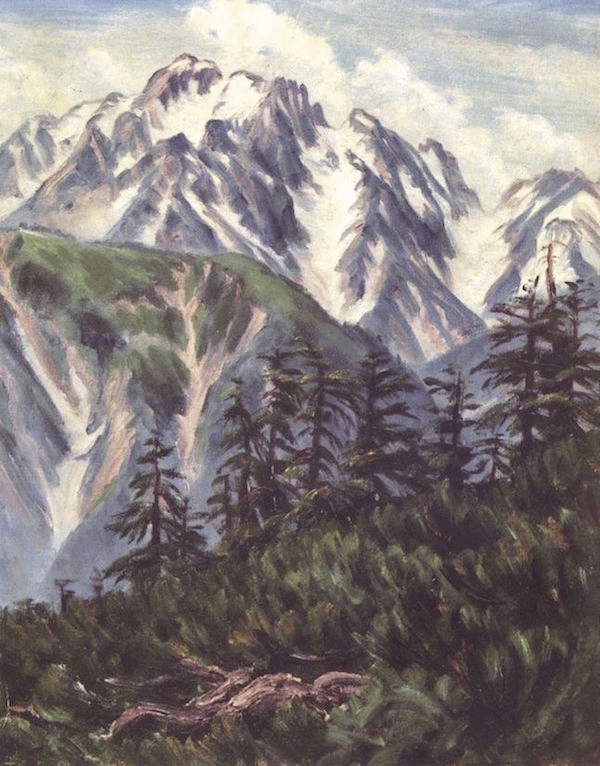
剱岳列嶂（後立山布引より）
［＃改丁］
これは私の前著「山岳渇仰」――戦時最悪の条件下で生れた――に次ぐ第二集で、あれに洩れたものと、その後の文章から選んで、ささやかな一本に纒めたものである。書名はその中の一篇から採った。
山は私にとって全くありがたい存在なのである。いつからか私は山に向えば、思わずぬかずき、拝む癖がついている。いわば山は、わたくし流の自然教の偶像といってもいい。
思えば明治の探検期以来、半世紀を越える年月を、山の恵みにあずかってきた私は、まことに仕合わせであるが、山も時代の外に超然たるわけには行かなかった。今そこには、探検時代に無かった山気の混濁がある。単に炭酸ガスの増加だけではない。一種の悪気が漂うのだ。そして何か山に対する心に欠けたところがある。
それが、ひいて山の自然を破壊する。人間の精神活動の源泉たる自然、その大切な宝庫を、みずから破壊する矛盾をおかしている。遭難はおろか、暗い霧のかなたを指す導標に、〈民族自滅へ〉と書かれていなければ幸いである。
昭和三十五年早春、頼もしき鶯の声を味わいつつ 阿佐ヶ谷の七葉山房にて
清太道人
梅が香や雷鳥の影まぼろしに
［＃改丁］どこから降るのかいつまで降るのか、分らぬような山の雪も、旧正月が峠でようやく間遠に、いつか角度を高めた陽光は、積雪に映発する。久方ぶりに天上の峰たちも、新しいおもてを輝かし合う。長夜の銀世界に、かくて春は明けそめるのだ。この頃画嚢を提げて山に入るこそ何らの清福。今年もそのため、冬山のつかれがぬけないのに又旅支度だが、去春の蓮華山中も実によかった。当時の山日記を翻えしても、あの熱い光りを浴びる心地だ。
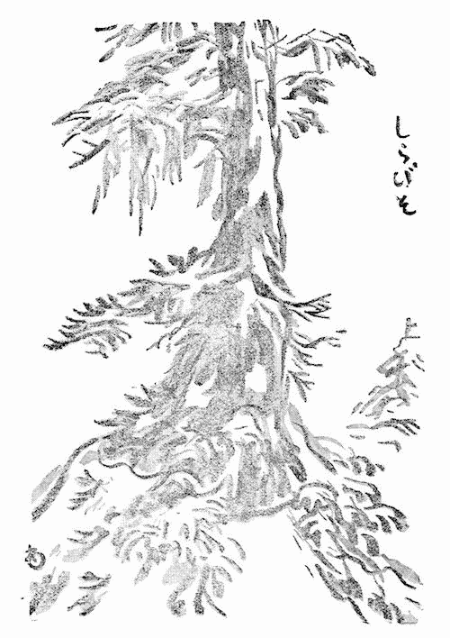
旅立ちは二月下旬の、秩父おろし烈しい日だった。富士も白峰、赤石も、晴れきって烟霞を吐く。北アルプスはさすがに雲をかむって濃紫にかげり、雪がチラチラ舞い落ちる。森上で山人Ｙに迎えられ、新田の彼の家まで来れば、雪は五、六尺もある。一つ棟に馬も住む、広い山家の炬燵で、赤菜の漬物に一陶を傾けると、深い落着きを覚える。
次の日ゆっくり、Ｙと共に落倉に向う。大杉の杜に諏訪明神を拝んでスキーをはく。時折り風が小雪を飛ばす。楠川は雪間に清流を隠顕させる。落倉小屋は客も無く、電燈などより、朧ろな新月と星とが無上にありがたい。
ここにつづいて、栂池、乗鞍までの十数日、まったく日々好日。晴れるも降るも、微妙な変化の美しい天地に囲まれて、激しく又楽しく仕事した。暦はすでに三月に入り、一日まず大快晴。前晩は飛雪のひまに半月がのぞいただけだが、早朝窓をうかがうと、明けやらぬ空に白馬三山が、劃然と現われ、六時二十分には峯々の雪朝陽を吸って、紅梅色に匂いはじめる。私のモティフは、白樺疎らな傾斜の奥に、白馬三山が、山越えの弥陀像そのまま、半身をのぞかす辺にある。
日昇って雪山は光輝を増し、天空濃藍に凝って僅かに一抹の巻雲を浮べ、白樺の梢紫をおびて色めく。午を過ぎると烟霞が山をかすめ、空を濁し、山は大きな影に浸って暮れて行く。上弦の月半天に大暈をおび、鑓、杓子おぼろに沈む。月の暈は、土地では「月の
果して翌日も快晴。日射強く、雪の上に居て暑いくらいだ。雪面融け、スッペンジョ（藁靴の方言）を通して足が湿る。鳥声遠近に聞え、四十雀身辺に遊ぶ。小さな羽虫の類飛びかい、画面に附着して困る。しかし次の日はどんよりして、軒の氷柱しずくを落す。この日、ゴトゴト……というような声を向う山に聞く。Ｙによればトチコロバシという鳥で、よくただすと

五日は最高の快晴。夜来勁風十四日の月を払い、遠山近嶺ひるをあざむくばかり、それだけ寒さは厳しい。暁の明星大光芒を放ち、北斗大棟に立つ。風止んで一天雲を見ず。三山朝暉鮮かに、空色深碧、日射あまりに強きに苦しむ。殊に近い雪面からの反射で眩しさ甚だしく、Ｙに蓆をその辺にひろげてもらって、からくも防ぐ。あまりの好日に、筆をおく暇なく、ついに昼飯を廃す。また雪眼鏡を嫌ったため、多少雪盲の気味で、涙がしきりに出る。もっとも涙は、いつも山を拝む眼をくもらせ勝ちではあるが。
緊張に凝った心身も、Ｙが丹誠の風呂に浸り、静かに盃をふくんでは、快よくほぐれて来る。満月皎々。ただ巻雲乱れて月暈浮ぶ。Ｙは又、これは「月の上り」だが、環中に星があるから降らぬ――と予言する。果して翌日また晴天。四十雀鳴き、うそと覚しき声も聞く。しかし例の
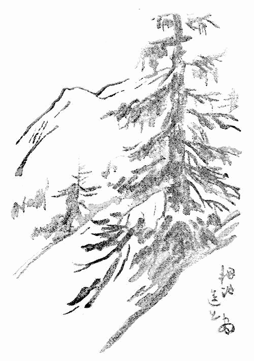
明日は栂池へと荷をまとめる夕べ、宵闇みに星光とくに燦爛。南天にシリウス清冷の痛光を放ち、オリオン
雪やみ薄日さす。楢の芽を兎の食い荒した跡、かけすに似た鳥三羽、こずえに遊ぶ。雪ややふっくりして来る。碧空あらわれ、日ざし強まる。眺望開けて、天狗原、乗鞍の一角間近く、八方尾根に黒菱小屋も指点される。御殿場小屋は無人。戸外の方暖かく、歩くと暑いくらいだ。樺の山際と碧空とが、強烈に境する。
茫々たる神の田圃で、ふと前年五月描いた大きな白檜が見当らないと思うと、傍らの二、三尺の稚木に妙に覚えがある……これがあの大木の梢だったと気づけば、身は丈余の雪上にあるのを忘れたかと笑止。山腹を横さまに登る辺、白馬本山雲を脱して現われ、蒼古の白檜雪をにない、さるおがせ垂氷をおびていよいよ長い。
栂池小屋は二階まで雪中。階下に水汲みに行けば、真暗な天井や柱が細かい氷片を飾って、何か物語りめく心地。二階の窓近く白檜の老樹、
風も凪ぎ始めたので、早昼を済ませ、天狗原に遊ぶ。スキーで前山を斜めに木立を分け、尾根に出れば展望広大、岩菅から白根、浅間の煙、秩父、八ツ、富士、かすかに、南アルプスは春靄のうち。木曾駒、餓鬼、祖父、鹿島槍、五竜、唐松、不帰、白馬、諸山歴々、聖光燦として座をつらね、あたかも天上の九体仏殿を拝する趣き。
雷鳥沢を右に天狗原へ、雪は風にクラストして砂丘状に波打つところ、岳樺去って白檜、栂の梢わずかに点々。天狗原の坦頂に到るや、大小の磊岩、偃松の木末、葉末ところどころ床しくも現われる。北蔭に白馬岳神詞、半ば雪に埋もれて在す。朔風、雲に紛う日本海より、西に仰ぐ乗鞍岳、北に見下ろす
大巖の蔭に画架を構える。巖は氷雪をよろい、凍結した雪面破れて、偃松の枝幹、背を曲げ葉を焼かれて打ちふるう。Ｙはスキーを柱に、毛布を張って風除けを作る。しかし岩角に激した雪煙は、容捨なく座辺を襲い、画もパレットもしばしば白尽。三時間ばかりして業を打切る。日ようやく没し、空色透徹。小屋に帰れば風なし。オリオン五竜を踏んまえて立ち、天狼以下、群星鋭光を放つ。
未明、天晴れて無雲無風。明星やや潤み、暁月軽暈をおびて鑓に照る。寒気和らぎ、洗面の氷水もさほどはこたえぬ。山の朝暉やや黄
にかえて、天狗原神詞から真直ぐ乗鞍の斜面を登る。尾根に近く雪いよいよ固結。岩と偃松に接すれば頂上既に間近か。雷鳥の末広形の足跡、まだ生ま生ましく温かみがあるようだ。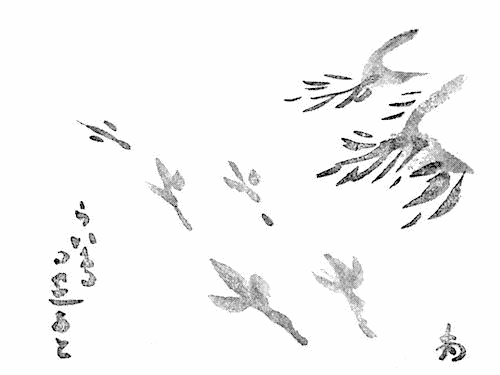
雷鳥の足あとゆかし雪の上
頂上は、ただ見る巨岩と偃松の、点々起伏する大雪原。大池さして越えゆく途上、雪動くと見れば、善哉、比翼の雷鳥遊ぶ。懐かしい限りだ。幸いあまり恐れる気色もない。ゆっくり後をつけながらスケッチする。もどかしがって――捉まえようか、とはやるＹを制して。逃げながらも、処々で物を大分追い廻した気の毒さ、こちらも疲れたし、ひとまず鳥に別れて池の方へ。雪倉朝日の大岳、雪の衣を着膨れて坐す。乗鞍大池はただ洞然たる雪の大窪。岩蔭の日溜りに、餅など食う。昨日に引きかえ、まったく静かで暖かい。霞の中に立つ浅間の煙さえ、一と筋なびきも乱れもせぬ。ひるから山頂の雪原の真中で、岩上に偃松がわだかまり、かなたに小蓮華から本山の聳える所を描く。小蓮華の北面に、榛か樺か秋の草と雪に伏し、稜線は光の覆輪をかけ、白馬東面の雪庇強い藍影をひく。銀灰の空から注ぐ日光は意外に強く、眼鏡なしでは耐え難い。その代り暑い位で、気がつくと手袋を忘れていた。いびきの声はＹが雪の上の昼寝。星烏が一羽飛来して、枯れた声で鳴く。いつの間にか又雷鳥たちが向うの岩蔭に来て、時折りじっとこちらを見ている。又会いたいと思っていたところだ、なんという幸い。四時すぎ悠々業を終る。雷鳥たちは、こちらに害意の無いのに安心したか、私共が下りて行くのを、静かに見送っている形だった。彼らの宿はどこだろう……私は離れてゆく足が重かった。

雷鳥にわれ宿借らん夕雲路
明日は本山へと思うのに、巻雲ぼやけて延びた夕空は頼み少ない。やはり翌朝は、西風に乗った雪が霧藻をなびかせて降りしきり、しんしんと寒い。心残りは多いけれど、偃松や雷鳥にもゆっくり会えた仕合わせに、心はかなり満ち足りている。もったいないほど清らかな粉雪を足元に噴かせて下る。山麓は春雨の中。途上
――昭和十五年四月、「旅」――
［＃改ページ］
この一篇は、大正四年の七月から十月にわたり、黒部の谷間で、画作に従事したり山行を試みたりして暮した日の漫録であって、同七年、雑誌「山岳」第十二年、第一号に発表したもの。その後同八年に、故木暮理太郎君と共に決行した黒部川初溯行も、その企図はこの時に胚胎している。近年の黒部の変り果てた姿を見ては、曽遊も自分ながら夢のような気がして、ありし日の黒部いずこと、そぞろ哀感にたえぬものがある。
南の方、赤石山系を貫流して太平洋に走る大井川、それに呼応して北の方、飛騨山脈を縦断して日本海に奔下する黒部川は、相並んで日本最大最深の姉妹峡谷を形成している。
両者は共に、三千メートルを出入する、日本最高位の山岳群の間を貫通して、勾配の急な、奥深い、そして人跡稀な峡流をなすところ、その形勢ははなはだ相似ている。しかもその性格は大いに異なるものがある。彼は古生層水成岩地を分けて、力を蟠屈させる、これは主に火成岩地帯をうがって、一挙に力を迸散させる。彼は「深さ」が水平の方向にも及んでおり、これはもっぱらそれが垂直に働いている。大井は影に影を重ねて、その奥に物を蔵し、黒部は感覚がただちに深奥に徹して、衝突し、反射し、屈折する……一言にして評せば、曲線的な大井、直線的な黒部。
ひと年、大井川の幽谷をきわめた後、いよいよ強く私をひきよせたのは、実にこの黒部の峡谷であった。それまでの黒部といえば、かつて飛騨山脈の諸高峯に登った際、おりおりこの谷をうかがったことがある。ある時は後立山山脈の峯頭に立って、日本北アルプスの精髄たる立山列峯の、まのあたり歴々と展開するのを見た。そしてその裾の柵を乱すがごとく錯落する見えない底が、浴びせ懸けた雪の流れのはい下りてゆく知れない先きが、黒部川だと知らされた。あるところでは、その閉じられた戸の僅かな隙間から……何か見えた。真青に底冴えた、藍玉のように凝ったもの、七宝焼の金属型に流し込んだ濃い釉薬のたぐいだった。黒部川なら、水にちがいなかろうと思った。
ある時には、やっとその水に近づくことができた。針木峠を西に越えて、鋼鉄の大塊を思わす竜王岳の峯頂を、亭々たる榛の梢に仰ぎつつ、一条の針金に吊したもっこにすがってその黒部の水を渡った。それはまったく透明で、急激に流れながら、底の水が噴水のように上表まで突き上って溢れ、あふれて又底の方へ潜り込んで、水と水とがギシギシ摩擦し合い、しかもそれが、恐ろしい全体の勢いに乗って、飛んで行く。その水の華は、もっこから垂らした足の爪先きで開いた、開いては消えた。しかしそこだけが、やや開けた河原で、前後はたちまち山脚の絶崖によって、厳重に人の目からさえぎられていた。
又ある時は、上流の一部を垣間見た。二つの大山脈のむずと押し並んだ、遙かあわいに、ひびのような青黒い条痕が一と筋、印されていた。薬師岳と赤牛岳との間、猟夫の奥廊下と呼ぶあたりであったろう。一度しみじみ、その谷水に親しんでみたいものだと、かねて思っていた、それが大井川を見て一層つのったわけだ。（大井川については「大井川奥山の旅」――前著『山岳渇仰』に収む――に詳しく書いた）。
時は来た。大正四年、宿望の黒部に入る日が。日本でも富直線ほど好ましい――ロマンチックな、そしてエキゾチックな鉄道が、またあろうか。高い山は深い海に、逆落しに突入している。「親しらず」の荒海も、晴れた七月の空の下では、さすが青畳を敷いたように静かで、霞かげんに漂渺としているが、山と海との相交わる勢いは、はなはだ荒らかなものである。糸魚川、境川、小川などが、車窓をふさがんばかりに壁立する前山の、囲みを破って海に落ちる。そのわずかに開いた扇状地の
しかし反対側の窓から、海への傾斜に一と群ら、ひとむら、漁家が互いに抱き合って、低くうずくまっているのを、見のがしてはなるまい。一方の眼に炎天の雪を望み、片方の目に漁村の石屋根を撫でつつ、翼を張った鳶のように、
泊の町から、南をさして人力車を
この両山脈の間こそ、黒部峡谷のありかなのだ。まっすぐそこを指す街道の方向は、大いにわが意にかなう。しかし川はなかなか見えてこない。高い段丘の裾に、村屋が点々断続しているばかりだ。見渡す黒部川沖積地の稲田は、みずみずしい夏の朝日をいっぱいに浴びながら、この大山脈の「吹きおろし」に、涼しげにそよいでいる。ただし道はもとより爪先き上りだから、荷の重い車夫の背には、早くも汗がにじみ出ている。
樅の木の多い舟見の町を通り抜け、ひとたび愛本の村に入るにおよんで、初めて右手に黒部川が現われる。一面茫漠たる、花崗岩砂のきらめく河原は、ゆるやかな中高の弧を描いて、末広がりに双翼をひろげる。その真中を、どっぷりと藍け紫の水脈が、後ろから衝きやられるように逸やって、流れの末――古人の嘆じた「四十八箇瀬」は、はるか海沿いの光炎のうちへ……。身体じゅうが力でコブコブになるような気がして、かえって息を凝らしつつ、何か叫び出したい衝動にかられる。
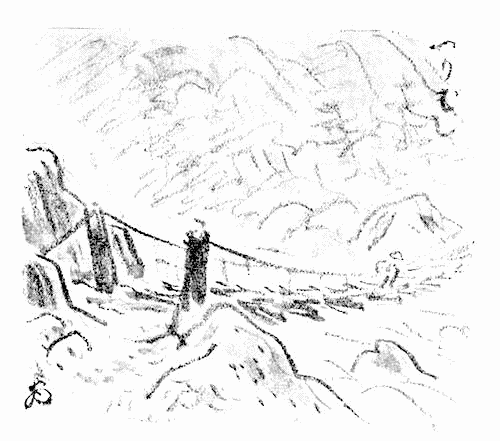
すぐ間近かの愛本橋が、あの黒部峡流の、解放される出口にあたるのだ。ここで両山脈の最後の山脚は、峡流をいったん緊扼して、のち一挙に放散する。そこに、名所図会にありそうな古風な木橋、その袂の高い崖上に、似合いの休み茶屋があって、眼下に黒部川は、九分の透明に一分の名状しがたいくもりをおびたような、最後の深淵を作っている。この茶店に腰を下ろす旅人は、ここに昔から淵の
橋を渡って街道に別れ、路はいよいよ黒部の谷間に入り込む。車などもう通わない。内山のひっそりした山村が、雑木と岩石の間に埋没している。筋向うの右岸には、山腹に寄せて、あの竜女の出た音沢の村。既にここが、この大谷の最奥の山村である。これより上流には、もはや部落を作るほどの余地も、見出しがたいのだ。山人の労作が、見る限りの傾斜にほどこされてある。少しばかりの水田、小豆や粟、
すでに身はまったく、黒部川峡谷に吸い込まれる。しかし峡谷といっても、この辺はまだ、上流に比べればよほど打ち開けて、河原も広い。日は谷心を直射して、炎々と燃えさかる。しかも流水は、底しれぬ蒼味を含んで、惨として暗い影があるのは争えぬ。
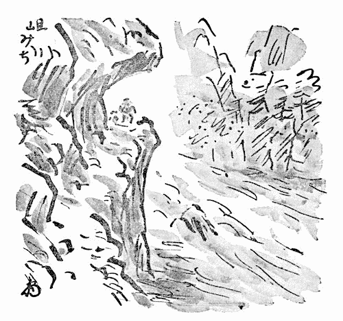
桃原という、段丘の背の小平地に、わずかの山畑と作事小屋を見て、釣橋で右岸に移る辺りから、山がようやく迫って、谷身は屈曲を減じる。宇奈月谷はじめ、支谷は左右から、梯子を掛けた形に落ち込む。山壁には、巨大な熊手でかき下ろした風な創痕を刻んで、そこへ樹木が、怒った爬虫類の鱗さながらに生い着いている。その中には、蒼白をおびた黒部杉（ネズコ）などもまじる。尾沼谷の出合いは殊にいい。双曲線の連続から成立ったような岩尾根を側壁にはさんで、この支谷は本流へまっしぐらに、躍りこんでいる。その上流はどうだ、胸を反らして無理な仰角度に望めば、紫ばんだ雲はみっしりと、そこらに垂れこめ、その奥から堅硬な玻璃質の雪の流れが、一条二条尾を振るっている。うっかりした旅客も、――黒部だぞ！ と、耳のはたでどなられる声に、ハッと気を取りなおすにちがいない。
黒部谷には実に温泉が多い。黒薙川には黒薙、
時には又、温泉へ荷を運ぶ川下の村人にも会うだろう。これはいつも声高に話しながら行くので、すぐわかる。彼らの心は、足元よりもどこか少し別な処にあるらしく、余裕のある様子でやってゆく。だがこの峡谷の高岨道は、馴れた者でもむやみに安心のできる
東鐘釣山、西鐘釣山など、両岸の山壁の中で名を得たのは、花崗岩の大独立塊が、ちょうど釣鐘を伏せた形に聳えているに過ぎないが、この岩特有の、円味のある尖り方――その典型というべきだ。
見ればあたりのせまい河原にも、小谷にも、累々と雪が残っている。それは春の雪崩で峯から押し落されたもので、表面はべっとり名残りの柴泥を被っている。ただその割れ口からは、剥いだ果実の渋を吹いたような膚がほの見え、あるものはそこを水にうがたれて、洞門から怪しい湯気を吐く……それで僅かに雪――と気がつくのもある。これらは少しずつ溶けながらも、日のながい夏でさえ、日光が三、四時間とは射していない谷底で、かつ泥土や柴草に保護されているから、容易に消え去るものではない。わずか四、五百メートルの高距なのに、十月になっても、まだ人々は、これら隠遁者の姿を求めることができよう。
四 鐘釣温泉
――その一猫又谷から鐘釣山の裾を廻れば、もう鐘釣温泉はほど近い。高い崖端から向うの大岩へ、長々と架け渡した釣橋で、――荒らくれた無数の泡沫ばかりが、混沌と躍り狂い、わめき立てる谷水を渡って行けば、針金と柴木の橋桁が、あおられるようにゆらゆら揺らめく。こうしてようやく雑木の葉越しに、温泉宿の屋根を見つけた時には、まったくホッとする。気の張りがにわかにゆるむのを覚える。まして病をもつ人の気持はどんなだろう。まことにこの六里の谷道は、健康な人にさえ、さように楽なものでは決してないのだ。
温泉宿は、川を直上にへだたる、およそ二十間ばかりの山腹にあり、なによりもまず前山が鼻先きに壁立して、グイと胸を圧されるばかりのいきおいに、気を奪われてしまう。しかも直下の谷水は、ろくろく眼には入ってこないのだ。山奥の温泉宿というものに、なんらか予想を抱いてくるほどの旅客なら、かなりよく黒部川を想像し得た場合でさえ、事があまりに意表に出ているため、多少の
ちょうどここは、大蓮華の側壁百貫山と、三名引、毛勝の裾山とが、すれすれに額を突き合せた、その狭い
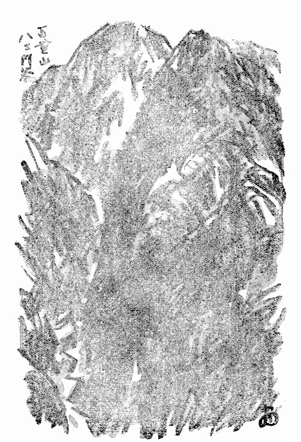
うしろもやはり岩石と樹木の立て壁。そして上流には針葉樹の暗い、下流には落葉樹の深い山々が、いずれも背を伸ばして押合っているから、天空はまったく遙かにして高く、押し狭めるように仕切られているのだ。明るい雲が、その峯の高
宿は山に沿うて細長く、幾棟かの長屋建てや、離れ座敷からなっている。その大岩を踏まえた離れの一室を借りて、私は寝起きした。毎年、五月から十月まで湯を開くのが例だそうだが、七月といえばもう浴客も多くなる時分で、どの建物も混み合っている。客は近在の農家が多く、自炊が大部分だから、鍋などさげた男女が、その辺を出たり入ったりしている。温泉は真下の川べりに湧くので、石を積んだつずら折りの段々坂を、半町ばかりも下りなければならない。木々の緑と、谷水の碧とが、薄暗い坂道を上り下りする人々の顔に映える。
浴場といっても、格別何の設備もしてあるわけではない。ただ見る、巨大な滝縞のある流紋岩壁が、えぐれて半環状に洞門を開いた下に、透明な温泉は豊かに湧出して、潭をなしてたたえている。なまじいに人工を加えず、まったく天然の湧泉らしい状景を保っているのが、いかにも心地よい。岩壁に隣りあって、小山ほどもある根なし岩との間に、され切った大流木が押しつまっている、その奥の暗いはざまから、熱泉はゴクゴクと音を立て、間断なくささ波を寄せて流出してくる。その渦を巻いて深く湛えた中に身をひたすと、忽ねん、五体が拡放され、四周の自然と渾然ひとつになって、流動する快感がある。湯は適温というより、むしろ熱いくらいだ。湯壺のすぐ外には、ささやかな石畳みの防波堤をへだてて、黒部本流の早瀬が、絶壁のあわいから、絶壁のあわいへと、冷えた寒天に似た肌を震わせて、岩を厚くおおいかぶせ、あるいはむごく岩に突き当って、硝子をぶっ欠いたように飛散している。前山の頭は、湯壺にかざす緑樹の梢と重なり合って、ほとんど天を隠そうとする。
これら自然の抱擁の下に、人々は滑らかな湯の波に首を浮べるのもあり、まわりのすべっこい肌の岩に横たわるもあり、又米をとぐ人もあれば、落ち口で洗濯をする者もある。中には高声で歌をうたう手合いもあるが、その声は、さらに高調子の水声にさらわれて、心細くどこかへ運び去られてしまう。湯の質は炭酸泉だから、湯口の岩に備えてある柄杓で、湧き出たばかりのを飲むと、その味はなかなかいい。この湯壺も、これまで大概の年には、大水のため洗い去られて、いくたびか河原になり、この二、三年というもの、ことに洪水が続いたので、あらぬ処に家屋大の岩や流木の類を押流して来て、常に面目を変えているのだそうな。しかしあたりがどんなに変ろうと、穹窿形の大岩壁は小ゆるぎもせず、湯はその裾のどこからか、必ず湧き出て来る、かつて止むことがないと言う。見ると岩壁の一部に、消え消えながら『慶応三卯八月口山奉行辻安兵衛山廻伊藤刑部』などと、おぼつかない墨の痕が残っている。そうした洪水に見舞われたあと、そこへ幾人かが幾日かを費やして、粗末な石畳みの通路を作り、丹念に湯つぼの岩沙をかい出したのが、この人々の群がる浴場なのだ。
宿はあるじの老夫婦と、親類や雇人の若い男女三、四人でやっている。老主人というのは、もう七十以上の、美事な白髯を垂らした、大柄の人物だが、気の毒に中風を病んで、身体の自由が利かず、親類の若者が背負って入浴させていた。だが口はなかなか達者で、帳場に坐り込んでは、他愛もない冗談口を叩いて、浴客たちを笑わせ、時にはお婆さんにたしなめられるほどだ。お婆さんは大分年下らしく、小まめな働き者で、かつ愛嬌者、この人が若い者たちを指揮して、万事を切り廻している。客には病をもつ者、特に胃腸病の人が多いらしいが、健康な人も決して少なくはない。それは農閑期を楽しむ山麓の村人たちだが、たまにはこの谷の空にそばだつ高山へ登る人や、そこから下りてくる人もあり、時には又、上流の鉱山へ通う目つきのけわしい人、山林を巡視する髭の長い役人なども見える。
黒部川も、源頭はなお十里の奥になるから、ここはちょうど中流の一部にあたるわけだ。これから
ここから間近く登れる高山には、東方信州界いに大蓮華諸峯があり、西に毛勝、劔岳、立山などの連山がある。いずれもこの深い谷底から、一気に二千五、六百メートルを奔騰した、ただちに激しさを具象せしめたような、他の山脈に類を見ない、険山ぞろいである。
五 大蓮華登山
――祖母谷・硫黄沢――八月の初め、私はここから大蓮華（白馬岳）に登った。案内には、宿の年寄りたちのめがねで「助まがよかろう……」というので、助七（まはさんというほどの意らしい）と呼ぶ音沢の老猟師を頼んだ。彼はまったく、黒部谷の「生きた絵図」とでもいうべき人間だった。それにもう一人荷担ぎの男を連れて、三人で出かけた。天気はずいぶん続いたあとだが、やはり雨気もない朗らかな朝開けだ。上流さして左岸の林道を進めば、胸のひろがるような、力が余って、
露にうるおう緑樹――ぶなが多い――の夜の間に吐いた香わしい精気の、生ま生ましく散らぼうのが、露と共にハラハラ全身に降りかかって、頭のしんまでキリリと
 透する。
透する。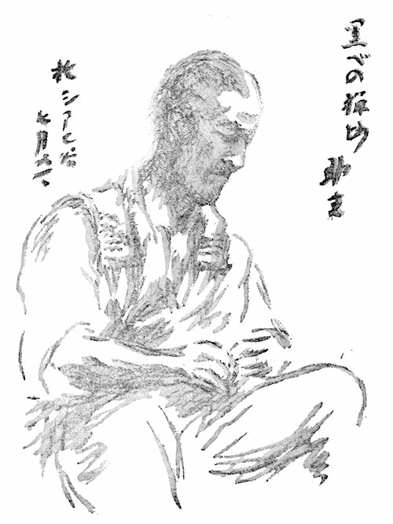
日輪は、八時をすぎてようやく対岸、大蓮華の側山の首すじ辺りまで昇ったらしい。その百貫山と名剣山とが、臂を組み合って突立った肩口から、たちまち幾条のサーチライトを放射する如く、こなたの山上を輝かすものがある。谷間の淡靄は、その光りに飽和して、大
西方、毛勝岳から派出された、巨大な楯の観あるチュジャク山――頂線は針葉樹の鋭い鋸歯だ――それと劔岳の側待山たる仙人山の、見上げるような高尾根、この両山の間から、小黒部谷が奔下してくる。ここで黒部の本流は、横さまに堰かれた形に押しせばめられて、「猿飛び」の峡澗を成している。それは両岸の花崗岩壁が、近い所では僅々三、四間まで額を突き合せて、谷水はその巨大な暗渠の中を、流れるごとくまた流れぬごとく、音も無く過ぎて行くのだ。それを木の間に俯し望んで、ぞくッと襟をかきあわせる。そしてこの上流が、またすこぶるいい。水は勢いをほしいままにし、岩も死力を尽している。水はもんどり打って川底に突き入り逆に跳ね返って、岩を巴にえぐる。堅硬至極な片状の花崗岩壁も、卵豆腐のようにすくい取られたり、型で打ち抜いたかと思うほどの、釜状の大穴を穿たれたりしている。
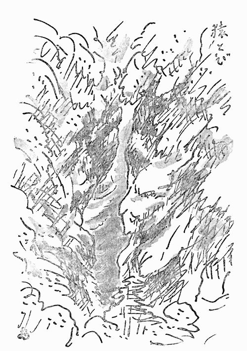
いったいこの谷の側崖は、直線――というよりむしろ、至大な円弧の一部とも言うべき、一種の曲線が、中高に反ったり、中凹にたわんだりしつつ、急角度に川底へ突入するのだが、それが水上四、五間乃至六、七間の辺で、ガクリと一頓挫した形の処が多い。そこにかえって絶壁の安固さが感じられる。その恐るべき全重量は、晏如として、あの沓石の上に坐しているからだ。これは岩質の相違などによる所もあろうが、又ひとつには、この谷水の容積が激変するためではなかろうか。秋の大水は毎年でないとしても、春の雪代ろ水は出ぬ年とてなく、それこそ恐ろしいものだそうな。何しろ流木、岩石、氷塊……そんな物のしどろに交ざり合った、流動体とも固形体ともつかぬ混沌たる物が、勢いに乗じて奔下するのだから、ついに岩壁をかくも擦破するのではあるまいか。たまたま突壁の割れて小峡をなす処では、よく同じ位の高さまで、岩沙の填まっているのが見られる。それが必ずしも、その峡壁の上方から落ちたものではなく、こうした増水のおりに、水勢の中心からハミ出して、押し込められたものであろうことは、少し注意を払って観察するなら、おのずから推測に難くないところだ。しかしこの岩壁の頓挫にも、もっと古い地質時代の氷河の爪跡が、名残りをとどめているとすれば、事はさらに雄大悠遠の規模に入って、到底私など門外漢の推論の限りではなくなる。
親柱は朽ち、針金は錆びかつゆるみ、全体が一方に傾いて、横木や踏板も処々落ち失せた、一髪の釣橋……その蜘蛛の古巣を思わす危橋にゆられて、飛沫を揚げて逆巻く本流を横切れば、路は一転して祖母谷の左岸に入る。さすが流水の落差がひときわ強く、谷は階段状に刻まれて、一歩一歩に早くも峯へ近づく気はいがある。谷を横絶する残雪に出会わす。土民のいわゆる「雪橋」なるものだ。やはり表面には柴土を厚く被っている。これがひとたび融けて、ガックリ二つに割れたなら、谷の通行は一層むずかしくなる。その時は腰まで浸って、川を幾度も徒渉しなければならぬという。既に割れ落ちた雪の残骸は、到るところ河原に乱立して、円錐形に尖り、気泡の多い氷塊となっている。その間を抜き足で渡って行けば、柴泥がツルリと足をさらい、氷塊と氷塊の薄暗いはざまから、底冷たく青黒い気が立ち迷って、すさまじい感がする。
振り返って見てびっくりする。大分開けた谷の空は、いつの間にか、まったく雪の毛勝岳の占むるところとなっていた。輝く雪だ、そして草木の緑も輝き、岩の血色も輝く。近山は真黒に針葉樹に尖って、遙か下を岩壁から岩壁へ、谷水が紫気を帯びて砕ける。完全具足した、かなり理想に近い山谷の風景がそこにある。案内者まで讃嘆の声を強いられる。そして登山の客はもっぱら山を嘆じ、山人たちはむしろ小腰をかがめて、この頭を垂れたり、何か帳面に書きつけたりする「旦那」の様子の方を、物珍らしげに眺める……。
祖母谷温泉の二階建は、前年の洪水に半潰れになったまま棄てられて、崖端に危なかしく傾き、はや灌木だの雑草だの四方から、無気味な蒼い手を差しのべている。熱泉はいたずらに、河原へ放流するにまかせ、ある処は噴泉をなして唸り声を挙げつつ、濛々と白烟を立ちのぼらせる。山腹の莎草は、その吐息に逆か撫でされて、無数の蛇のように、うねうねとうねりつ、ひかりつ、ひるがえりつ……。
林道がはたと絶えて、身はまったく祖母谷峡流中のものとなる。ここに至って、高山登攀者の緊迫した、集注的な、累積的な意識が強く要求されてくる。わずかに生いすがった莎草の根を足代ろにして、断崖の中腹をたどる。深く、勁く、冷たい水流を
一年の大半を、雪のため惨く圧迫されている楓や桂やその他の雑木は、みんな木末を谷底に向けて這っているから、頭を衝かれながらも、その枝幹に取りすがって、それが無ければ到底身を運べないような処を、かろうじて行く頼りにはなる。根曲り竹は一番よくない。乗れば滑る、間に足を踏み込んだら、
いつか谷の下手には、劔岳からかけて立山の連峯が、幻像のごとく現われている。まだ彼我の高さの相違が甚だしいため、山体は胸を張って、のけぞるように仰がれる。黒部大谷の空気は、うるみを持って半透明に湧き上るまま、残雪を鎧った列峯は、磨ぎ澄ました鋭い焼刃に、息を吹きかけたほどの、くもりを帯びている。
その日は谷の上流に野宿した。そこだけが、やや開けた狭い河原だ。上み手には雪田の一端がのぞいて、その上に臨む傾斜は、短い草に、岳樺や深山榛の団落が、点々と交る、いわば六、七合目といった高さ――ちょうど登山者に微妙な誘引力を働きかける、あの高度の景色である。
河原に押し出した花崗岩沙の、ふっくりした堆積が、寝床になる。後ろに叢生する大
谷を追うて朝の雪田に踏み入れば、冷やかな霜気を吐く陽炎が全身を引っ包み、高層の霧は絶えず垂れたり騰ったり、時には大粒の水滴を散らしてくる。満目銀灰の天地だ。いよいよ寂寥孤独の境涯に身を置いたことが肯ずかれる。じっと沈んで行くような気分に浸りつつ、白く固い波間に歩を運んでいると、覚えず行くべき谷の中心を離れて、あらぬ方へまぎれこもうとするのに、ふと気づいたりする……
後ろから、声をひそめて私を呼ぶけはいに、反射的にふりかえる。熊、熊！ と山人たちが指さしする。それをたどると、今登ってきた谷の一方、南をうけた青草の傾斜に、一点の黒い影が見つかった。しかし自分で熊――と合点がゆくまでには、少し手間がとれた。鉄砲の名人だという助七は、今度得ものを持ってこなかったことを、しきりにくやしがる。――あしこを、こう這んで行って……あの辺からドンとやれば……などと、雪の上へ荷をすてた二人は、膝を折って、手まねで鉄砲を構えながら、おかしいほど夢中で、しかし大真面目で、すっかり熊に気を奪われた恰好だ。黒い動物は、一所懸命に草を食っているらしく、ちょっと姿が隠れたかと思うと、又首をもたげて、見廻す風に左右に振っては、又草間へ身を埋めて、余念のないさま、まったく何のかかわりもない、自由な姿なのだ。腹が満ちたりると、下の方の黒木の中へ入って寝ては、又空き腹を抱えて、「草つき」へ出てくるのだと言う。
この辺一帯は、黒部でも最も獣の多い処だそうな――祖母谷と猫又谷との間い［＃「間い」はママ］尾根、不帰岳の三角点附近がその中心だ。助七が冬の
車百合が咲き、行者にんにくが咲くに至って、雪はきわまり、谷も窮わまって、草をたよりに峯へかかる。偃松が、既にして枝をさし延べるから、この手を借りて、急斜面の滑る草根をふみしめる。ついに蒼黒い偃松の海に乗り入って、破砕された岩砂の緩やかに波打つ峯頭へ身を投げ出す。そこは大蓮華山が西方の一脚、
もう天空よほど広く、黒部の絶谷をさしはさんで、競い立つ大山脈の峯頭が、互に放射し合う白冷の閃光の、
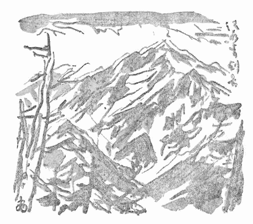
これから清水、朝日（白馬）の峯伝いに、本山さして進むや、東のかた信州の空から峯越しに、黒部へ向けて吹っ込んでくる、劫風の射圏内に入って、耳元がブンブン唸り出し、五体が急に縛られたほどギゴチなくなる。そのうえ、風は堅硬な
 岩の奎角に切り裂かれて、鋭く尖っているから、たちまち全身がしびれるばかり痛くなる。朝日岳と本山をつなぐ雪の頂稜を、駆けるように渡りきって、本山の脇腹――烈風の
岩の奎角に切り裂かれて、鋭く尖っているから、たちまち全身がしびれるばかり痛くなる。朝日岳と本山をつなぐ雪の頂稜を、駆けるように渡りきって、本山の脇腹――烈風の頂上の石室には、いつもながら五、六の客と、客と同数ほどの胴乱が見える。やはり白馬らしい。絶頂の破れた一等三角標下に立てば、ゆうべの天空上層の霧が、絶えずひょうひょうと峯をかすめて、東から西へ急流するばかりだ。崖端へいざり出て、信州の谷をのぞきこんでも、やはり白く重い霧か雲か、ただ渦巻いたり、湧き返ったりするだけだ。それが峯を去って山稜の低所に来ると、霧の流れから脱するにつれ、杓子大沢の大雪渓のおぼろに直下するのが望まれ、姫川の流域の、山も水も一様に返照にひたって、淡い銀光を浮べているのも時おり見られる。
われらは、飲料水にとぼしく、それでいてなんとなくじめじめして、人臭くわびしい頂上の石室を避け、杓子裏の一と所を選んで、偃松の蔭にかり小屋を掛けた。そしてここに四日ばかり滞在した。そこは一箇のゆるやかな好斜面で、偃松の団落を小楯にとり、四周は一めんの美わしい花咲く千草の広野だ。白山小桜をはじめ、岩
流れの末には、黒部の大深谷を隔てて、滝倉から劔、立山の列嶂壁が、ずらりと立ち並ぶ。天晴れて谷の空気が透徹する時には、その雪は茜を帯びた眩光を放って、岩のあくどい赭色も、濃い淡い草木の緑も、みな冴えた天空を映して、菫紫の濃密な影を含み、軋るが如き厳線をもって、空を限り近山を截り、峯頂といわず胸壁といわず、あるいは切っそぐような折線に、あるいは弾力ある一種抛物線ようの曲線に、
さらにまた、底しれぬ絶谷の吐く息が、むらむらと湧き昇る時には、山は一歩退いて、
時に一とむらの雲が、峯頭から山腹にまつわると見るや、たちまちにして山は、乱雲の一大塊と化してしまう。その蝕まれたほどの間隙から、ひときわ鮮かな雪渓が出没して、ほしいままに搦みつく雲を伐るから、山はほとんど常の形骸をかなぐり捨て、無辺際に奔逸し伸展しようとして、物凄まじい動揺を現出する。
雲収まって、深く山頭に垂れることもある。暗く重々しい長大な横雲が、ほぼ同高度に大山脈を半截してじっと身じろぎもしない。山は水を含んだ苔さながら、厚ぼったく隠退して、大小の雪峡は過重の水気を放流するごとく、雲の底をつらぬいて、谷間をさして揺落する。
大蓮華の峯頂は、めったに晴れない。いい天気でも、朝から薄い山霧が、髪をなでつけるように、また藻草のなびくさまに、おおいかかる。しかし間近かの大雪田は、夏の高山特有の、暗いまで濃密な碧空と、強烈に境を劃す。朝日岳は満岩に熱血を潮して、なんという重さだろう。傾斜の花の群れは、強度の日光に直射され、岩の光り、雪の光り、雲の光りに反照され、峯の「吹き下ろし」にゆらめき
大雪田は満面の波形に微妙な明暗をたたんで、それを又多数の浅い縦溝をもって統一し、ところどころは水浅葱に凍結して、硬くしかも流れるように、峯から谷へとのた打っている、ありし日の氷河の夢を浮べつつ。それは日が傾くや否や、早くも夕暮の近づくのを報ずるごとく、全面から蓬々と冷たい狭霧を吐く。雪消の水は、たえずその裾から搾れて滴り、殊に雨がかかると、表面の波紋を乱れ流れて、その美しさはさることながら、かたい晶質の雪も一日のうちに、見ちがえるほど、耐らなく惜しまれるほど、その容積を減ずる。
風雨になると恐ろしい。おのずと
風はまず大蓮華の峯脈の稜線にからんで、遠く底ひびきのする、籠り気味の、沸きたつふうな声をあげる。まもなく朝日岳と覚しき岩壁に当ると見えて、ひっこするような、裂けるような、又割れるような、荒らけてつの目立った叫びを放つや、つづいて物を、一挙に洗い去るか、大きな平ら手ではたきつけるかと思う急迫音が、どっと耳もとをかすめて――はるか黒部の谷間の方へと消えてゆく……。
時どき風雨のひまに、うすぼんやりと雪田や峯などの形が、水銀をといたほどの、ほのあかりの中に見えることがある。天気になるのかと喜ぶ間もなく、又前のような騒動をくりかえすのが常だ。一度その風雨の中に立とうものなら、今さらその力のほどにびっくりする。山稜は殊にひどい。とても立って歩くことはむずかしい。無理やり風の隙きを押し分けるようにして、ヒョロヒョロ進んでも、呼吸が続かない。吸うよりも吐くことができぬ。伏す――やはり苦しい。稜線の風下も側へ下って、僅かに息を整えるのがせいぜいだ。けれどもたちまち全身がビッショリぬれそぼつ、寒さは刻々に倍加する……そんな事をしていれば、つまりは凍死だ。そうした例は、この山にはたくさんある。だが私もこんなひどい風にあったのは、これがはじめてだった。
すこし雨が疎らになったと思っても、風はなかなか止まない。おりおり頂上の方から、人声がちぎれちぎれに送られてくることもある。いつも悲鳴に似て、なにか
夜も時には、満天大小の星で埋まってしまうかと思うばかりの、高山らしい星空もその一角を現わしたけれど、絶えず動揺去来する雲霧に、たちまちかき乱されてしまう。あの山上の生活における感銘深い数々の景象の中でも、最も森厳なもののひとつ――晴れた山頂の暁――真黒な峯角が堅く鋭く聳え立ち、水のにじみ出そうな濃密な紫紺の大空が四方にひろがり、その半天にオリオンが三つ星を中心に斉整の大臥像を横たえ、その下に
それにこの年は、よほど残雪の多い方であったから、杓子大沢などは、雪渓が峯頭まで白い冷たい手のひらを一杯にひろげ、大いなる白蛇の尾は雲を起して、谷あい深くのた打っていたが、そのため
帰路には、まだ登山者にほとんど知られていない、祖母谷の支流の硫黄沢（山人たちはヨー沢という風に発音する）を下ることにした。もとより路などあるわけではない。助七一人が頼りだ。まず中ノ谷を指して、一歩下ると一歩温かい。ふり仰ぐと、雨を残して黒光りする巨岩の、その
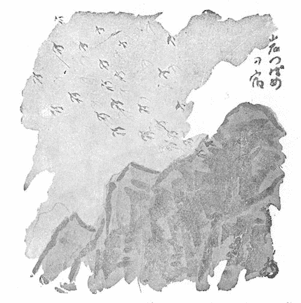
物に沁み入るような陽光が射してきて、湿っぽい身の廻りが蒸気を吐くので、かえって悪寒を覚える。ここに谷をさえぎる一物がある。頭から皮肉をずり剥がれた、赤裸かの奇峯だ。どこか病的な、血生ま臭い、化け物めいた姿である。その裾のあたりが、荒れて瀑をなしているために、この谷は下ることができないと助七は言う。それで、彼が
岩の硫黄沢は細いけれども、崩れに崩れて、まったくひどい荒れ谷であった。その乱岩の間にところどころ、白煙をあげて硫気を吐き、沢水は怪しく白黄濁して、地獄めいた凄気を漂わせている。もとは入浴の出来る処も二、三箇所あったのだが、前年の出水で、まるで跡方もない――と、助七さえ、みちみち驚いたように話していた。これが、中ノ谷を併せてからは、堂々たる大谷となって、祖母谷の本谷へ落ち合うまでの間、距離としてはわずかであるが、山は水に
山人たちは、さすがにこうした難場をこなすわざにおいて、実に至妙を得ているのに、今さら驚嘆させられた。ほとんど垂直に近い屏風立ちの大岩壁を、虫のように横這いするのだ。足代ろ、手掛りといっては、岩壁のわずかのズレか、小皺か、或いは
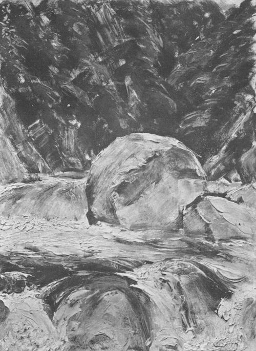
黒部谷底（折尾にて）
私は、その時は神経の集中と緊張で、恐怖はさほど感じなかったが、後になって見て、よくも無事にすんだと思う。そして恐怖はむしろ、事後において強まったのである。（日がたち年を重ねて、この恐怖は弱まるどころか、かえって増大するくらい、恐らく私の一生でも、山での最も大きな恐怖かもしれぬ、むろん外にも数々あるが）。思えば老助七などは、こうした谷間に生をうけて、若い時から危険ななりわいばかり営んで来たせいもあるか、一概に「
祖母谷温泉の廃屋に一泊してから、今度は大黒鉱山を経て、五竜岳に登った。
尾根へ上りつくと、そこは山人のいわゆる「餓鬼の田圃」だ。この辺には珍らしい小湿原で、あたかも人の手を加えた畦とも紛う境界を作って、それぞれに水を湛え、その中に
だが、ここから鉱山への道すがら、餓鬼谷越しに黒部の本谷かけて見渡す景色は、身ぶるいの出るほどのものだ。劔、立山の連脈は、峯頭を目八分に仰ぐだけに、中腹以下がぶっかいたような大荒ら彫りに、角度強く拡張されて、粒状に凝った谷の空気と雪の光輝を交みに反映させつつ、一めん銀箔を摺ったごとくにきらめいている。黒部の奥は、空気が押しつめられて濃い澱みを作り、それを払って赤牛、黒岳など、颯爽と立ちはだかる。額の辺へ、氷嚢でもあてがわれた心地がする。
大黒鉱山から五竜岳へは一里くらいしかない。だがそれだけ急だ。五竜岳といっても、すぐ前山の、見えない肩の蔭にあるのだから。「シキ」へ通う細路から分れて、頂上まで踏み跡がある。草と雑木の山腹を登って、白檜の林をくぐり抜けると、曝露した峯脈へとりつく、後立山々脈の主稜だ。破砕された岩片の積み重なる山稜が、けわしい階段をなして、絶頂まで一気につづく。東北餓鬼谷源頭へ向っての断崖は、峻直にして堅靱、一見危うげに見えながら、また不思議な安定感を与えるのだ。そこらの石英粗面岩は、みなひどく肌目が荒けて、わさび下ろしそのままだから、何か触れるとバリバリいう。満目湿おいの無い灰色の、荒凉として無残な、ひとつの高大な廃墟――といった感がする。その廃殿の大棟が、東方信州へ向けて急角度に崩れかかったところなど、また一種の凄壮美に満ち満ちたものだ。雪が少なく、高度もやや下り、かつ南へ寄ったせいか。白馬では未だ蕾の固かった当薬が、ここでは美しくまたさびしげな花を開いていた。
曾遊の鹿島槍も、ここから近く望むと、また別趣を呈して恐ろしく高く、かつ膨大で、そのうえ満面皺だらけだ。この五竜から連なる山稜は、縦に見るため、脚下から一気に舞い揚って、稲妻形に山の胸元へからみつき、とても登ることなどできそうにも見えぬ。かりに人間をそこに想像しても、あまりに周囲との比例がちがい過ぎて、暗い山ひだのどこかの隅に、吸い込まれてしまいそうに、気が遠くなる。
三角櫓は、折れ残りの一本足を、天の一角に向け、基石の上には、登山者の名札が数枚、板切れと岩片で押えてあった。時おり雲間を洩れる、信濃の高原――安曇の青野は、この日頃、かどかどしさと暗さに馴れた眼には、まったく別種の、
鉱山に一宿を求めるのも面白い。試掘中とかで、鉱山とはいえ、ひっそりともの音もない。事務所の建物は、雪のため傾きながらも、二階建てのガッシリした作りだ。そこには、こういった処によく居るだろう、一種の人物が控えている。――一応尊大で、実は気の毒なほど淋しげな。世間から隔離されたこの人たちにとって、こういう広大にして微妙な四周の自然も、ひっきょう一種の牢獄であって、それ以外の何物でもないらしい。ところで山の中に似合わしからぬ御馳走が、客の前に供せられる。風雨の音も鳥の声も紛らすように、蓄音器が鳴らされる。そして亭主役の人物は、客の持ち出す「山」の話よりも、世間という故郷の噂さに背景を飾って、せいぜい自分を引き立たせる、といった話し方に興味を持っていることが分る。そこで苦労性の客なら、――こんな淋しい山の中で、さぞ御退屈でしょう、などと、最初うっかり、慰問の意を述べたことさえ、（或いは相手の自尊心を傷つけはしなかったか）と、いくらか悔いる気持ちになったかもしれない。
小黒部の奥へ分け入ったのは、八月も中旬に入ってからだ。雪が一日一日と少なくなる――そう思うと、画因をそれに求めている私は、気が気でない。今度も同行は前と同じだ。小黒部の出合いで、林道から分れる小道には、小さな標木が立って「小黒部
実際この道では、いつもどこかで、彼らに会わないことはないくらい、上るもの下るものが絶えぬ。川しもの音沢、内山はもとより、山崎や舟見、或いはもっと遠方からも、隊を組んで稼ぎにやってくる。そして盆だとか、祭礼だとかいう時には村へ下りて、それが済むと又登る、といった風だとの事だ。たいてい男だが、女も多少は見かける。男でも、まだ子供じみた、色白の、キャシャな体つきのも交っていて、そういうのは、ことに痛々しい感じを起させる。みんな鞄やら、行李やら、かがりやら、いろいろな荷物をかさ高に背負って、初めての手合いも多いと見え、――まだヤマは遠いかネ、などと、恐る恐る助七たちに聞いているのもあった。心なしに、幾百年の巨樹の露を浴び、常住に消えもやらぬ高根の雪を踏んで、――そして唯ひと筋に、あの鉱山さして、苦しい労役を求めに行く……
北ノ谷と中ノ谷とが、小黒部本流（
谷は半途から雪渓となって、えんえん峯まで続いている。支谷もみな雪ばかりだ。
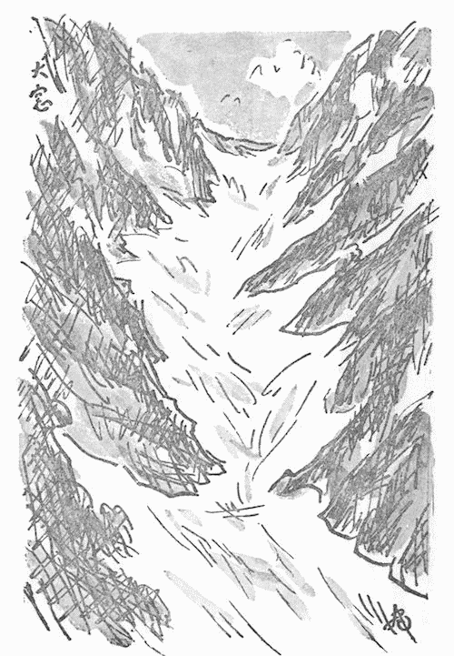
雪渓が一方は劔の大窓、一方は劔沢界いの尾根へと、二た筋に岐れる地点、その山鼻に小屋場がある。ここに私たちは十日ばかり滞留した。『大窓』とは、うまい名をつけたものだ。このどこを見ても山が覆いかぶさって来るような、厳重な目隠しを施した形の迷路の奥に、ただこの谷の上部だけが、ガクリとＵ字形にくり抜かれて、貴い天上の光りを導いてくれる。まったく窓にちがいない。その窓の下から、この本谷目がけて足もとまで、ただ一条の雪の急流――むしろ瀑布だ。それが窓にさしこむ高空の光りを反射するから、谷は深いのみならず、またはなはだ高い感がする。
この大窓雪渓の両壁は、惨忍に皮肉を掻き取られ、えぐり取られ、むしり取られて、血まみれになったというふうな、山の骸骨の曝し場だ。その真只中を割って落ちる氷雪は、まったく流動するかと思われる。盛り上って中高に膨らむよと見れば、搾れるごとくドッとなだれ落ち、ひと溜りして渦を巻くと思う間もなく、また溢れて、一挙に落下する。その間には、支谷が左右から合流して、流れと流れがいがみ合い、
それも日光がひとたび直射するにおよんでは、暗く惨ましい岩の肌さえ、怪しく照りはえ、氷雪は一斉に白熱の痛光を放って、おもてを向くべくもない。これら万年雪から成る雪渓の、その先祖は恐らく氷河であろう。それが「窓」の製作者であり、山体の烈しい彫刻は、彼らが独特の家業であって、流動のさがもまた、今は動かぬこの万年雪の血脈の中に、なお潜み伝わっているにちがいない。
またひるがえって、一方の雪渓を登れば、その中途に「
こうした山と、こういう雪とのあわいに、よく見れば、鉱山と称する塵芥のような建物が、しょんぼりとあり、さらに眼を凝らせば、蟻のような人影が、そこらをチロチロうごめいているのだ。時にはこの無気味な山のどこかで、
騒々しいといったら、この辺の山水は、山水自体、実に騒々しいとも言えよう。岩は時を選ばず、ひとりでに崩れ落ちる。氷雪もいつとは知れず割れ落ちて、山谷をどよめかす。しかも耳に聞える声ばかりではない。どだい、山そのものが、その生成上の性質として、古い迸発岩に新火山岩が割り込み、接触炸裂したためであろうか、それに断層や水蝕、氷蝕まで烈しく働いて、なんとなく錯落紛糾の相を呈し、力の均斉が安泰を欠き、八分に破れて僅か二分につながっている風な、重心の落ち方が多岐で、支点が宙に迷っている形の、一種動揺、紛乱を暗示する、騒々しさの感じを持っているようだ。鉱山などは――こうした処に鉱床があり、鉱山がある――その隙間にもぐりこんで、何か猿の人真似らしく、調子を合わせているに過ぎぬ……そこに偶然ならぬ何かがあろう。
この火薬の音と共に、そこに点もす燈火が、さきに大蓮華でのある晴れた晩、劔の山裾から黒部の大谷を渡って、遙かにその波動を伝えてきたことがあった。自然の寛大にして忠実なる、驚くべきだ。その音は尻切れとんぼで、その燈火は思いの外大きかったものの、甚だ生気に乏しい赤色に見えたが。
私たちの泊ったささやかな空き小屋は、両雪渓の会合する処に臨む山裾にあって、薪は豊かに、水も近間に清冽な岩清水が落ちるし、風は山の高塀にさえぎられて当らず、地盤がアゾ（岩塊の堆積した処をさす
朝起きれば、何よりもまず大窓を仰ぐ。窓の様子で、日和が占えるからだ。「窓が暗い」と、天気はきっとよくない。そんな日は必ず、暗い粘り気のある雲が、窓越しにだんだんと、糸をひいて両側の山壁にからみつきながら、大雪渓を這い下りて来る……あとはきまって雨になる。
大窓の明るく晴れた朝！ 窓は濃い碧瑠璃にぬりつぶされて、しかもその明るさ。大雪渓は上部がまず、茜を帯びたみずみずしい偏光に照りはじめる。両崖はボキボキ折り重ねたような縦横の岩ひだが、斜めに朝日をうけていよいよ固く、厳しく、背を逆立て、破砕した岩砂の堤防も、岳樺のむら立つ崖岬も、等しく抉り出され、剥ぎ出されたごとく明劃で、痛いくらいに精刻だ。
雪は谷にギュッと食い込んでいる、殻に填まった海老の身のように。その互いに境する線は、到る処で
しかし季節が秋に入ったせいか、この滞在中、とかく天気ぐせが悪く、こうした好い日和は三日ばかりしかなかった。ときどきこの大窓の雪渓に、
その間に一度「仙人ノ湯」へ遊んだことを語ろうか。これは黒部谷に数ある無人の温泉――日となく夜となく、冥暗の地下深くから、湧いては流れ、湧いては流れるままにまかせてある、貴い、不思議な温泉の一つである。そしてそれらの中でも、千七百メートルという高処にあって、地図で摸索しても、ちょっと想像がつかない。しかし古くから、近隣には聞えた名湯であったという事だ。立山々麓や黒部の猟師たちの話では、元は遠近から浴客が、山を越え谷を伝って訪ねて来たものだそうで、ある時などは、片貝谷の島尻という村の某々らが、椈倉谷からこの小黒部へ越える、立派な山道をひらいて、牛なども通い、温泉には宿屋が建って、石畳みの浴槽までできていたほどだという。もっとも、それは間もなく放棄されて、その後はまったく廃滅に帰してしまったとの事だ。所がら、まことに、さもありそうな話である。そして現在では、又そのかみの原始の姿にかえっているという――その仙人ノ湯！
その名を聞いただけで、心を動かされるものがある。由来を聞き、地図を按じて、いよいよ引きつけられる。大蓮華から遠望するに及んで、私はすぐにも飛んで行きたい気がした。その時、助七に指さされてみると、黒部の大峡谷を隔てて、金字にそばだつ劔岳の直下、仙人谷源頭の雪を残すあたりに、少しく赭岩の露出するところ、かすかな白いものが眼に入った。あれこそ、その温泉の烟りだという。何だかしかし、急には信じられぬ気がした。見ているうち、その白いものは、薄らいだかと思えば、また濃くなる。そして、ゆらゆらと
大蓮華（白馬岳）に遊ぶ登山客は、眺望の中心をなす立山の大山脈に対する時、その冷岩、熱岩を蔽うて一団とする、盛んな氷雪の冷光に驚嘆するかたわら、眼をこらして、その側待山の一つ、劔岳の北から黒部谷へ派出された仙人山の、その胸間に二条、三条の雪渓が、仙人沢へ消えようとするあたり、特にその南岸を物色して見給え。それが気温の高い日中なら、赤味をおびた岩壁をかすめてかすかに、もし冴えた寒冷の朝か、夕暮ならば、小さいながら明らかに山肌から浮き出して、一道の白烟が渦まき昇るのを認め得らるるであろう。そして、この大氷塊の
しぐれらしい雨の、降ってはやみ、やんでは降る日だった。静かにうるんだ山気の、急に秋めいて、身にしみる日だった。杖一本の身軽で、助七と二人、仙人ノ湯をこころざす。大窓の小屋から、雪渓の固い冷たい波を、一足一足拾って登って行けば、立ち迷う狭霧の奥から、めぼそ（ぜにとり）がしきりに鳴く、駒鳥もひと声ふた声叫ぶ。みな清らかに、ひらめく声だ、そして妙に寂びしい声だ。雪渓の果ての馬の背を乗り越えると、眼下に池ノ平が横たわる。
あたり一面の雪田からしぼれた水であろう、大小、七、八つの池が、やさしい形にたたえて、若やかな草間に、そっと置かれてある。その古鏡のようなおもては、山霧をうつして、月を思わす白光に、もの静かに照っている。驚いたことには、その一つの岸辺に、地ならしした所があって、助七の話では、ここに鉱山の飯場が建つのだという。どう考えても似合わない、何となく、建ちそうもない気がするけれど、又思い切ったことをやる人たちだ。この水を使うのだな、ここらも汚なくしてしまうのだろうな――念を押すように、そんなことを呟くと、助七はかえって、腑に落ちぬ――と言いたげな顔をした。近寄ってみれば、水はさほどきれいでもない。岸辺には藻が茂って、箱根
濡れた岩塊の、青草の中にどっぷりと、紫をにじませているのが美しい。その間に路を求めて、仙人山の肩へ登る。この頃、魚津の人とかが入湯に来たといううわさだし、鉱山の人たちも行くことがあるかして、一と筋の踏み跡がついている。足の底の方から遙かに、山を震わすような響きが伝わってくるのは、南方一めんに湧きかえる白霧のうちに、大瀑をもつ劔沢の流れているのが、それと知られる。近く肩越しに、小窓の雪渓の一部が、今にも落ちてきはせぬか、と危ぶむばかりに、また頭上には黒部別山の鈍頭も、時おりぼんやり霧の幕に映し出されたけれども、眼界を己れ一箇に吸収すべき劔岳は、ふっつりと眼前の世界から縁を絶って、有るのか無いのかさえわからない。
仙人山の肩は、さすがに高いから、偃松がある。偃松も
花野を東へ次第
雪の上には所々に、熊の糞を見かける。ある所では、岳雀（岩ひばり）のむくろが一つ落ちていた。取りあげて見ると、堅く眼を閉じて、足をちぢめ、羽毛はバラバラに荒れている。二、三日前の風雨のかたみかも知れぬ。厳酷な自然の相剋をしのばせる。私はそれを又そっと、雪の波の底深く蔵めた――冷たい、しかし山の好きな彼女には、最も落ちつける墓場ではないか。
左右から大小の雪渓が会合すると、間もなく霧はうすれて、そこに烟をはく山腹があらわれた。湯へ来たのだ。花崗岩が錆色に
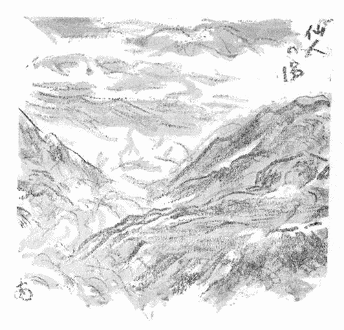
雨のひまを見て、小屋に着物を脱ぎ捨てて行く。湯ぶねは、岩塊と沙泥で無雑作に築かれ、硫黄の華が、塗ったように厚くついている。岩沙を少し掻い出して、一方の大きな花崗岩塊に頭をもたせ、湯ぶねいっぱいに身を延ばすと、ちょうど工合よく貴い湯に包まれる。温度はすこしぬるめだが、そのままじっと、仰のけに身を浸しているうちに、全身の毛孔の一つ一つから、しずかにしかも鮮かに、湯のしみとおって来るのが感じられて、こころよい。一度むらむらと湧き乱れたよどみは又落ちついて、そっとからだの上をおおっている。
からだは湯にまかせたまま、眼を外界に遊ばせる。近くの岩のはざ間から噴きあげる白烟の中に、山の端にしげる岳樺などが、影絵となって写ったり消えたり、揺れたり動いたりする。谷の向う岸、古めかしい幾条の縦谷をうがった仙人山の大傾斜には、樺や榛の老木をめぐって、雲の群れが長い裳裾をさばきつつ、手をつなぎ、袖をひるがえし、散りつ、もつれつ、舞い歩く。仙人谷の末は、半開きの末広なりに開け、黒部の本谷をへだてて、大蓮華つづき、祖父谷の源頭あたりか、厚い雲の垂れ幕に半ば隠れて、昔紫にふかぶかと横たわっている。雪もものうく、瞼を合わせているらしい。天頂はただ、雨をふくんだむら雲の、暗み明るむわだつみで、その波しぶきが、時にハラハラと散りかかる。
湯の流れは絶えず浴槽へそそいで、
行儀よく五体が、湯槽の中に蔵められたところは、そぞろに古代
浴後の身をゆるゆる運んで、また霧に暮れゆく小黒部の小屋に帰った。道のりは、たかだか一里有余に過ぎぬだろう。無人の温泉はなおこの外に、小黒部の下流にも一つあって、これも元は浴舎が建ち、客を呼んだものだが、やはりある年、出水のため荒らされて、その後は湧出口も変ってしまったそうな。また餓鬼谷の下流――あの「餓鬼の田圃」（前出）の直下にもあって、ここは湧出量も多く、盛んなものだそうだ。その他、本流に沿うて幾つかあり、小さいのまで数えたら、どれほどあるか知れないらしい。食事の前後など、助七の話を聞いていると、いかにも黒部本流の豪快さが、想像されて興奮する。この間の硫黄沢の苦しさ、怖ろしさが、もう強い誘引力に変っているのに気づいて、思わず微笑される。あの黒部別山や仙人山の見えない裾が、いわゆる「下廊下」の険だ。ぜひ一度、そこをきわめよう――と、助七に堅く同行を約したのだった。（これが後年、木暮理太郎君と共に試みた、黒部初遡行となったわけである）
温泉のせいばかりでもあるまいが、黒部谷には一帯に、蛇が多い。ことに
蝮のいるのを知らずに通ると、蝮は「眼の無い奴だ」と笑うそうな。――蝮は、見たら殺さにゃならねぇチャ、彼はそう言っていたが、やはり……もっともだと思う。誤って踏みつけなどして、かまれる者が、ここらでも年にかなりの数にのぼるそうだ。蝮はあまり高い所にはいないようだが、私の見た中では、南越の頂上――約千七百メートルが、一番高かったろう。アゾで草が茂っている、ことに雨上がりのそんな処では、ちょっと先頭に立つのは躊躇される。それに、絶壁伝いと反対に、足袋の底の破れているのは気持ちがよくない。
九 鐘釣温泉
――その二、夏から秋にかけてこうした厳しい山間で落ち着ける処は、やはり温泉に越すものはあるまい。この大地の至深から地表に湧き出る、熱い不思議な流動体の手で、人間は「まるごと」赤児のように、自然に抱きとられる。温泉の使命は、自然の博大甚深なる愛の、その涙もろい一面を、ありのまま眼前に流露させるところに存する。彼はかくて長い暗黒の旅を経て、ここにその恵み深い姿を現わしているのだ。温泉は人にはいられねばならぬし、人は温泉にはいらねばならない。
祖母谷温泉が無人の境になってから、この鐘釣が、黒部谷では人のまいる温泉の奥之院になっている。その資格は充分にある。浴客の多くは、さすがけわしい長道中に僻易して、少し谷の奥過ぎると思うらしいし、清純な自然の姿に慕いよる登山の客は、も少し上流にあったら……などとも思う。しかしこの辺が、まず調和のとれたところだろう。それだけに、深山の気と塵界の匂いとが、奇妙に交り合っている。位置は谷の中流、黒部大峡谷の中心に近い地点にあるのに、海抜高距は僅か四百メートルそこそこに過ぎない。――いかに谷の底深いかが解ろう。山は迫って、夏も雪を蔵しているが、一路はまず紛れもなく、半日程にして村里に通ずる。
両方から山のせまり合っていること――ちょっと想像の外だ――が、同時にまた山の深いことを思わせる。谷の幅は、山の中腹でも三町とはあるまい。陸地測量部員の測ったところでは、温泉から頭上に仰ぐ百貫山の頂きまで、直距およそ八百メートル、傾斜は三十六度三十分という事だったが……。近所に雪があるといっても、夏はずいぶん暑い。蚊もいる。そのうえ人を刺す双翅類の悪虫が四、五種はある。だが朝晩はさすがに涼しい。そしてその朝夕が、大へん長いのだ。
朝陽は、夏でもようやく七時ごろ、峡谷の側壁をなす山の凹所凹所から、谷間へ斜めに射し込んできて、もくもくと木深い山の傾斜を浮き出させるが、前山の頂きを越えて、宿の廂をのぞくのは、九時ごろになる。まして谷底の水面に達するのは、既に十時を過ぎた時分だ。午後三時といえば、日輪は早くも後山に隠れて、谷間は暮色をただよわす。峯ごしの光りだけが、前山の腹から胸、胸から首……とだんだんに移ってゆく、西山の影がそれを追うて這い登るのだ。たちまち最後の陽光が、熟した果実の色に、百貫山の峯頭を染める刻限には、宿のあちこちに燈火（石油ランプ）がちらめいて、谷底は既に夜である。
それだけに、気象は弾力の強いものだ。晴れた日など、影が濃い半面、光りは際わやかに鋭い。一とたび光りに触れるや、今まで薄い藍色のヴェールをかぶっていた流水は、一挙に引火して白熱し、一時まったく光の動乱と化してしまう。しかも夏の谷間は、得て曇りやすい。一朶の雲が、天窓のような谷の上空に浮べば、狭い谷底はたちまち、日の目を見られぬことになる。谷間の空気は、光りから陰、冷から熱と激しく脉動する。
ことに南風が、多量の電気を荷なった乱雲を駆って、谷を閉塞する時なぞは、からだがベトベトにふくれあがるかと思われ、頭のしんがズキズキ痛んで、息苦しくなる。しかしそのあとは、きっと北風が逆に、谷のしも手から吹き上げて来て、いっさいの混迷したものを一掃し去り、谷間は突き抜けたように、清爽の涼気に洗われる。人は着物を一枚重ねて、秋の近寄ったことを感ずる。
時ならぬに、谷水が急に濁って、押し出してくることがある。水声のうちに、耳のせいか、遠雷らしいとどろきもまじって断続する。上流は雨かナ――と思う。薄気味わるい一道の冷気が、水と共に吹いて過ぎる。だがそれだけで、何事もなく終る時もある。そうかと思えば、豪雨が俄かに注いできて、前山のしぶきが宿の軒を叩き、方々の
浴客の出盛りは、やはり夏の末から、秋の初めにかけてだ。中でも旧盆の前後など、多い時は三百人ぐらいもいる。薪を運ぶ男、火を焚く女、飯を炊く者、汁を煮る者、崖ぷちの共同炊事場は混み合う。坂道を浴場へ通う人たちも、手ぶらのは少ない。手桶を提げる、鉄瓶をさげる、鍋をさげる、徳利を持つ、洗い物を抱える……みんな、久しぶりに得た休息の、ありあまるような時間と精力で、単純な生活をも、できるだけ豊富にしようとして、楽しげにしゃべり合い、笑い合い、しきりと他愛ないままごとにふけっている。
朝起きると、宿は谷間でありながら、水がわり合い乏しいから、本流まで降りて口をそそぐ。水は思ったほど、冷たくはない。峯の雪には遠く、川の中に温泉の湧くにもよるだろう。朝陽は華やかに、上流の山坡を染めて、しずかに金色の
温泉も、朝がいちばん清らかで、みずみずしい。そして肌ざわりが生ま生ましく、かど立って、刺戟が強い。それに湧き出たばかりの熱いのを、口ずけに飲むと、空になった胃の腑に、もろに突き通って、内外から湯の精気が、五体の隅々にまで沁み渡る。いかにも身体に利くような気がするけれど、それだけに疲れるから、うっかり長湯をしようものなら、一日じゅう、何かするのが臆劫になる。朝は浴客もいったいにもの静かだ。
湯の温度や量も、日によって幾分かずつ変化がある。それが天気に何か関係があるらしく、宿の人や浴客たちは、その湯加減から、自家流の一種の天気予報をやっていた。すなわち、湯がぬるくて少ないと、天気がつづくし、熱くて多い時は、天気が変る……といった具合だ。それが、「当らずといえども遠から」ぬ効果をあげているのは、おもしろいと思った。ちょっと不思議なようだが、これは予報というより、事実なので、私も少し注意して見たら、湯が熱くて量も多い時は、川の水かさも雨で高くなっているし、反対にぬるくて浅い時は、晴天つづきで谷水も減っている――そういう事に気がついた。気温が高ければ湯はさほど熱くは感じないし、寒ければ逆に熱く感ずる……それはあるが、そう簡単には片づけられまいし、私も首をひねって見たが、素人流の仮説はこうだ。この温泉にも、地下で途中から枝分れした湧出口が、他に幾つかあって、それが水中、あるいは谷水とすれすれに開いているとする。それは天気がよくて、川の水位が低い時は、放流されているのだが、上流に雨が降って、川水が増すと、水圧でその湧出口がふさがれたり、さまたげられたりするため、ここの湧出口に湯が多く廻ってくる……そんな風の事がありはしないか。もちろん本当のところは、専門家をまたねば分らぬが、まず気温、温泉の温度、川の水温や水位などの変化を、関係的に調べる必要があるだろう。さき走ってはいけない。
昼近く、谷間の空気がだんだんと日光に射透されて、洞窟の形に引隠れた浴場のあたりも、影が追われるように去ると、湯壺はいっぺんに底まで照らし出される。少し深いところは、妙に冴えた青味をおびて澄む。輝く波紋は、底のきらめく真砂に、ゆらゆらと五彩の影を走らす。そして己れの裸形を見て、誰でも、思いの外の、その美しさに驚くにちがいない。そこに何のさまたげるものもなく、ただちに鮮かな血の流れが認められる。それに日に向った側からは、からだも手拭も何もかもが、みな虹のような彩光を放つのだ。一切が明白にして、しかも一種、霊幽の気に満ちた思いがする。ただし光りと熱と湯気に酔って、目がくらみそうになるから、とても長くつかってはおられない。
昼間はそれに、虫が多い。大きな牛虻が来る、小形の虻も二、三種ある。うっかりしていると、所きらわず刺される。驚くほど痛い、キリッと急激にくる。しかし喰いつけばなかなか離れないから、たやすく叩き殺せる。もろくも仰のけに湯の中に落ちて、そのまま漂い流れてゆく……よく見れば、大きな黄緑色の複眼の燦として輝く、美しい虫だ。刺された痕は、しかし別だん腫れたり痛んだりすることはないようだ。
白昼はどうかすると、見る限り、さらに人影も無く、広い浴場はただ光りに満ちて、森閑としていることがある。その静けさをひとり味わっていると、そんな時に限って、よく
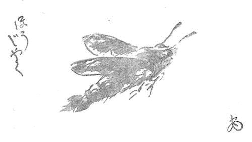
息を殺して、その一部始終を見守っている私にも、彼女が何をするのかは、よく分らないのだが、飲むのなら、得意の長吻を持っているのだし、尾の方まで湯に浸すわけはなさそうなものだ。そして元来湯壺は、湧口に近い熱い方と、それを広く湛えた適温の方と、あらまし二つに分れている形だが、彼女が「はいる」のは、いつもその適温の方に、きまっていた。決して湧き出たばかりの、熱い方へ行くのは見たことがない。そして動作も判でおしたように同じだった。私のいない時のことは知る由もないが、人けのない静かな時を選んで来るらしいのに、彼女が私を邪魔とも思わないでくれるのは、うれしいことだ。私はこうした、夢みるような真昼時の湯あみを、彼女を心待ちして、ひそかに楽しみにしたものだ。
運動する肉体の美しさ。およそ人体が現わす麗わしさ、和らかさは、こうした四周の厳酷なる風物を背景として、ひときわ鮮やかに躍動するのだ。そして、その肉体を動かす心！人生の幸、不幸、喜劇、悲劇は、この濃密な湯気の綾の目にも、その一端をチラリとのぞかす。それをたぐって行こうなら、どんな秘境に導かれるか、とても想像も及ぶまい。そして目を
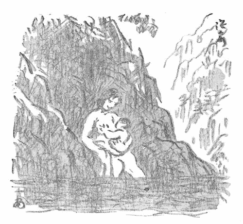
夜は、晴れれば、細長い空に銀河が流れる。むしろ空全体が、銀河のようなものだ。昼間の谷川が、暮れると共に、天に移った形だ。黒い山の端を射抜いて、光りを飛ばす星もある。織女、牽牛は、天上の川と地上の流れの間をさまよい、谷の末には北極星が、厳として動かない。月の晩はまたいい。山も谷も、光りと陰で、だんだらの大滝縞に染めあげられる。そして月光に磨き出された側壁は、一種のピリッと辛いような痛光を反射する。河原の乱石も、しらじらと浮き出す。流水に至っては、まるで蒼い炬火の行列だ。宿の狭い中庭も、妙に広々と見え、一本立ちの大欅が、籠目の影をそこへ布きわたす。その清光の中に立てば、湯上りの頬に、そっと涼しい銀の掌らを当てられる……。
しかし夜空もまた、雲のとざす時が多い。瀬の音は、夜に入って倍加するようだ。湯場ではことさらそうで、また曇った夜ほど、そして深夜ほど、それがいちじるしい。およそ、あらゆる乱雑な音響を
ことに闇の夜更けなど、一人静かに湯に沈んでいると、瀬音は時に、おびやかすような高調子を出す。大地のシンの方から響けるかと思う、それは踵から頭へ抜ける。一度襲われた心には、音はどこまで高まって行くのか、知れない気がする。湧き出る湯のささやきまでが、どうやら強いて調子を抑えているのではないか、とも疑われる。何かしら身うちから忍び出て、闇の中を彷徨するものがある。たちまち谷水が増え、湯も溢れて、今にもあれ、この岩壁を蔽いかぶせ、暗い谷間にみなぎって、何もかも一切が、埋没され押流されてしまうのではあるまいか……そんなさらわれたような気持ちにもなる。それでいて、もとから私はこの深夜の、人
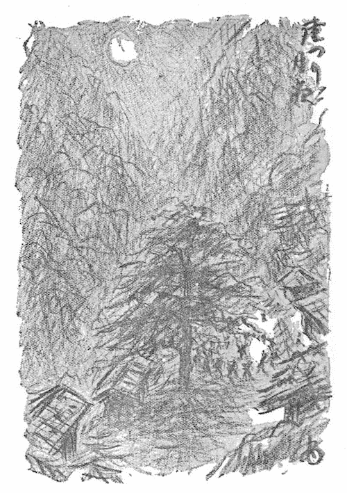
浴客は大がいこの近在の人たちだから、八月半ば、村々の盆休みには、かえって一時少なくなるが、その前後がいちばん温泉のにぎわう時季だ。村じゅうの若い男女が、総出でやって来たかと思うような一団もある。女衆の中には、赤児を背負って来るのもずいぶん多く、早婚の風習のあるこの地方だけに、一見母子とはうけとれないのさえある。鉱山へ往復する人々も落ち合っては、長屋のすみずみ、廊下、台所はもとより、背戸の山腹にある豆腐作りの小屋、納屋の屋根裏、薬師堂の仏前までも、人また人で充満する。そんな時は、夜などよく、薬師堂の広前で、「盆おどり」が幾組も始まる。いかにもひなびた調子で、おはら節というのが多い。雨が降ると、部屋の中でもやる。かげで聞けば、手拍子が高く水音を
温泉の滞在客目あてに、男女幾人もの物売りが里から通ってくる。海の魚だの、名物の黒部西瓜だの、野菜、菓子、雑貨……いろいろな物を背負ってくる。注文すれば、またどんな物でも届けてくれる、調法な人たちだ。それに、長い逗留客には、この連中の愛嬌にする里の噂話が、なかなかの魅力があるらしく、話上手な一人の中年男なぞ「××さん、××さん」といって、引っ張り凧になっていた。私の処へもよくやってきて、品物と一緒に、ひどい土地なまりで、いろいろの話を置いて行った。浴客は大てい、心が里の方へ向いているらしい。宿の隠居の、あくどい冗談口を、たしなめたりするお婆さんまで、私に向って「あんたも、たまには舟見へなと、行って来ましょ……」と、笑いながら謎めいたことをいう。そういえば、舟見には遊女屋があるのだった。貧しげな家並の浅黄のれんの蔭から、じゅばん一枚の女がチラつく、ひなびた一廓が町はずれにあった。鉱山の上役なども、時々そこらへ出かけて行くらしい様子だった。とかく山奥の方へばかり、ひかれているような私の気持ちは、一緒に歩いた助七たちにも、ひどく解しかねたものらしい。
八月中旬からしばらくは、ほがらかな日が続いた。谷間の空気は、だんだんと乾燥して、透徹してくる。空と山の境界が、おのずとカッキリ見え出す。針葉樹はいよいよ尖って、紫がかった影が彫りつけられ、落葉樹の葉は、いつとはなしに、淡すり黄味を潮しはじめる。とんぼうが群をなして、谷の中空を飛び廻り、のした翅から鋭い光を顫動させる。虫の声はますますしげく、ますます高く、馬追いやコオロギなど、不意に部屋の中の耳元で歌い出す。鳥は、この谷間は多い方ではないらしいが、ガッチ（かけす）や
こうして、色も、光りも、音も、香も、ことごとく身にしみるような調子を帯びる。まことに「秋」の来たことが、まざまざと感じられるのだ。そうなるとまた、天候がひどく変り易い。ことに、見える空というのが狭いだけに、変化はいっそう急激だ。少し雲行きが速いナ――と思うと、一瞬のひまに空の色は、白が黒と一変する。そして雨が、山をかすめてそそいでくる。雨の中に雲が湧く。湧くともなしに湧く。そして数多の手をからみ合って、山へ吸い着くようにして這い廻りはじめる。そのため山は、思いもよらぬところから、幾段にも仕切られて、平常は一気に壁立している前山も、はなはだ重畳した奥深いものとなる。そしてその組み立ては、瞬間ごとに変転する。堅い岩壁も、厳つい樹木も、たちまち柔か味をおびて浮動する。しかもその調子は、息も吐かせず消長する。まるで魔法としか思われない。湯に入る人は菅笠をかぶる。笠に当りの強いのは、しだれかかった楓などの、ゆりこぼすしずくだ。
少し強い降りが続くな――と思う時分には、木々はぬれ髪を乱したごとく山肌にまつわり、側壁に並列した大小の空谷は、みなそれぞれに瀑布をかける。いつもは宿からではよく見えない本流が、木の間に黄濁した河身を盛り上げている。上流も降ったそうな。雨に洗われて、怪しく光りながら突立っている、源流の山々が想われる。物々しい感が四辺を立てこめ、おのずから気の昂まるのを覚える。
浴場へ下りて見ると、川はひどい悪相を呈している。まるで巨大な一条の泥流だ。アクの強い、渋味の烈しい、有機物無機物の嫌いなく、混淆し乱合した泥状の物質が、眼にもとまらぬほどの恐ろしい速度で、谷いっぱい、引っ擦るように疾駆している。流れに触れる岩石は、小さいのは巻き込み、押し流し、打ち割り、磨りつぶし、大きいのは突き当っておどり越え、はね越えるから、流れの表面は褶曲山脈さながらの凹凸だらけ、屈曲だらけだ。しかも重量が勝っているため、砕けず、散らず、勢いが強まれば強まるほど、既に固体に近くなって、轟々の響音のみが、地心にとおるかとばかり、震いうめく。
飛び行く速度の印象は、ただ辛うじて、この固体に近い大泥流の面の、目くるめくばかりな、刹那刹那の変転から得られるだけだ。その有るかと思えば無く、無いと思えば有る、といった風な、端睨をゆるさぬ、複雑かつ無数の面は、一斉に、これまた濁った低い空のほの明りを、交互に鈍く
こんな時は、湯も見る見る水かさを増し、増すにつれてはいれなくなり、果ては浴場そのものまで、姿を消してしまうのだ。初め、濁流の余波は、防波堤を越えて打ち込んでくる。温泉の流下をさまたげて、遂に幅広い波のうねりが押し寄せる。それで湯壺は急激に深さを増す。濁って、底の方から低温になった湯は、立ち上った腹から胸、胸から頸へと、波を揚げる。四面に満ち渡る轟音の中に、ことさら際立つのは、岩石と岩石の衝撃し合う響きだ。ついに冷たい波が、眼の高さから、うねってきて、爪立った膝頭らが、ふわつき出しては、いかな物好きの浴客でも、いたたまれたものではない。
しかし、こうした悪変は、そう長くは続かない。次第に泥流の色があせて、夕暮の残光の底に、半ば透明を回復した藍けのある水沫が、ところどころ活火山の煙と乱れて、勢いの過ぎゆく気配のみが感じられる。豪雨は過ぎ去ったらしい。そうした出水のあとには、湯壺は岩沙で、浅さ浅さと埋没されているのを見出す。上層には、灰色の粘り気のあるほど細緻な沙が、ふっくりと澱んでいて、それをさらうと、下からだんだんに、粗い岩塊が現われてくる……もとの湯壺に復するには、容易な労力ではおっつかない。
水と共に、谷間もなかなか強い風が吹く。南風と北風とが、谷を筒抜けに、吹き下ろし吹き上げる。平生はじっと、濃まやかに凝集している峡底の空気も、そうなると、急に強く筋張って、谷を押拡げんばかり急流する。水に臨んで、枝をかざした大木などは、逆に崖腹に押しつけられて、からくも岩に食い込んだ根を力に、血の気の失せた蒼白のうら葉を、ヒラヒラさせて叫んでいる。無理やり枝から引きちぎられた青葉が、落ちるでもなく、揚るでもなく、眼には映らぬ風の筋肉――気流の進路――の間を、それを巧みに暗示しつつ、ひらめき、くるめき、不規則に縫って、行方定めず、飛び去り、舞い来るのもある。
おりおり、突如として、迅雷に似た響きが起る。
こうして繰りかえされる、あらゆる動揺の、一度は一度より、動から静へ、熱から冷への、争いがたい微妙な推移の感が、持ち来たされるのだ。そして、これら自然の動揺変化につれて、浴客もまた変動する。一時のざわめきは、いつの間にか止んで、大分静かになった九月の浴湯を楽しんでいるのは、富山あたりの町かたの、冨裕らしい家族連れの湯治客など、それも幾組か数えるほどにすぎない。とじ糸も新らしい、ふくよかな丹前の色が眼につく。山林巡視の役人連中も、長い山暮しの帰り途らしく、隣室で、とってきた蝮を火鉢であぶりながら、酒盛りなど始めるのもある。高声で笑い興じているかと思うと、妙にしんみりした調子になる……
――僕なんか、もう古くてだめだよ、若い人がどんどん出てくるからなァ……
――そんな事はありません……
――そういえば、君などもまだお若いようだが、ずいぶん廻りくどい学問を、されたものですナ、惜しいものだ……
――……どうも好きだったものですから……
息苦しい気持ちで、部屋から戸外へ逃れるように出てみると、真黒な山影は星空を押しせばめて、限りも知らず、重々しく横わっている。巨大な渓声は、どうどうと小止みもなく、永劫の響きを伝えてくる。そして四辺一めんの涼しい虫の声々が、それに磨きをかけるように、やさしい伴奏をつとめている。天地自然こそは、実に何の迷いもなく、何の拘わりもなく、おごそかに常住不断の進行を、進行しているけはいがある……狭く仕切られた天の色が、日々に熱気を失って、冷やかに澄んだ藍色を帯びる。それを反映して、あらゆる物の影が、一様に冴えて、寒むざむしく顫える。いつとはなしに、山にまつわっていたうん気が、
狭い谷間は、いよいよ厳しく緊迫して、何もかも鮮かさを増し、そこにまた、新奇な景物を生み出す。向う山のあたりで、不意に、キァー……と、赤児の泣き声にも似て、それにしては鋭く激しすぎると思う、怪しい叫びが起る。何となくゾッとする声だ。それと共に、樹の枝などをベキベキ折るらしい音も聞えてくる。猿だという。夜更けなぞに、その声を聴いて、初めは、誰か浴客の連れている赤児の夜泣きかと思っていた、それほど人間の声に近い、それだけ又強く胸にこたえるのだろう。浴客の世話がひまになるので、宿の若い者や女中、豆腐造りのおかみさんなどが、よく背負梯子や籠などを負っては、山へ出かけて行く。帰ってくると、紫に染まった山萄葡の房が、累々と籠に溢れていることもある。また、さまざまの、初めて見るような茸の類が出てくることもある。ネズミタケ、コームケ、カワタケ、オヒョウ、ブナモタセ、スズメタケ……
ブナモタセやハンノキモタセなどいう、「もたせ」（もとあし）の類は、いずれも長柄の傘なりの、美しい、いかにも菌らしい形をした菌で、風味もすこぶるいい。鼠茸はまことに鼠の肢を何本も束ねたようで、柔かくて弾力のある、少し不気味な菌だ。雀茸も珍らしい。
変った人物が温泉を見舞い出す。
釣橋の上から眺めていると、この魚ののぼってくるのが、見える、と言いたいが実は、教えられてようやく、それと分る。それほど、馴れぬ眼には見分けにくい。白く砕ける急湍から、青く渦巻く深潭へ、深潭から又急湍へ――大きな
こうして、上首尾の時は、輝く大鱗が、河原へ引き上げられる。激しい流水の抵抗を、極度に避けた、幅にくらべて厚味の少ない、スラリとした全身には、藍け紫の透明な鱗が、ぬらぬら光り、その一重下から、さえた血紅色が斑らをなして、あざらかににじみ出る。無残に破れた創口からは、血の匂いと苔の香が、妙になまなましく交り合って、しんと身にしみる。中には、磨り上げた宝石も及ばぬほど、美しい卵の、あわれ、あふれ出て止まないのもある。漁夫の去ったあとの岩間に、そのこぼれが、点々と光っているのは、恨み深い気がする。
もとより、この魚どもは、大切な産卵の役目を果すため、この激流に逆らって、はるばる上ってくるのだ。流れが少し勢いをゆるめた、岸の浅瀬に、ところどころ、子供のかい掘りの跡のような凹みが見られる、それがこの魚の産卵の場所であった。雌魚はこうした処を選んで、まず己れの尾で、比較的細かい岩片を、中流の方へと掃き出す。そこで浅い一つの溝ができる。その底に現われ出た、新らしい岩片の上へ、卵を産みつけるのだという。それは、古い岩片はみな多少、苔を被っているため、卵がうまく附着しないからで、同時に、片寄せた古い石は、堤防の形となり、水勢を幾分か弱めて、卵の流失を防ぐに役立つ、と言われている。
まったく、雌魚の中には、尾がまるで骨の出るほどに擦り切れて、涙ぐまるるまで痛々しいのがある。それを追うて来る雄魚はまた、口ばしが、杓子かへらの形に、拡大発達しているのが目につく。おそらくこれは、荒い餌を捕食するためでもあろうか。いずれにしても、皆そぞろに身ぶるいの出るのを止め得ない見ものだ。この激しい急谷と、このさかんな魚族――そこに、想像を絶した、あの環境と、あの本能との相関、はつらつたる生の躍動！ これらの獲ものは、一部分は温泉で金に代えられる。生きているのを刺身に作ったものなら、淡紅の肉はゴリゴリして、さえた甘味が舌に徹する。ただし寄生虫を宿しているから、生食はかなり冐険にちがいない。
銃を肩にした猟師も入り込んでくる。犬の吠え立てる声が、高く空谷にこだまする。獣どもは、今や大かた、食も満ち足り、肥え太って、次第に山の高みから裾の方へと、降りて来たらしい。そのはずだ、山上の
洞然たる秋晴の朝、対岸しも手の
猿の肉も、おりおり膳にのぼる。これは味が至って軽く、むしろ鶏などに近い。その外、食用にはならぬが、
十月に入って、日は目に立って短くなる。心細くもあわただしい。上流の山壁の霜葉は日に日に爛れて、岩自身がもみじしたかと疑われる、それがしみじみしい片光線に照らし出されるのは、見るも肌寒く身がしまる。宿の人々も、湯を閉じて、富山へ帰る日が近づく。それで、いつも先きに立って、栗鼠のように目まぐるしく働いている宿のお婆さんは、一そう忙がわしげで、何かの取片づけやあと始末に、夢中だ。母屋だけを残して、あとは皆崩して畳んで、冬の間は積み重ねておくのだという。もちろん雪を避けるためだ。それから来年の用意に、雪の下に囲って置く味噌――それを炊くというので、若者たちは夜の目もねずに、豆を煮たり、つぶしたり、思いきり働かされる。
こうして、来るべき年の春まで、深雪の下に埋もれる、この峡谷の絶底の
私がこの恵み深い谷間の湯を辞したのは、十月も半ばをすぎて、湯を閉じるに、あと二、三日という日だった。身体の不自由な、白髯のお爺さんの長寿を祈って別れを告げ、働き好きで親切なお婆さんや、女中たちに、昨日の雨でできたという、道の崩壊まで見送られる。用達しがてら、私の荷を負って、舟見まで送ってくれるという、宿の若者が連れ立つ。みな、客というより、家人のようになじんだ人たちだ、私もさすが胸がつまった。私の大きな荷物の中には、四尺にあまる鱒があり、折れぬようにと、宿で箱まで作ってくれた山の薯があり、お婆さんの丹精の、山萄葡のしぼり汁を詰めた瓶もある。こうして、藍の色濃い山蔭を、ふり返りふり返り、一と曲り、一と曲りとぬけ出る私は、きつく感慨をかみしめるばかり。そして、次から次と現われる谷々の奥を、久しぶりに、ふり仰いだ時は、これが足かけ四月前、夏七月に分け入った折の、あの同じ谷間であろうとは、とても信じ難いほどの、異様の光景なのに驚かされた……
峯々は、さながら、一種の華美にして沈欝な、鮮麗にしてしかも陰惨な、
私は、いくたび踵を回らして、上流を顧みたことであろう。
（大正四年、現地にて起稿、同六年、加筆、更に昭和十八年、二十三年に、訂正、増補）
［＃改ページ］ことわざに「枯木も山のにぎわい」という。「も」とはなに事だ、しかし面白い。にぎわいどころか、枯木こそは美しい存在なのである。立派な森林も、そこに枯木がなかったら、点晴を欠くことになるだろう。老樹の
こうした枯木の姿には、偉人の伝記を読むにも似た感激を覚えるのだ。それを私の老年のせいだろうと言われるか。いや違う。私は、まだ中学生（今の高校）の頃、野麦峠で乗鞍を仰いだ時、その峯をささえるような針葉樹林（今はその位置に無いが、白檜と思う）の、鹿の角に似たうら枯れを、今も消すことのできぬ、強い印象としてとどめている。
まことに、枯木はよく赤裸々の峯頭に調和するし、また雲霧にもきわめて取りあわせがいい。亭々たる枯木が、霧を吐き雲に呑まれる岩の峯、雪の峯と丈くらべをしている景色は、暮れかけて心せく山路でも、足を止めずにはおられまい。濶葉樹では、岳樺などもいいが、何といっても針葉樹にしくはなかろう。中でも肩臂張った栂や、枝々をたれなびかす白檜、二王だちに立ちはだかる唐檜などが、最も好ましい。枯木はまた鳥とよくうつる。啄木鳥が叩く音も、姿もよく、星鴉がのどをふるわせているのも面白いし、目細の細身が、せいいっぱい、朝の歌をうたっている処も、ゆかしい限りだ。
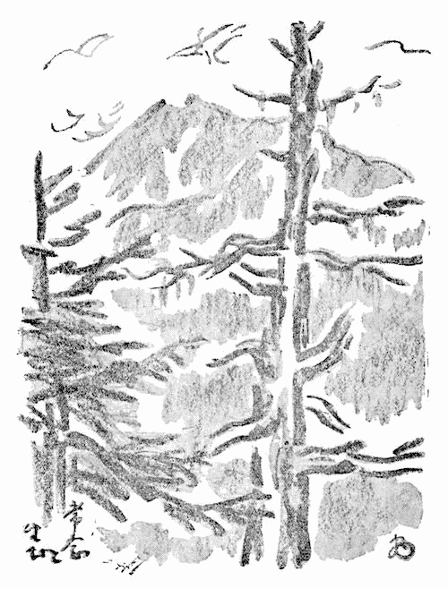
枯木の鋭い感じは、秋冬にふさわしいけれど、また春夏の頃も引き立って見える。それは濃淡の緑と、きわだった対照を作って、浮き出すためであろう。枯木には、天寿をまっとうしたのもあろうし、中には雷火に打たれたのもあり、虫にやられたのもあれば、風に根をいためられたのもある。倒れかかって、仲間にささえられ、風の渡るたびに、奇妙な悲曲をかなでているのもある。倒れて、朽ちて、苔をかぶり、
こうした枯木は、山腹に森林をまとった山には、必ず多少は見られる。南アルプスをはじめ、秩父、八ッ、木曾駒などはもとより、北アルプスでも、御岳、乗鞍、鍋冠、大滝、雪倉、朝日などには稀れでない。そこには、それぞれ、おのが好むところに殉じて、悔いのない、尊い姿が見られる。私は、こうした自然の立ち枯れが大好きだ。そこで私は山で、よく枯木の前に画架を立てる。
ところで、そのため、ゆくりなくも私は、枯枝には美の外に、怪があることを、知るにいたったのである。怪とは何？――枯枝が動くのである。風などのためではない、自分から動くのだ。何を馬鹿な……と言い給うか。嘘や冗談ではない。枯枝がいつともなく、形を変えるのだ。もう――十数年の昔になるが、私は二度までそれを経験したのだ。それで山の雑誌に一文を草して（拙著「山岳渇仰」に収む）、読者の一粲に供したが、待望の教示は終に得られなかった。三度目の経験は、戦争末期のことで、ここで初めて、多少立ち入った観察や、考量を加えることができたのである。
最初の時はまったく驚いた。度胆をぬかれたのである。なにしろ、描きかけの画がウソになったり、そうかと思うと、又本当だったりしたのだから。それは餓鬼岳の頂上に近い処で、白檜の矮樹の間から、鷲羽岳を望むものだった。その近景の白檜の枯枝が、揃って下を向いていたはずなのに、ある日のそれは逆に空を指しているではないか。私はあっけにとられた。どうして描きちがえたと思えよう、下向きの枝が気に入って構図したものを。しかし現実はまさに逆なのだ。首をかしげつつ私は、思いきりわるく描き改めた。ところがどうだろう、その後の一日、くだんの枝どもは、又ちゃんと、初めのような下向きに戻っていようとは。ここで初めて私は、「枯枝が動く」――という事実に眼を開いたわけである。これはまったくの枯木ではなく、老樹が谷に向って差し出した、幾条かの枝が、ほとんど葉をふるった枯枝となっているものだった。
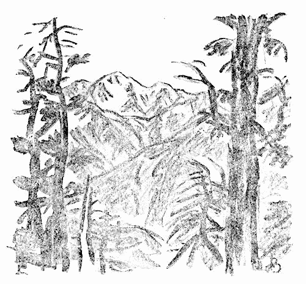
その数年後、私は白馬裏の
そして三度目が来た。終戦前年の夏の針木峠である。今度は偃松で、前の白檜がやや距離をおいての場合と異なり、すぐ眼前の出来事だった。蓮華の尾根に、巨岩を負って、大蛇のように
第一日は好天気で、その枯枝は皆、指を曲げたように下を向いて屈んでいた。第二日は、前日にまさる快晴で、枯枝どもはさらに一そう屈んだようだ。ところが第三日になると、夜来の雨は暁方に及んで大降りとなり、ついで大霧をまき起した。そして立山の方から、黒部谷を渡って、夕立が再三おそいきたった。私はその合間を見ては、仕事を進めたが、枯枝は俄然、見ちがえるばかり動勢を変えて、みな上向きになり、とくに尖端を空ざまに反転しているのである。眼をみはった私は、前年再度の白檜の例が胸によみがえって、さらに感を新たにし、かつ深めたのであった。そして翌日も同様な日がつづき、しとどにぬれた老松は、枯枝も葉を持つ古幹も、枝の組み合わせを
天候の変化にともなって、眼前に演ぜられる、これら枯枝の動勢の変転に見入っていると、今さらのごとく私は、不思議な思いに打たれると共に、多少合点の行くような気もして来た。前から考えていた以上に、空中地上の湿気、水分が、この枯枝の動きの、おもな原因として働いているようだ。たしかに、物は乾けば縮み、
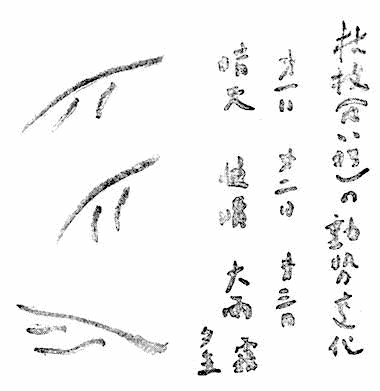
新しい枯枝は、まだ赤い枯葉をつけているものだが、この偃松の枯枝には、それも無かった。それでいて、あのいちじるしい動きを示したのだ。私は、偃松や白檜という植物が、この地上の限界に好んですみ、饑渇にたえてひたすら天日にあこがれる、その執心の深さが思いやられてならぬのだ。枯枝の動きも、そのあらわれと見れば、はかない擬勢とはいえ、私は、その生命力の強さ深さに、敬いと憐みとおそれを、つくづく感ぜずにはいられない気がする。それにしても、この動く枯枝は、老いたりとはいえ、まだ根が働いて、立派に生きている木の一部であることが条件で、これがまったくの枯木になってしまえば、もうこうした眼に立つ動きはなく、単に物理現象だけになるのではないか。つまりこの動きは、あくまで、「生」の現象――あるいはその影――と思われるのである。
白檜の動きは（とくに白馬の場合）見たところ、手指を屈めたまま、腕を
（昭和二十七年三月）――「国立公園）［＃「「国立公園）」はママ］
〔追記〕――その後三十一年夏に、四度目の経験をした。樹はやはり白檜で、場所は三俣蓮華と鷲羽岳との鞍部。三俣小屋から黒部源流にくだる道を、三百メートルばかり行くと、左手の小高い山坡の偃松の中に、三メートルほどの白檜がある。向うは雲ノ平が残雪をおびて横たわる。それと交叉する白檜の梢に、一とむらの枯枝があって、それが動くのである。すなわち天気のいい時は、下に垂れ、霧や雨の日は、水平に近く東方へなびき揚るのだ。これもやはり生きた木のうら枯れ。
［＃改ページ］雪山と廃道
（所ノ沢ごもり）剥げちょろけの熊の皮に寝ころがっていると、天井の一角にあたって重い足音がひびく。やはり昔の雨畑の山村だ、その辺に細い石だらけの村道があるのだ。ここも宿屋という感じのない山家である。
初冬の好日つづきに、南アルプスの大岳が新雪に輝く姿を想望すると、身ぶるいをとどめ得ず、画作の材料も旅装も手軽に、とりあえず出てきたが、昨日（十一月十八日）の甲府盆地のめざましさ。裾山は春のようにかすみながら、天は深々と澄んで、その間に富士は申さず、白峯三山、悪沢、赤石、聖などの尖頭が、あざやかに白光を放っていた。八ガ岳や駒、地蔵などにくらべて一段と雪が厚く、しかも岩壁が突出して、眼に痛いほどの強さだ。
早川べりの馬車は、落葉の嵐に降り埋められそうに、たどたどしく走った。大島からは、大きな暈を帯びた十二日の月を頼って歩いた。みちみち、コンクリートの橋や電燈の光に、断ち切られかけた思い出の糸も、高空に暮れ残った笊、千挺木のほの白いカレと、谷底に夜光を放つ大蛇のように爬行する雨畑川を望んで、その昔にスルリとつながった。
今朝は雲行き早く、小雨を落したのに大事をとり、西沢峠へ飛ぶ心をじっと抑えて、この「石の村」の一日を楽しんだが、製板所が出来、二、三軒新しい家も増え、大分人の動きも見られるものの、二十余年前の廃屋もそのまま立っており、
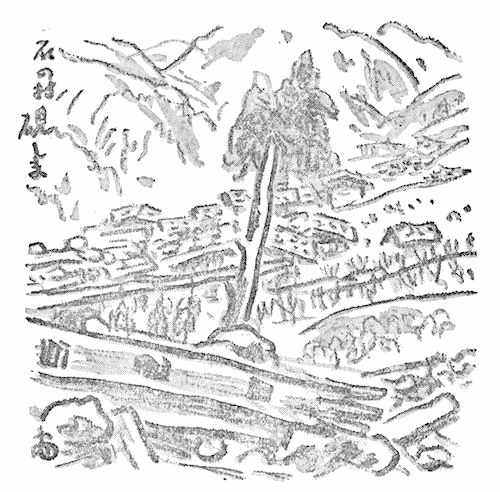
谷間の天がようやく冷たい流れのように明けても、高い七面山の裏山は、容易に夜気を拭い去らぬ。宿で頼んでくれた、骨組の岩丈な中年の山男に荷を託して出かける。村を横に、すぐ急な登りになり、荷が重いのでたびたび「一本立て」る。この千挺木の山脚をめぐる道は、落葉に埋もれはてて、足元から寂しい音がわき起る。露霜に磨かれた千枚岩が、あるいは蒼、あるいは藍に底冴え、そこらに散り残った紅葉は、血なまぐさいばかり鮮かだ。細野の部落が落木の間から見おろされる。すべてで三軒の家が馬蹄状の半島の背によりそい、周りは丹念に耕やされた石の畑に、青菜が調子はずれに
赤ガレ峠の山鼻を廻ると、稲又谷の領分に入る。稲又の四軒の人家、高い尾根に絶え入りそうな炭焼の煙など、裸の梢越しに見え隠れする。黒カレの薄黒い岩崩れが、山骨を剥き出す所を横切る。しかしこの辺は人が最近通るとみえ、踏跡はハッキリしている。尾根を廻った亀井滝の上に、伐採の小屋があって、土間に大きな榾火がいぶり、天井にむささびの皮などつるしてある。沢べりに大鋸を控えて、眼鏡をかけた老爺が
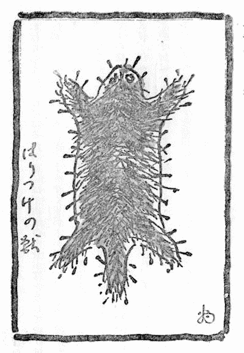
これから先きは、人の用が無くなるので、果して道は急に悪くなり、片はしから自然に帰ろうとしている。丸木橋も
橘平から望月沢のあたり、ようやく
 徊して面白がる心と、交みにせめぎ合う。
徊して面白がる心と、交みにせめぎ合う。葉を振るった落葉松の梢越しに、西沢峠つづき、虎杖ガレ、青カレ、やしほノ大カレなどの山々が、早くも暮色をただよわせつつ、近く高く連亘する。ガレに凍りついた新雪には、匕首をひらめかす感触がある。こうしてようやくフトーの尾根を越えたが、道は終にまったくカレに押落されて行くべくもない。四辺はようやく暮れまさって、西沢の水声が襲うように高鳴りする。そこで急な崖を河原に下って、乱石と流木の堆積を、凍りかけた水を浴びつつ登る。幸い西沢の小屋は遠くなかった。ふと焚火の匂いが感じられた、それで私は――これは人がいるぞ、と言うと、山男は――そんな事があらすか、と否定したが、やがて犬がけたたましく吠え出した。崖ぷちの大岩の蔭によった小屋には、果して人がいた。それも四人の男たちが、広い板敷に火を囲んで、寝ころがっていた。彼らは私たちが来たのを意外としたらしく、馳走顔にアセチレンのかんてらをあかあかと点もして、愛想よく席を明けてくれる。今まで酒でものんでいたらしく赤い顔を向けて、――あんた方が来たので心丈夫になった、などと、すこし似あわしからぬ挨拶をする。なんでも笊の奥沢から越えてきた、
この道はもともと、製紙材料を伐り出すため事業家のひらいたもので、今は用が無くなったので捨てられて、廃滅にひんしている。そこへこの九月の暴風雨で、その運命を促進されたものだ。数年ならずしてまったく通行できなくなるにちがいない。古い木樵り道は上の千挺木の尾根にあるが、この方も木が茂って、もはや荷を持っては通れぬ……云々といった彼らの話が私の耳に残った。猟師は別に獲物も無かったらしく、月が出たら森へ行ってむささびをぶってくれる――などと言って、しきりに銕砲をひねくり廻している。むささびは夜行性で、木から木へとび移る所を射ち落すのだという。しかし背すじに迫る寒さにたじろいだか、口ほどにもなく火にかじりついて、夜がふけても出かけるけはいはなく、ひそかにむささびの肩を持っていた私を
狭い谷奥の空を、凍りついたような十四日の円月が渡る。仰ぐ森林は蔭深く、河原は霜を浮べて月光に照っている。思わず身ぶるいが出た。
鋭い星光に、遅々たる夜明けを待ちかねてしたくする。里へ下るとかいう山師たちはまだモゾモゾしている。すぐ密林のひた上りだ。ところどころ凍りついた新雪を踏み、私は先きに立ってひとり木の間を辿って行くと、静寂が重厚に、一種の圧力をもって身をつつむ。とある小沢に、聞きつけた水をすすり、凍った岩根に腰をおろして休む。あたりは唐檜、姫子松、栂、樅、白檜の類が繁り、倒木は両岸から栗鼠の渡る橋をかけ、小沢はそのまま氷の階段になって、その下を水は音を忍ばせて流れ落ちる。硝子の瓶のような氷のふくらみの裏を、水泡が
つずら折りを重ねて、木が
凍った新雪の固さを足の裏に感じつつ、ヘシ折れた大木が道標のように突っ立つ頂上に出ると……ああ、強い寒風の真只中に、朝日に映える巨大な雪山が、屋の棟形に肩を張って、深碧の虚空をきりさいて立つ――聖岳だ。思わず額を伏せて拝まずにはおられない。つづいて北に、赤石岳の一角も光を放つ。熱い眼をしばたたいて、尾根を南に、その全容を求める。一気に透きとおったような身体を風かげに運ぶと、東方木の間に、白衣の富士が浮んで在す。大沢を正面に、白山岳と劔ガ峯から、左右に大裾をひき放った、最も斉整、端厳の相だ。中天を鱗雲が、非常な速さで南から北へ過ぎて行く。聖は膨大な肩を正面にそびやかして、南面には
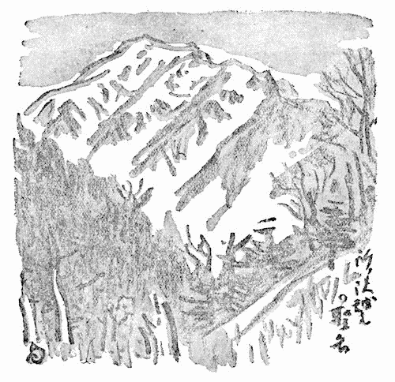
外套のボタンをしっかりしめて、目当ての
暮れる前に付近を歩き廻る。
七時頃、満月が峠の方の尾根に昇る。光芒が鋭い銀線の束をらんらんと射出する。赤石は昼間とちがって、空の底に恐ろしく低くうずくまり、圏谷をもつ北沢の雪がクッキリと照り映える。あたりは霜に
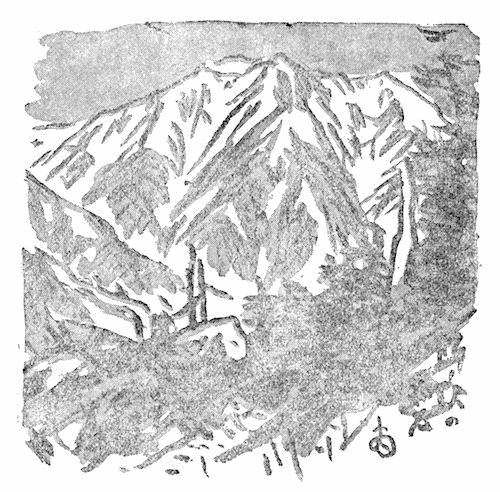
四時半頃には仮寝の床を捨てて、火を盛んにする。北斗が千挺木の方、狭い谷の空いっぱいに横たわる。風はようやく落ちたらしい。赤石は、光沢のない雪がほの白くよどんでいる。残星容易に薄れず、氷に囲まれた小潭で顔を洗う。六時すぎ、窓からうかがう赤石に、見る見る蒼味がとれて、ほんのり紅梅色が匂い出す。空は陰りを拭って、浅葱色が冴えてくる。霜が岩石にも、離々たる枯草にも、厚く置き、満山の落木の梢は、樹氷の化粧がきらびやかにほどこされている。
痛いまでにすがすがしい朝の景物に囲まれて、心が新しい弾力をおびる。七時頃には仕事の位置に出かける。道は固く凍てついてすべる。風まったくやみ、空色寒藍に澄んで、まだほとんど陽をうけぬ所ノ沢の空高く、赤石の大岳が雪を輝かせて、堅くどっしりと坐っている。赤石沢の奥、百間平から、長い尾根を絶頂の南角まで引き上げ、少し力を
左手には聖の東角も、近い尾根から片鱗をひらめかしている。日はようやく、大井川のこちら側にも射してくる。中ノ宿の尾根まず覚め、千挺木のつづきも、木立の梢から光りを吸いはじめる。しかし所ノ沢のここが日光に浴するのは、十時を過ぎてだ。峠つづきの、思いの外な南寄りから日が昇ると、凍りかけた血が、湯に浸ったように心地よく勢いづく。しみじみとありがたい。その頃赤石は、真向からの陽を射返して、眼がくらむようで、ほとんど見詰められなくなる。空も碧藍が、北へ次第上りに濃度を増して、暗いまでに深くなり、その極、灰紫の眩色をさえ発するにいたる。
昼近く、南に廻った日を斜めにうけて、赤石は尾根も谷も、寒い片影をおびてくる。そしてそれがだんだんひろがるにつれ、山体の凹凸は彫刻的に浮き沈みする。同時に、見えない大井川は、ようやく煙霞を漂わせはじめる。昼過ぎる頃は山体がますます、光と陰の大塊に分裂するとともに、煙霞はいよいよ濃密となり、山はおのずと中空に浮び上る感がする。
と、三時頃には日は既に、中ノ宿の尾根から聖の背後に隠れて、所ノ沢は再び冷たい陰の世界に帰り、空は
加速度の夕闇が四辺を閉ざす頃は、小屋に帰って、膝や顔を焦がしそうに、火と首引きする。そして物珍らしく山男に話しかける。彼も活発に応じる。口の重い男とはいえ、一日中数えるほどしか口をきかなかったあとだから……。
今宵も十六夜の月けざやか。赤石は早朝よりもさらに小さく
風は夜ふけから漸次激しくなった。眛爽、西南の尾根にさやぐ落木の木末の網目から、鋭い月光が風とともに射るように飛んでくる。そして超快晴の日が明ける。しかも
午後になって風はようやく凪いだ。しかし終日一片の雲も出なかった。赤石は恐ろしく近く見えた。冷厳な線と面とが、風を截って交錯する。夜は寒さがひどかった。電柱のようなのを何本も引寄せて、こぐちから燃やすなんぞ、なんたるぜいたくだろう。しかも枯木は思いの外にでが無い。小さくて持ちのいいのは、栂の瘤々の
四時すぎに起きると、まだ皎々たる月光の世界だ。急には明けそうな気色もない。火にかじりついて、時々祈るように小窓から赤石をうかがう。そのうち、今朝もさやかに雪が映えて、ことに風も無い好日となる。陽を含んだ山が、顔をほ照らす。残月が赤石沢の奥に徘徊する。
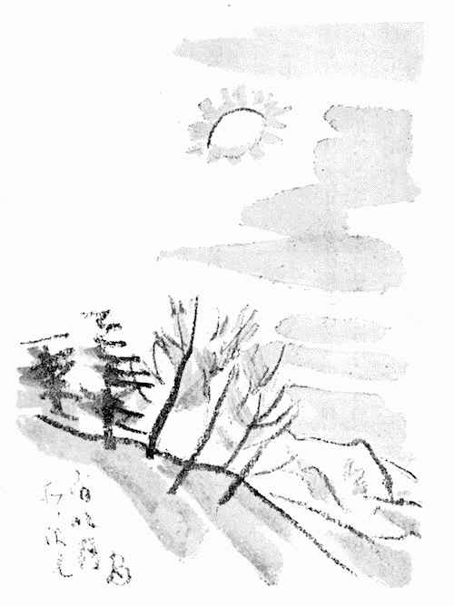
一所懸命、画架に向っていると、ふと呟くような声とさやめきが起る。四十雀が一羽、恐れ気もなく傍までやってきて、丸々と肥った胸を張り、首をかしげては、又せわしなく、その辺を飛び廻っている。一緒にいい日和りを祝わうよ……頭をなでたい気持ちだ。時にはギァーと、ガッチ（かけす）も声をかけてくる。
しかし午頃から、刷いたような巻雲が、中天を南から北へ去来し、赤石は大井川の吐く横雲を帯び、空色ようやく冴えを失って、赤石沢の奥から雲の大塊が山の半面に掩いかかった時には、いよいよ天気も崩れるのではないか、と胸を騒がせたけれど、雲はそのまま
夜の空は清く晴れ、月の出が遅くなったので、星の光りが飛び出すように強い。大きな織女は見上げる前山の梢の中から、刺すように冷たい青光を放ち、千挺木の尾の上高くカシオペアが屈曲し、カペラらしい大星は徐々に山の端から生まれて、光を弾き出すように震えながら昇ってくる。そして峠の上には、
夜半ふと眼をさますと、屋根板のやぶれから月光が、堅い金属の棒や板のさまに射しこんでいた。
未明に起き出ると、今日もまた月光がみなぎっている。そして仰いでハッとした。三分ほど欠けた、たしか十九日の月が、まるで大きな眼のようなのだ。その強い眼光に見据えられて、私は弱い涙の眼をしばたたく。しかしこの巨大な一眼も、なぜか少しうるんでいるようにも思われた。
朝は晴れたが霜うすく、地は珍らしく柔かだった。「今日はやわらぎだ」と山男は喜んでいる。昼近く太陽は幾度か浮雲におおわれる。これは山男の語では「日もどり」であった。日輪が隠れて、もとへ戻ったように思われる――といった風な意味らしい。赤石は全容を現わしているが、空の藍はようやく一抹の灰濁をおびはじめ、明らかに天気は昏迷の徴を呈してきた。山男は、米が明日までぐらいになった……と報告する。もうこれまでかなァ――と嘆息がもれる。
昼すぎ、峠へ聖の姿を求めて登る。空はもうまったく灰鼠の一色になって、雪は輝きを失い、谷はかえって寒冷のさ蒼い気を、はなやかに噴いている。大きな枝だらけの倒木に馬乗りになって、聖を仰ぎつつ暫し渋る筆をとりつづけたが、一刻、雪の峯角に冷たい利刃のような閃めきが明滅するや、南の空が怪しい温か味を潮したかと見る間に、いつもより早く、重い夕暮がのしかかる。
夜も珍らしく曇って、もう赤石の姿も拝めない。山男が「朝の日もどり」は天気の変る前触れだと言ったのが当ったか。夜半から雪になったらしい。
早朝の四辺は、サラサラの粉雪が二寸くらい積っていた。いよいよ帰ることに定めて、急いでしたくする。数日の参籠を果さしてくれた小屋に別れを告げる頃は、雪は四、五寸になり、大粒に変った雪片を受けて白檜の若木が、重そうに枝を垂れているのも心をひく。漠々たる雪空の、赤石と思われるあたりをはじめ、四方の山々にも頭をさげて、はかない筆の跡を留めた画布を背に、気もそぞろに峠を上り下ったが、いつも山を去る時の、感謝と共に深い恨を残すこの心持ちほど、耐え難いものはない。
しかし食料のつきたのも、まして天気の変ったのを、恨むべきようはない。恨むべきは、おのれに、山の聖像を描き奉る力の足りないのをこそだ。そしていつもながら、この数日、貴いものを惜しげもなく示現してくれた、見えざる天地の霊に鳴謝し、報恩を期する熱い涙は、吹きつける雪をとかすかと……。
峠は下りの半ばから雨であった。落葉は数日の間にさらに厚味を加え、雨畑川の源頭御厩谷あたりから七面山へかけて、雲が幾重にも山を浮べ、時に岩崩れの響きに耳をそばだてながらも、空山に
（昭和九年極月半ば西風をきつつ、阿佐ヶ谷にて）
――「山」二巻二号――
〔小引〕――偃松は、好んでわが国高山の峯頭に生育する、松科の常緑樹で、針状の五葉をかざし、初夏の候、単性花を雌雄同株に開き、毬果を結ぶ。風雪の威力の下、鱗甲のある枝幹を四方にのべて、地上に偃臥する特性を持つ。その剛健で清高の風姿は、よく岩石と調和して、高山特有の風趣を形ち造る。
昨日からの事を考えると、ほんとうに妙な気がする。俺にとって、これはおそらく、終生忘れられない思い出となることだろう。
そうだ――薄霧が湧きあがっては、静かに峯の方へと流れてゆく、昨日の午さがりのことだった。ふだん耳なれている、せせらぎの音や小鳥の声にまじって、ふと何か、こう、異様な物の気配がする……と思う間もなく、下も手の岩蔭から、ぬっと現われたのが――珍らしくも、人間の姿だ。とっさに俺はブルッと身震いした。時折り俺たちをいたぶりに来る、あの焚木拾いか、それとも盆栽採りか――思わずそんな気がしたので……。
ところが幸い、そうではなかった。その男は、向うの岩から身を乗り出したまま、眼をまるくして、俺の方をヂーッと見つめたり、しげしげあたりを見廻したりしていたが、やがて、うれしくてたまらぬといった風に顔をほころばせ、何か小声でつぶやきながら、しきりとうなづく様子など、どうやらこちらに向って、親しみ深い挨拶でも送っているように、思われるではないか。おや？……俺はちょっとまごつき気味で、そこらを見やったけれど、別だん
帽子をぬいだ彼の頭は半白で、やせ形の、邪気のなさそうな老人なのだ。もっとも俺にくらべたら、
この俺はと言えば、大きな花崗岩によりかかって、骨ばった身を宙にささえ、頭の上に広やかな雪田を負っている、一箇の年老いた偃松にすぎないのだ。この雪田は、土地の人間が「万年雪」とよぶもので、断崖の根にそって半月形をなし、秋も間近い今では、さりげない残雪に見えるけれど、春先きなどは、そのあたりこそ、恐るべき雪崩を起す源にほかならない。俺が今日まで、ここでどうにか暮してこられたのは、一つは、お隣りの大岩さんのお蔭と言ってもいい。
こうした俺のささやかな存在が、かりにも人間の心を動かそうなどとは、ついぞ思っても見なかった。――まったく長生きはしたいものだナ。とはいえ、俺はどうにも、
俺は周囲の岩さんたちや、向うの年若な偃松仲間や、美しい黄花石南花の連中と、たがいに顔を見合わせた。誰にしろ、無論こうした事は初めてなので、
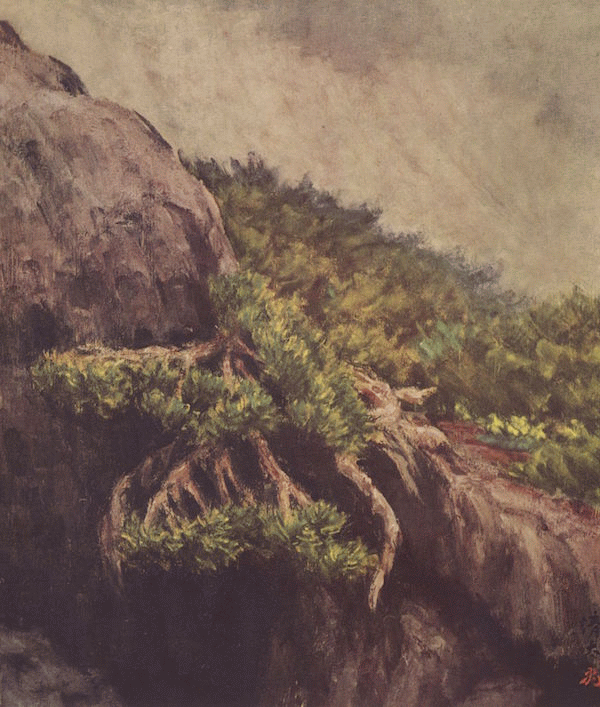
老いたる偃松（木曾駒ガ岳）
画家はそれでも、狭い岩角に踏みとどまって、パレットの雫を払っては、一心に描きつづけていたが、いよいよ降りが強くなってくると、やっとのことで思い切ったらしく、筆をおいて、ぬれた道具を手早くかたづけた。それから今度も、いんぎんに俺たちに会釈して、「どうぞ又明日お願い申します……」と、それも何か俺たちの同意でも求め顔で、いかにもうしろ髪を引かれるといった
俺はホッとして、思わず知らず固くなっていた五体をくつろげつつ、又まわりの仲間を顧みた。そして誰に言うともなく、
「世の中には、物好きな人間もあればあるものだナァ……」
と、さきほど来の感動を、何とかそんな風にでも、もらさずにはおられなかった。しかし俺の胸は異常に波だっていて、さっぱり考えがまとまらない。皆も煙にまかれた形で、幼い児松どもの中には、
「お爺ちゃん、あれもやっぱり人間なの？」
そんな他愛ない、と言って、決して笑ってしまえない、質問をする者もある。
「……ウム？ そうだとも……」
そう答えたものの、俺は又考え込んでしまった。
暮れ方、懇意な目細の若鳥が、遊びすぎたか、宿を借りに舞い込んで来たので、早速この話を持ち出したら、案外にも、彼の方が俺より先きに、あの男を見知っていた。さすがは鳥だけある。彼の話を聞いて見ると、――二、三日前のこと、北の方の森林境を、ひとりノコノコ登って来た老画家は、最初に出会った大きな偃松の前に、いきなりドッカリ坐り込んで、さもさも懐かしげに、何やら「一年ぶりに会えた……」とかどうとか、まるで人間相手のような挨拶をしたり、かと思うと、あのとげとげしい緑の手を取って、やさしく頬ずりしたりしていたのだそうな。
岳かんばの梢から、あっけにとられて、このようすを見ていた目細君が、やっとわれにかえって、例の『ヂェニチュリ、ヂェニチュリ……』の曲をうたいだすと、画家は顔を輝かせて、それに聞きほれていたが、そのうち、葉越しに動く彼の姿が眼に留ったか、双眼鏡でしつこくあとをつけ廻すので、「わたしも何だか薄気味わるくなって、それきり逃げ出してしまったのサ……云々」と言うのだった。
――あの人にちがいない、ありそうな事だ。さきほどの画家の態度を思いあわせて、俺は覚えずほおえみながら、目細君のほの白い眉に相槌を打った。
こうしたいきさつで、俺は大分、人間というものを見直すことができた。――ああよかった、やっぱりそんなに悪い者ばかりではなかったか……。そう考えると、俺は近来にない、ほのぼのとした心嬉しさを、反芻して味わうのだった。
それというのが、この間も、岩雲雀さんの話では、頂上附近の俺たちの仲間が、盆栽とりか何かの手で、幾株となく根こぎにされ、下界へかついで行かれたそうで、中には大怪我をしたままそこらに棄てられて、虫の息になっている無慚な姿も見かけたとか。
それにきれいな花なぞは、毎日のように、むしっては捨てられているらしく、一族の小勢な種類では、そのため
そこへ行くと、ここら辺は、登山路から離れてもいれば、又この通り巨岩の一面に折り重なった急傾斜という、いたって足場の悪い所だけあって、めったに人間は寄りつかない。それでもたまには、山小屋から焚物集めに廻ってきて、無遠慮に俺たちの枯れた手足を、おっぺしおってゆく。幸い、生きている方は、焚くとけむくて困るとかで、あまり手を出したがらないから、いいようなものの……手荒らなのにかかると、大切な根っ子までゆすぶり立てられて、息が止まりそうになるし、少し根元の弱い者や、でなくとも物のはずみで、つい引き抜かれてしまうのさえ珍らしくはないのだ。
七、八年前だったか、一度軍隊がやってきたことがあった。思い出してもゾッとする。山岳戦の訓練とか号して、ところもあろうに、古来の名山たる、この木曾駒ガ岳へ、伝説ならぬ本物の馬を、何匹となく砲車につけて、強引に追い上げ……一と晩この下も手の駒飼ノ池に、野営を張ったものだ。――イヤ洒落や地口にしては、念が入りすぎているし、あくどすぎる。沿道到るところ、まずは前代未聞とも申すべき狼籍ぶりで、その時うけた山の傷跡は、まだ至って生ま生ましい。われわれに対しても、枯枝どころの沙汰ではなく、生きた手足だろうが、胴体だろうが、情け容赦もあらばこそ、手あたり放題ブッタ切って行った。俺などが眼こぼしに預ったのは、どういう風の吹き廻しか、むしろ不思議と言ってよかろう。この時、非業の最期をとげた仲間は数を知らず、その中には、幾百という歳を重ねた、めでたい高齢者もまじっていた。――もっとも人間同士殺し合うというのだから、たかが偃松なんぞ、物の数ではないのかも知れぬが。
しかしこうした乱暴は、大かたみな近年のことで、それも登山が人間界で、流行の形になってからだ。そこへ例の軍国主義で、一般の登山にまで旗を押し立て、ラッパを吹き、人切り庖丁をふり廻す時代が来たのだから、たまらない。近代登山も初期の頃は、少数のまじめな学者や芸術家、趣味人などで、これはさすがに、分別もあれば思いやりもあったし、ましてそれ以前ともなると、ここらまで入って来る人間といえば、まず八、九分通り、信心深い山伏か道者たちだったから、俺たち草木にも鳥獣にも、めったな危害など加えぬばかりか、山の神の
山麓の農民たちが、
こうした気風も、しかし世の移るにつれて、だんだん影が薄れ、昨今では、この辺に白の行衣姿や鈴の音が、ふっつり絶えてしまったように、あの、山をけがすまいとの敬虔な行儀も、まったく地を払って、その代りには、どうだろう、――塵芥は所嫌わずまき散らすワ、草木は面白半分なぶり殺すワ、雷鳥はひっ捕えるワ、岩石は投げとばすワ……いやはや、戦争はとうに済んだというのに、来るのも来るのも野蛮な山荒しばかりかと、うんざりしてしまい、そぞろ昔恋しく、実は
小鳥さんたちに言わせると、人間界はこのところ、たいそう道義がすたれて、とかく物騒な事ばかり持ちあがっては、始末に困っている様子だから、それでここらまでも、そのとばっちりが及んでくるわけだろう、との事だが……大きにそうかもしれぬ。しかしそんな病気こそ、山へ来れば当然治るはずだと、俺は思うのだが……。
昔の方がよかったと言っても、そこに例外がないわけではなく、この山につきまとう悩みはあった。それがほかならぬ、あの薬草とり、由来木曾の名産とうたわれている「お百草」の原料漁りなのだ。数多い薬草の中でも王様格の駒草などは、名前通り、もとはこの山上を、一面に美しく飾っていたものを、長年にわたる濫獲の結果、今ではただの一株も見あたらぬという、悲痛な歴史をとどめている。薬という用途は善い事にちがいなくても、慾に眼がくらんでしまうと、こんな情ない矛盾にもおちいる羽目になる。
今日では、天然記念物や高山植物の保護をはかるお
ただしここで、誤解をしないように願いたい、というのは、学術上の研究とか、あるいは人助けとかいった、立派な目的のためなら、俺たちは喜んで、身命を捧げる覚悟は持っているつもりだし、又そうした実例も決して稀な事ではない。ただ生物として、天賦の貴い生命を、むざむざ犬死させたくない、種族を絶滅させては申しわけない、というそれだけの話なのだ。
――そう言えば、こんな事もあったナァ。あれは……と、早いもので、もう五十年近くも前になろうが、ある夏、この山裾に近い伊那地方の小学校の一団が、ついこの尾根一つ向うで、折悪しくも暴風雨のため遭難した。それも、あろう事か、あったら三十幾人という双葉の生命が、先生もろとも、一挙に山上の露と消えてしまったのだ。これがまだ登山に関する知識の普及していなかった当時、珍らしい大事件として、世人を驚かしたというのは、さもあろう。そこに、いろいろ不覚の点もあったにせよ、何せ思い外の大時化の中の難行で、頼みの先生方が、大切なマッチまで濡らしてしまい、肝心の火を焚こうにも、何としてもたきつける手段がなく、やむなく無人の破れ小屋で、疲れきった児童たちをかばいつつ、ふるえながら運命の一夜を送った……そのあげくの惨事だった。
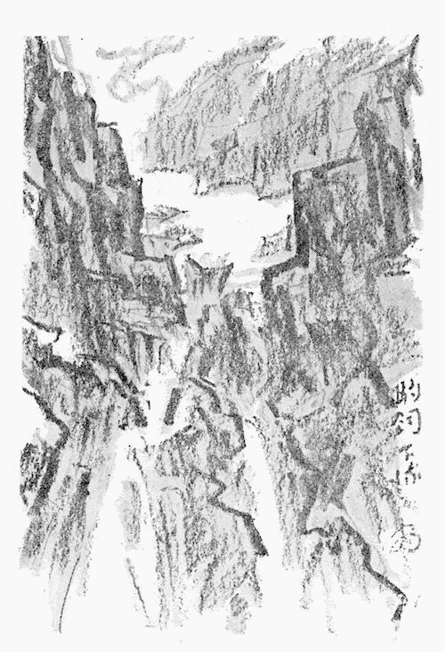
この際、現場のわれらが仲間は、さすが見るに見かねて、進んで総身を灰にしよう、どうにかして彼らを助けてやりたい……と心ばかりは
いつか俺は、それからそれへと、おのがすぎ
まったく、あの頭ごなしに、すごい勢いで滑り落ちてくる「通り魔」には、とてもかなわない。いつも俺たちは、せいぜい
こう言ったら、雪が俺たちにとって、何か仇敵のように聞こえようけれど、待ってくれ、それは少々ちがう。というのは、今は亡き物しりの古松たちの物語りによれば、――昔、昔、その昔、この万年雪の前身が、広大な氷河をなして、地上をうねり廻っていた時分……さよう、恐らくまだこの世に、人間のニの字もあるまいという、いく百万年にも
のみならず、現に雪というものは、長い冬の間じゅう我らを、この三千メートルの高空の寒威から護ってくれる、いわば情けの厚い蒲団でもある。そりゃ重いことは、とても重いけれど、このおかげで俺たちは、生命を保って行けるというものだ。それが証拠に、この蒲団がまだ薄いうちとか、風などでそれが引っぱがされた時の、その寒いことといったら……露出した手足は、いくら不死身に近い俺たちでも、しばしば凍傷を起して、それなりなおらずじまい、夏が来ても葉は赤いまま、はては裸の手ん坊で残る、ということになる。そうして見れば、あの雪崩だとて、一概に敵視などしては、相すまぬわけ合いだろう。とは言うものの、恐ろしいことはやはりまったく恐ろしい。
俺はしかし、何という善い星の下に生れたものか。物心ついた時には、この見あげるような大岩さんたちの、身をよせあった間に、根をおろしていた。北西に峯を負い、南東の陽気をまともにうける、絶好の位置で、俺はのびのびと、大の字になって育って行った。ところが成長するにつれて、前に言った通り、雪崩のおそろしさが、だんだんとわかってきた。それはいつも大抵、南に向いた俺の左脇をかすめて、三度に一度はひどく痛めつけられるのが例なので、俺はしぜん右手の、この大きな立ち岩さんの方へ、身を寄せかけるようになった。それでも左手の、伏せ岩さんの平らな背中が、ホカホカ温かくて、いかにも具合がいいものだから、つい又うかうか、そっちへ手足がのびる……。
するとある年、いやに春雪が深いと思ったら、案の条、いつにない猛烈な雪崩を食って、左半身、肩から腰まで、骨が露出するほど、皮肉を剥ぎとられてしまった。若いから助かったようなものの、これにこりて、以後はもっぱら、右手の立ち岩さんを頼んで、その切っ立ての胴中の方へ、身体を伸ばさせてもらうことになった。
こうすれば、さすがの雪崩魔王も、大岩さんをこづいた拍子に、俺の頭をはね越えて行くので、大へん助かる。そのかわり眼の前は、巨岩と巨岩の狭間が、ガックリ大口を開けているから、いきおい俺の体躯は、半ば以上宙に浮いて……ごらんのごとく、危なっかしい懸垂状態にならざるを得ない。よほどしっかり岩間に根を食いこませ、腰にうんと力をこめて、その上うまくバランスをとって構えていないと、今度は積雪の重圧にヘシ折られるか、吹きあげる烈風にカッさらわれるか、そんな恐れが多分にあり――なかなかもって、傍で見るほど楽ではないのだ。
さっき岩向うの仲間どもが、なにを言うかと思ったら、
「どうだい肖像とは、おうら山吹だナァ」
「なにしろ小父 さんは、齢 に似あわず、様子がいいから……画にも描かれようってものさ、おれたちとはわけがちがうワ」
なんのかんのと、ひやかしおる。「なにしろ
「馬鹿を言え！」
俺はどなってやった。――冗談じゃない……様子なんていいか悪いか知ったことか。俺は何もいずれにしろ、お蔭で俺は、この通り長生きして、今ではこの界隈の仲間で、年
それというのも、まず第一にこの環境が、何といおうと、世にたぐいのない、結構を極めたものだからだろうナ。まことに、わが国高山の指標とまで言われる、われら偃松族の住みかこそは、光明あまねく満ち渡った、青雲の向か伏す
冬の間は俺たちは、スッポリ雪の厚
こうした、俺たちにとって比較的陰気な冬籠りも、例の恐ろしい雪崩の響きをキッカケに、パッと眼もくらみそうな光明世界の幕が開けて、胸をとどろかせながらアタフタしているところへ、今度はあの快活な、旅の小鳥さんたちが、続々と訪ねてきてくれる。俺たちの世界は、いよいよ陽気になる。鶯、めぼそ、萱くぐり、岩燕、岩ひばり……皆な生れついての音楽の妙手で、話好きで、そして何より山好きな、懐かしい親友ぞろいだ。それに去年ここで生れた、あどけない雛が、見ちがえるばかり、いっぱしの若鳥となって、親兄妹と翼を並べて戻ってくるのも嬉しくめでたい。見もしらぬ南国や海洋、さては人間界の消息まで、さまざまの珍らしい土産話は、一と夏かかっても聞きつくせないくらい。面白いばかりか、それは又見聞のせまいわれわれにとっては、たいへんな学問になる。つくづく鳥たちの境涯をうらやましくも思う。
だが俺たちは、あくまで山の子だ。下界に行く気はないし、又行けもせぬが、そうした宿命をかこつ料簡なぞ、さらさら持とうか。たといたまたま、気まぐれな人間の手で、入念に下界へ運ばれ、やたらに、珍らしいの、枝ぶりがいいのとほめそやされ、やれ盆栽だ、庭木だ、それ土目よ、肥料よ、とチヤホヤされても……ただもう眼が廻るやら、
何もぜいたくを言うのではないが、
そればかりか、あれほど旅好きの小鳥さんたちでさえ――ここへ来ると、途端に不思議と気が若やいで、羽色が別もののようにきれいになるかと思えば、自分でもびっくりするほどのいい声が出るし、下界ではどうしても歌いこなせなかった難かしい曲が、苦もなくスラスラ歌える……と言って、喜んだり又怪しんだりもしている位だ。しかも余りに楽しそうな彼らをうらやむわれわれ仲間があると、
「そりァこんなのん気そうなわたしらだって、なかなかこれで……人間のいたずらこそ里ほどではないにしろ、同類でいながら鷹や鷲のような猛禽どもには、空から睨まれ通し、おこじょなんていう悪 賢こい四ッ足小僧には、大切な愛の巣までつけねらわれて、うっかり子供の食べ物集めにも行けやしない……まったく油断もスキもなるものかネ、ここでもやっぱり、浮世の苦労は絶えやしないよ。
けれど、それも先 様が生命の糧とあれば、どうするわけにも行かないどころか、考えて見ればわたしら自身、あなた方植物の大切な種を拾ったり、罪もない昆虫まで餌食 にするのだもの、そうそう身勝手な苦情ばっかり、言えた義理ではなかろうよ。まア辛いことはお互さまとしたら……また、これ以上せいせいした住み心地なんて、さてどこへ行ってみようと、この地上では、とてもありっこないと思うね。それがわたしらの故郷なんだよ。［＃「なんだよ。」はママ］
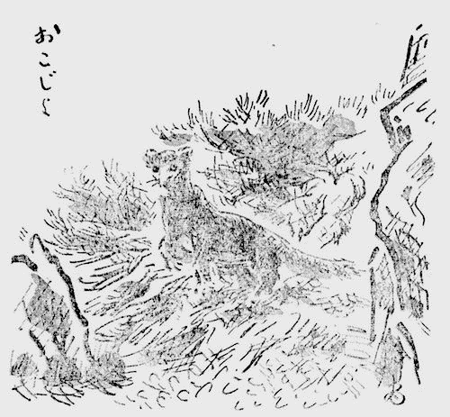けれど、それも
こんな風に、彼らはしみじみ述懐している。これが雲外万里の放浪児で、いたって世間の広い彼らの言い分だけに、事実ここが彼らの本当の故郷だからと言って、よくある、気の狭いお国自慢とは、おのずから
ここでは、四季と言っても、一年の大半は冬の影が濃いのだから、これはずいぶん長いもので、その厳しさと言ったら、ああした山好きの小鳥たちすら、
それに引きかえ、一朝雪崩のドラの音に、われらの甘夢が破られるや否や、春、夏、秋……と四季の女神たちが、それこそ袖をつらね、
残んの雪
俺たちは山の子で、また太陽の子だ。この半季というものは、お日様が雲海の果てから、七彩の光芒に揺らめき昇って、天頂に跨がる長大な黄道を、白熱に燃え輝かせては、又雲海のかなたへ、真赤にくるめき落ちるまで……俺たちは一条でも多く、その瑞々しい陽光の恵みに浴せんものと、手足を精いっぱいに張りひろげる。しかも時には、焼けつくような日光の矢と、キラめく氷雪の
夜も寝るひまなぞろくろくない。いとど短い山上の夏の夜を、いれ代ってお月様が、形を変じつつ、皓々と照り翔ける。まめな惑星が
これら無限の天体が放射する、鋭い光芒や宇宙線の波動は、その本源の永遠性にあやかれとか、一種不可思議の精気を、われらが身うちにも、
同類の小灌木や草本たちも、もちろん大騒ぎだ。雪消おそしと、ういういしい
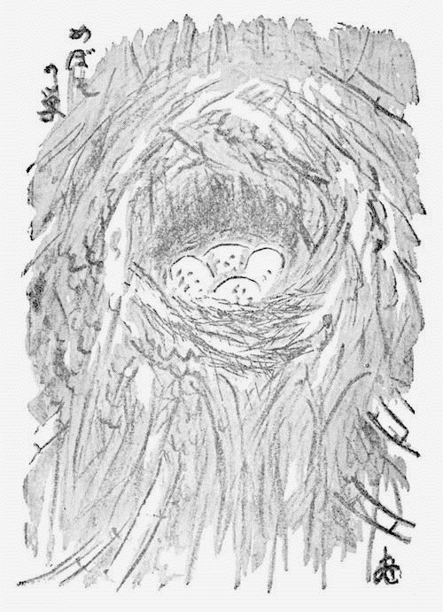
こうした無辺際、無尽蔵の大宇宙に、ずらりととりまかれて、日となく夜となく、その恩沢に浴し、その威徳を仰ぎつつ、明かし暮らすわれらの生活こそは、何と世にも恵まれたものであろうぞ。脚の下の雲のそこいに、どんよりと濁りよどむ人間界とは、はるかに懸絶した、まずはこの世ながらの楽園ともいおうか。俺なども、その片隅に席を与えられた一分子かと思えば、空恐ろしいまでの幸福と尊厳を自覚させられて、あらゆる憂苦もさらりと忘れ去り、ひたすら造物者への感謝の
ところへ、雲の下から、登ってくる人間があるとしたまえ。よくぞこの清浄界を慕い求めて、しばしなりと、われわれの仲間入りをしに来たものよ――と、いとおしさに、よろこんで慶福をわかちあい、いざ共に声を合わせて、讃歌を唱わんものと待ち設けるのも、また当然ではあるまいか。それだのに、その人間ともあろう者が、ややともすると期待を裏ぎって、われらにつらくあたるのみか、せっかくの天恵さえ、
そんな事を思うにつけ、昨日の画かきさんが懐かしくてならぬ。珍らしもの好きの星鴉さんに聞くと、何でも彼は、中ノ岳の小屋に泊っているそうな。――もう見えるかナと今朝は早くから、岩の向うを気にかけて、心待ちする俺だった。去来する霧のひまに、時おり、宝剣岳の尾根が浮び出る。万年雪が、ほうほうと白い息をはく。雨は夜のうちにやんで、一時は青空ものぞいたのだが、やはり今日も、あまりはっきりしない、相変らずの天気模様だ。けれども画家にとっては、この方がかえって、つごうがよいのではないか。昨日の続きだろうから……。
目細君は昨日、うわさ話の末に、
「……して見ると、あれはきっと、珍らしくいい人間にちがいなさそうだネ。ただわたしがちょっと心がかりなのは、ひょっとしたら……気の毒なことに、あの人、少し気が変なのではないかしら……」
なんて、首をかしげていたけれど、――何の、俺はそうは思わぬ。あれが本当だと思う。とは言っても、白状すればこの俺とて、最初はあまり勝手がちがうので、――これは……すこしおかしいかナ？……などと、思わぬでもなかったくらいだ。ましてや、なまじ人間界を、いくらかでもただしかし、せっかく宝の山に入りながら、乱暴を働くなどは論外としても、周囲の意味深い事物にまるで無関心だったり、無関心でないにしてからが、そこに深く心を潜めようとはしないのが一般とすれば、あの男などは、「気が変」だと評されても、まんざら見当ちがいとばかりは言えないかも知れぬ。――それならそれでいいのだ。「変」でいっこうさしつかえない、どころか、いっそ名誉ではないか。なぜといって、常識的な物の見方から一歩も踏み込まないなら、芸術などという深味のある仕事は、できるはずのものでなかろう。誰が何と言おうと、俺はあの男を信じている。
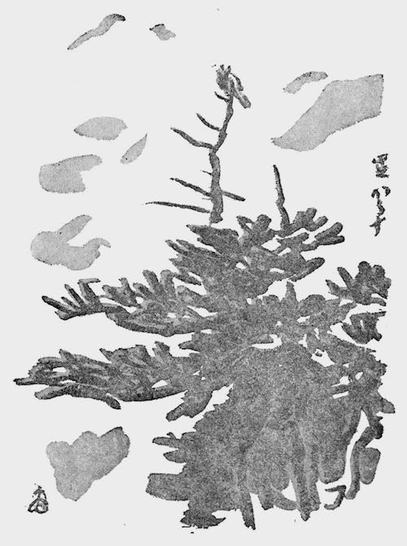
彼に画像を描かれてから、俺は今、一年中でいちばんせわしい時季だというのに、すっかり物思いにとらわれて、松毬の丹精など大切な仕事さえ、とかく手につかず、いつになく古い事まで思い起したり、今まで考えたこともない難かしい問題に思いあぐんだり、知らぬ間に、自分で自分を横から眺めるような心持ちになったり……しているのに、ふと気づいては、驚きもし、またあきれもする始末だ。これではあの目細君に、「お前まで気が変になったのか」ぐらい言われ兼ねまいと、おかしくもなる。――ええままよ、どうせいそがしついでだ。これも生れて初めての、得難い経験というものだろう。
寡聞の俺は、われら偃松が、絵画や文芸の主題になったというのは、まだ聞いたことがない。この山にも文人、画家はずいぶん来ているようだけれど、われら偃松には、たいして心を寄せるでもないらしい。むろんあの老画家は、ああした風だから、きっと方々でわれわれを描いているに相違ないが、今度俺が選ばれたのは、又とない機会だ。俺はできるだけ彼の手助けがして見たい。今に彼がやってきたら、俺の胸の内に湧き上る、この夏雲のような心意気を、ぜひ何とかうまく、彼に伝えたいものだが……。
峯の方から流れてくる、岩雲雀さんの朝の歌の、ひときわ美しい旋律に耳を洗いながら、しきりに俺がそんな事を考えつづけていると……狭霧を分けて、待ちわびた老画家が、昨日にも増して元気な姿を見せた。今さらのように俺は、胸のときめきをとどめ得ない。彼も息をはずませ、心地よげに頬を紅潮させつつ、例の如く帽子をぬいで、われわれに親密な挨拶をする。そして見るから張りのある物腰で、さっそく仕事の用意にかかった。しかも筆を染める前に、キッとした眼なざしで、穴の明くほど俺の方を見すえ、それを自分の画に移し、又こちらに向け……幾度かそんな事をくり返しては、ひとりうなずいている。
俺は俺で、自分の胸中を彼に通わせようと、かねて心は砕きながら、いざとなると、依然として自分が、思う存分、身を動かすこともならねば、また人間によく解るよう、口をきくこともかなわぬ……もどかしさに、ただヤキモキ気を
こんな
そして時には、会心らしい笑みをもらし、時には眉間にむづかしげなたて皺を刻み、何か
ともあれ彼の心眼が、どれほどずつか俺の胸の奥を照らし出して、それを理解し、表現しようと、懸命に骨折っているということは、俺にもよくわかる気がした。また実際、時々チラと
これは昨日来、俺の心ひそかに願っていた通り、と言ってもいいはずであるのに、同時に俺は、初めて自分の姿を鏡に映して見せられた――というより、何かしらんそれ以上の、一種の驚きに打たれてしまったのは事実だ。
「フーム……あれが、この俺なのか？」
思わず俺は、うなるように独りごちていた――
「なるほど、美しいといえば、美しいものだナァ！……え、何だと？ 誰だ、（それ見ろ）なんて言ったのは？……これはうぬぼれなんかとは、わけが違うぞ！ 俺のおいぼれ姿が、よく描けたものよ、と感心しているところだ。イヤまったく美しい！――では、やっぱり同じことかナ？ ハハハハ……」
何にしても、彼が相当に俺の境涯を読み取ってくれた、と信じられるのは、実に大きな感激であり、それが当然だと思う一方、又大そう不思議な事のようにも、考えられる。彼はなお、俺や俺の周囲を通して、背後の、見えない大きな力を、もっとしっかり捉まえようと、気を励ましているらしい。そこが最も大事で、また最もむづかしいところなのだろう。彼の感動と苦吟が、脈々と俺に伝わって来るのを感じて、俺はすっかり興奮に包まれてしまった。思えば彼の方でも、確かに初めから、一種の電波を発していたに相違ない。人間同士にしても、おそらく単に五感だけで、交渉し合っている訳ではなかろう。今では彼が、俺の「言葉」を、かなりよく解していることは、疑う余地がない。もはや俺は、自分の口不調法なんか、まるで苦にならない。俺は何だか世の中が、一段広くなったような気がして、愉快で愉快でたまらなくなった……。
こうしている間に、時は飛ぶように経っていった。上層の山霧は、ようやく濃く昏く、づっしりと圧力を増して、この頃の天気ぐせで、あやにくや、今日もまた雨になった。好
荷をまとめ終った彼は、俺にも、四辺の風物にも、又雨を降らす天空にまで、いちいち丁重に頭をさげて、しばらくは眼を閉じたまま、物を念ずる態であった。これはまさしく、深い感謝をあらわし、また訣別を告げ、かつは後会を期する意味のものと解されたが、同時に彼の睫毛に、怪しく光るものが宿った――と見たのは、果して俺の気のせいか、ただしは、霧雨のしずくだったか……。
もとより俺もまた、万感をこめて、満身の露をはふり落しつつ、これにこたえた。そのくせ、おかしなことに、ぬれそぼった画家のうしろ影が、重そうな足どりで、煙雨に消されてゆくのを見送っているうち、いつの間にやら、まるきりぼんやりしてしまったらしい俺は……どのくらいたってからか、急に、うそ寒いような、一種の寂寥感に襲われて、ハッとわれに帰った。かつて覚えのない、さびしさだった。
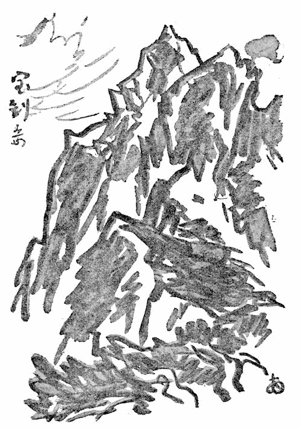
――彼こそ俺の知己……それも新らしい、そして最大の知己ではなかったか。そんな考えが、つづいて俺の胸にひらめいた。俺はまだ彼と語りあいたい事が、山ほどあった、という気がしきりとつのって、何か美しい夢を、半途で見はぐったような悔いに責められた。彼が俺を解し得たほどに、俺は未だ彼を解し得たとは思われぬ。残念だが、そこは能力のちがいで、是非もない。それにしても、さだめし彼には、貴い経験や人に知れない辛苦も、数々あることだろうに……。さっきの画家の背ろ姿が、まざまざと眼によみがえる。それが又、たまらくなく淋しげに見えるのだ。何だかそれは、――彼も人間界では、ここにいるほど、仕合わせではない、と打ち明けてでもいるかのように。（――しまった、俺は……）、しかしその時、
「何と思っても、お前は彼の後を追うわけには行くまい。だが今ではお前は、彼の画の中と言わず、彼の温かい血のめぐる胸の奥に、大事にかけて、生かされているはずではないか。その上、よしや遠く雲をへだてようとも、きっとお前は、彼と語り合うことができるのだぞ！」
そういう力強い声が、どこからともなく響いて来るのを覚えて、俺はようやくのこと、気をとりなおした。俺はできるだけ、彼を力づけなければならぬ。そして彼のような殊勝な魂を通して、人間にも広く知己を求めたい――という気持ちになって行った。
いっしょに画に入ったまわりの仲間も、さすがにそれぞれ感動の色を浮べて、何かと語り合っている、その中に、俺のうしろ楯である立岩さんが、持ち前の重い口を、やおら開くと、
「なァ、下がり松さんよ……あんたのお蔭で、今度はこのわしまでが、面目をほどこしましたワイ……」
と、荒ら膚を熱くして言い出したのは、俺の感慨をいっそう大きく揺り立てて、小さい時からの彼の庇護、それを恩にも着せない彼の大度……胸のつまった俺は、かえってはかばかしい返事ができなかったくらいだ。そこへ星鴉さんの報らせで、老画家が尾根道に休んでいるのを、偃松の中の低い白檜の梢から覗いてみると、手帳に何か書きつけては、小声でこう繰り返していたそうな。
偃松の露ゆりこぼす別れかな
俺はあらためて人間の事を考えてみた。人間は俺たちと違って、はるかに複雑で霊妙な生物だけに、なかなか俺なぞには解らぬ節が多く、その上、一口に人間と言っても、千差万別には違いないけれど、概観すれば、彼らは非常に賢くて、真理や美というものを、どこまでも追求してやまぬ、立派な性情を持っていることは確かだろう。元来俺たちは、生物の一種として、それが最高の進化をとげた人類に対しては、強い敬意と信頼を抱いて来たものだし、又ますますそれを強めて行きたいのだ。
特に彼らの知能の働きこそは、まったくめざましい限りで、それは近年よくこの辺にも姿を現わす飛行機を見てもわかることだ。さすが空をわが物顔の
ところで、人間と俺たちとは、万事がいわば月とすっぽんで、何か無縁の存在のように見なされがちだが、果してそんなものだろうか。――実は案外そうでない、と俺は考える。こう言っては、ちと口はばったいきらいもあろうが、人間といい、俺たち草木といい、
彼はどういうものか、われら偃松に、格別の愛着を持っているらしく、俺たちをただ無下に、劣等な生物などと、さげすむような、そんな思いあがった人間とは、およそ訳がちがうことを、俺は直かにこの眼で見てとった。そうかといって、俺がそのためいい気になって、彼に甘えている――などと思ってくれるな。もともと人が思うほど、俺たちは無知でも非情でもないつもりだが、さて彼のように扱われて見ると、いい気どころか、かえって俺は謙虚に陥り、今さらおのれの不敏が省みられ、又憐れまれもする。しかも、こうした彼の心馳せは、何もわれら偃松に限ったことか。この浄界における万象が、ことごとく彼の心に景仰の情を呼び起すものであることも、又彼がそこから、好意の目をもって見守られていることも、今ではだんだん俺にも解ってきている。彼などは、さしずめ昔の道心深い登山者の、形を変えた再来とも思われ、あの小鳥たちではないが、ここを故郷と呼ぶにふさわしい資質を、充分そなえていると言ってよかろう。
われらが知己、山の真名子たる老画伯よ、
賢明な人間たちよ、願わくばこの上ともに精進を重ね、特に善や美の方面も、知力におとらず研磨を加えて、立派にわれわれの期待にこたえてくれ。人類文化の源泉は自然にあり。自然をこの地上に、純粋で豊富に蓄積したのが山だとすれば、これこそ人間にとって、かけがえのない宝庫というものではないか。よくよく心して、山を大切に扱い、その深意に耳を傾けてもらいたいと思う。時代が如何に険しかろうと、あさはかな慾得ずくから、山を傷つけて省みないような民族は、文化を云々する資格などはなく、自滅する外はないであろう。
聡明な登山者よ、どうか俺たちなども、いたずらに
それら自然と人間とが、お互に敬愛の念で結ばれることになったなら、初めてそこに、大きな生命の交流が行われ、それこそ完全な楽園が、この地上の一角に現出して、ひいてはどんなに、自他の幸福と向上をもたらすことであろうか。さもなかったら……ああ、それもこれも、かかって人間の心がけ一つにある。造化の意図も、また恐らくそこに……あッいけない――秋風だ！ 急に身にしみて来たぞ。そうか……俺はほんとうにどうかしている、もう、こんな柄にもない、さかしら口は
〔附記〕――この一篇は、事後その画家が感受した、老偃松の問わず語りを、自らまとめて飜訳したものである。彼は――大きな誤訳はないつもりだが、なかなかうまく訳せないところが多かったし、自分が買いかぶられているようで、気のさす部分もあり、又ふにおちぬ箇所も無いではないが、驚きと感激に包まれている現在、あえてそのままにしておく……と言っている。
なお、私は不思議な縁から、この姉妹作を入手することになったので、偃松の希望にもそうゆえんと考え、この「地域」誌上に公表することにした。ただし画の方は、すでに昨秋日本山岳画協会第十一回展（三越にて）に出陳された。
昭和二十六年春 七葉道人識
戦争のため、登山が思うに任せぬようになり、果ては爆撃で生命さえ危うくなると、かねて、わが胸の奥なる宮居に祀られた、山とその一類の姿が、いや増しに、さまざまの幻となり、夢となって、眼の前にちらめく。都会には珍らしい、薪の煙のしみじみと匂う時、警報が来襲機の針路に当る山の名を叫ぶたび、その幻像は物狂おしいまで、まざまざと。
防空壕に出入りする暇も惜しんで、私は物に憑かれたように、それを書きつけはじめた。過去の旅を反芻していると、老いを感ずる一方、また無限の逸興に駆られて、往時も昨日の如く新らしい。本文もその中の一篇。
防空壕に出入りする暇も惜しんで、私は物に憑かれたように、それを書きつけはじめた。過去の旅を反芻していると、老いを感ずる一方、また無限の逸興に駆られて、往時も昨日の如く新らしい。本文もその中の一篇。
二十畳からあろうというがらん堂、その片隅に私は座を構えていた。宅から持参の小さな
天井はなくて、屋根が穴だらけなら、頭上の破風も、鬼が抜けたか、羽目は吹っ飛んで、居ながら青空や月星を仰げれば、寒風も雨雪も吹込み放題。眼を覚ますと、枕元は粉雪の吹き溜り、という朝もある。世にも風流千万の住みか。ましてや、天晴れて、いったん窓を払おうなら、輝く不二の高根が、天半に鶴翼を張って浮かぼう！ 寒さのみかわ、身振るいを禁じ得ぬ偉観である。直線距離およそ三十粁、中をさえぎる何物とて無く、有るはただ、冴え切った一大空間。覚えず――
たじたじと富士に圧 されつ凍る息
毛無山脈は、御山のしかし、御山の姿は、なかなかしじゅう拝めるというわけにはゆかぬ。私は筆をおいて、拙ない自作を前に、溜息を吐いていることしばしば。もとより、当時私の手に負える題目ならず。富士は年来の宿願として、軽々に手を下せず、ここに大正六年を迎えんとして、ようやくその機が動き、まず川舟で身延へ。そこから表山通りに、この地を訪ねた。あのかつて、笊ガ岳登山の際の、強い印象が縁で。（拙作「冬の白峯山脈彷徨」の中にその記事あり、前著「山岳渇仰」に収む）
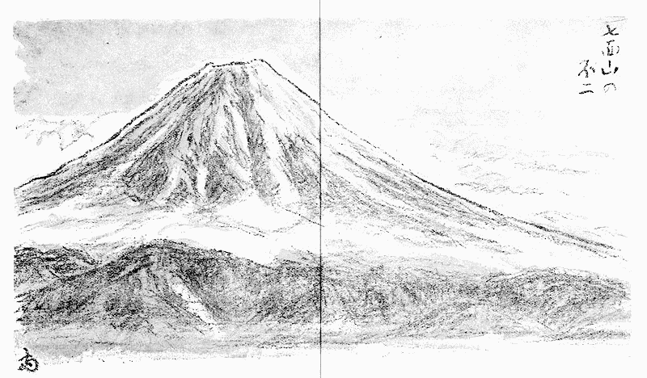
しかもこの大観には、今さらのごとく驚嘆。だが血気にまかせ、成敗は知らず、やれるところまで――と健気にも決意した私。あたかもよし、この景勝の籠り堂が、堂守夫婦きり、冬はたいていがら空きが例、と聞くや、これぞ天の与えと、事情を述べて、借用かたを申し入れる。――本堂さえ承知なら……ただこんな処で、何もおかまいはできぬが……と、いささか意外そうな面もちで、堂守の返答。それ以上何を望もう。私は改めて、本堂へ懇請して、快諾を得、はずむ心に一おう帰宅。いろいろ用意のうえ、正月早々、裏道から、赤沢を経て登山したわけ。
本堂、敬慎院というのは、これより南へ、七、八町ばかり、そこは正月だけに、信徒が身延ごしにちらほら登り、誦経の声、梵鐘の響も絶えぬものから、雪の山路を踏み分けて、ここ奥之院まで詣る殊勝人は、至って稀。あたりは、唐檜、白檜、一位など、落葉樹と共に枝を交えて、そぞろ山深い感がする。白峯山脈の分派、七面山の、その東北角に当り、高距およそ千七百メートル。山鼻に、
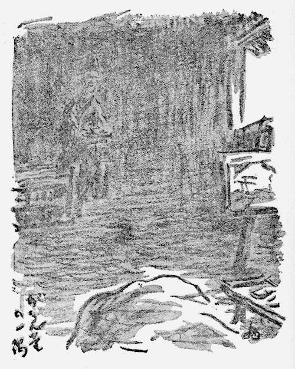
正月半ば頃までは、雪はまだ薄かった。しかし寒気はすこぶる厳しく、例年より暖か目と言われたこの冬も、ここではあらゆる物が、みな凍った。机上の墨やインキはもとより、いま、盆に伏せたばかりの茶碗が、もう取れぬ。湯で顔を洗ってから、階上に戻り、濡らした髪に櫛を入れたら、サラサラと白い粉。おやフケかな――と思えば、何の、髪の水気が雪に化けたので。沢水は、むろん凍結して、懸け樋に水は通わないから、万事氷を溶かして弁じるのだ。したがって、煮炊きにも湯茶にも、しぜん、氷に含まれた草木の葉や実、蘚苔、地衣の類いが煎じ出されて、いやでもそれを服用するわけ。仙骨を養うには、持ってこいの適薬だろう。
晴れたら、思い切って窓をからりと。お山を拝しつつ、私は謹んで筆を執る。ここの富士は、大よそ左右斉整。八字の斜線が、無限を思わす大弧を、冬天へ一気に引き放つ。しかも、正面真一文字に、大沢の大崩壊を曝露し、富士としては優美よりも端巖、むしろ威力に勝り、時に幻怪味さえ帯びる風姿。雪は既に、過半身を飾っているが、岩骨は雪を払ってゴツゴツ裸出し、山肌は荒くかつ堅い。それに斉整とはいえ、右肩剣ガ峯から、遙か東海の雲へ走る、のびのびした弧線は、北角白山岳から本栖湖さして、なだれ落ちる一線にくらべて、やや長大であるから、山体はおのずと、北へ反り気味に、軒昂たる動勢を持するゆえん。
しかも、これは概観のことで、朝暮、陰晴、雲霧、夜色、などによって、さらに季節の推移につれて、その姿態、色相は千変また万化、真に応接にいとまが無い。朝まだき、素焼の瓶子を水中に沈めたような、清らかにおっとりした風情。独り落陽をとどめて、巨大なつま紅蝶の翅を展ばした、華麗な色調。月光に凍る清痩の面影。古墳にまがう星夜の形……。特に、今の今見えていた富士が、忽然と雲の中――蚕の作りかけの繭さながら。あたかも、手品師が、開いた手に
私の画業は当然進まず、似もつかぬ画中の山から眼を
ささめ雪さるのおがせも花や咲く
森の深みは、紫をこめて暗い。屋内は、昼も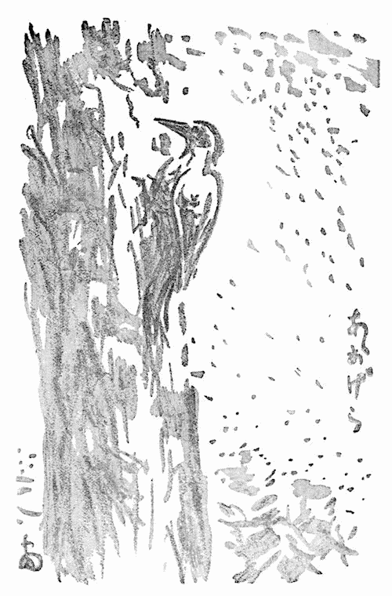
カッ、カッ、カッ……突如、静寂を破って雪の窓外に、戸でも叩く物音。珍らしや、参詣者か、それとも持子衆か、とのぞいて見れば、人にはあらで、大きな
訪なふは啄木 鳥かや雪の破 れ扉
こうした中で、たまに風呂の案内。これはたいした馳走なのだ。裏口から、吹き抜きの長廊下を渡って、湯殿へ。納屋に隣って、小さな小判なりの据風呂に、鉄砲の炭火が赤い。それより、なお暗いほどの、豆ランプが、ぽつり、と一つ。うっかり裸かになって、沸き過ぎていたら、それこそ、事だ。隅の籠に、盛り上げてある、氷の大塊を、抱え込んで、うめるので……。氷は、裏の沢から、ぶっ欠いて運んできたもの。それが尋常の氷でない。栂の実とか、唐檜の葉、枯枝ごとのさるおがせなんど、さまざまに、草入水晶そっくり、美しく透けて見える……。だが、ふるえながら、その融けるのを、待つ間の長さと言ったら。快く浸る肌を、何かこそぐる物があれば、それは氷に閉じられていた草木が、解き放たれて、泳ぎ出したのにちがいない。湯は濁っていても、正にこれ薬湯なり、人間臭くないのが、何より珍重というもの。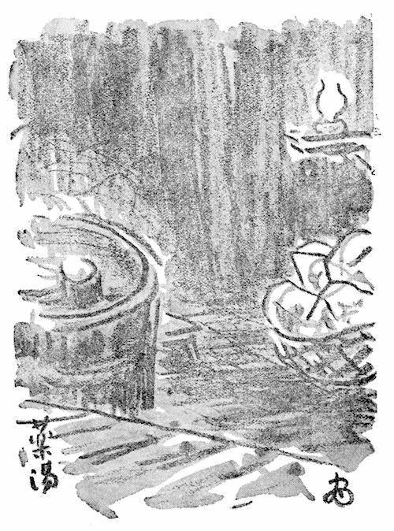
夜となれば、静寂はまた一倍する。しかも、その静寂の奥に、なお声あり！ はるか早川の、早瀬のむせびか、峰々にからむ風の唸りか、はた冴えまさる氷雪のきしり、あるいは樹々の身じろぎ、鳥獣の寝息……いやいやそれよりも、つつましい寒山の静寂、自身のうそぶきとも、ただしは人の心の……何か知らず、鋭い針めいて、しんしん、きんきん、と乱れひらめく、
声やあらぬ雪つむ山の夜半の声
時に、風が持てくる、太皷の遠音。これは狐狸の木の間から読経の声がもれてくると、本堂はほど近い。この声はいい、そして頼もしい。人間の声とも思えぬ、さりとて、自然の声とはちがう。何か別の妙えなる世界の消息、そういった感が深い。本堂は相当の大建築で、客殿や庫裏も手広く、坊さん方は多勢――その中には、麓の身延の方で、何か戒律を破った、その罰として、ここへ追い上げられた者もある、とか。銅金具の光る、広い浴槽には、参籠者があってもなくても、いつも熱い湯がなみなみ。
湯から上れば、座敷の炉ばたに、精進料理の膳が出て、誰か近付きの坊さんと一座で、般若湯を汲み汲み、談笑のうちに、満ち足りた食事をする。奥之院とは、それこそ雲泥万里。ここは、金殿玉楼のもてなしとも言おうか。よく坊さんたちは――あちらはひどいでしょう、今夜はここへお泊り。……朝早く帰れば、お仕事の方にも、さしつかえありますまいが………そう言って、しきりと勧めてくれたものだ。けれど私は、夜が更けようと、大雪になろうと、必ずあのわびしい破れ堂に、戻って行った。そうしないでは、いられなかった。どうも、その方が
夜の富士は、不思議と小さい。月夜はことに低い――というより、遠い。星月夜には、空に吸われて、銀の冠りさえ有りや無しや。心髄ばかりが残った風な。白峰の北岳などは、もう瘠せ細って、蝋燭めく。南天高く、輝く燈台鬼となって、オリオン星座が二王立ち、
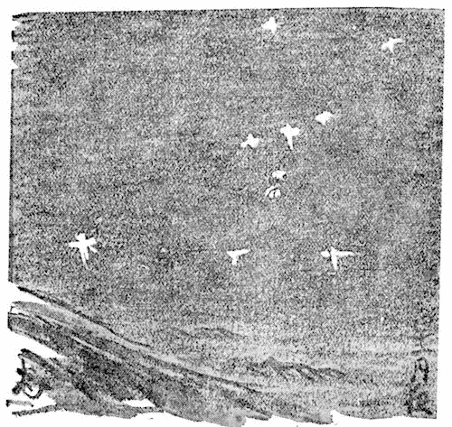
暦の上に春は立っても、この山上には、
雪の中をおりおり、赤沢の持子が、卵や何かの食料、家からの荷物、友達からの手紙、そういった物を、届けてくれる。帰りには又、こちらからの音信など、ことずける。これは大切で、かつ楽しみな使者だ。私はその場で、堂守から、手紙の代筆を頼まれて、苦吟したりもする。卵はすぐ凍ってしまって、ひびが入る。剥けば、貴しや、氷の白ら珠。それを煮ると、白味が焦げついても、黄味のしんはジャリリ、と冷たい歯ごたえ。それが、この頃では、ひびから白味が融けて、あふれ出し、それなりまた凍って、つららになる。これが日毎、くり返えされる。一度、母の心ずくしで、小包の瓶の中は、なんと、好物の「あんこう」とは。凍りついた中味をあたためれば、肝や
二月も末となれば、春の気配はようやく濃い。朝など、どことなく、冬にはなかった、一種、匂いのある空気が、ただよってくる。しっとりした、有機性の薫りだ。小寒く、さわやかで、もの懐かしくもあり、なにかしら愁い心をさえ誘うような……
おのづから香に匂う春の山気かな
やがて、軒端や木末から、点滴が落ちはじめ、四方の山々が、淡すり霞だつ。富士は、寝起きの眼に、急にはそれと、見分けにくいほど、大空と一様に照り輝く。日中となれば、まるで宙に浮かんだ、目も眩むばかりの大光体。夜のお山も、おぼろに明るく、暗い空さえ、もやもやと温か味。だが、そんな後は、また雪だ。それも春らしい牡丹雪。三月に入るや、四面すべて、深い雪に埋もれ果てる。常葉木は、すぼめた傘なりに、さも重たげに枝を垂れ、影嚮石も厚い綿帽子を被ぎ、堂の羽目板まで白いものが斑々。そうした景色を眺めていると……鎧や狩衣や烏帽子など着けた人物が、雪路を踏み分けて、今にもあれ、そこへ、向うの木かげから――それが、まざまざと、眼にちらついてかなわぬ！ 当時の日記は、そう訴えている。夢か、はた
こうして、往来も久しく絶えた、ある夕暮、ただならぬざわめきとともに、――先生！ 何ぞ、腹薬を、持って御座らっしゃらぬか……と、画中の世界から呼び覚まされて、急に我に帰った私の、怪しむ耳へ、堂守のおろおろ声。聞きただせば、――山路で、参詣者に病人が出て、助けを呼びに人が来たのだ、という。意外。パレットを捨てて、持ち合せの売薬など、かきさがし、あり合う湯沸し片手に、使いの人と現場に急ぐ私。深雪を蹴散らして、大島道を四、五町も下ると、木かげに七、八人、うずくまる病人をかこんで。腹痛で動けぬとのこと。それも病人ばかりか、そう話す一同まで、唇の青さ。残念ながら、医者ならぬ私には、鎮痛剤でも与えて見る外に、方がたたぬ。そんな事すら、困惑し切った人々は、拝まんばかりの始末。応待に困じて、私はただ祈る心に、厳そかな白峰赤石の暮色を、打ち仰ぐばかり……幸いなことに、やがて痛みが薄らいだという。みんな愁眉をひらく、私もホッとする。折りよく本堂からも、人がかけつけ、病人は負われて、奥之院へ。その夜の宿坊は、常に似ぬさざめき。この一団は、品川辺の何かきおいの職人衆だったが、馴れぬ雪の山路に、皆ひどく
三月を迎えて、四日の日記は「十日くらいの月さやか。悪沢岳の銀の兜めがけて、大流星、半天をつんざき、異様な血紅色の光輝を、ほとばしらせて落つ。アンドロメダの辺なり。不二鮮かに、頂上の両端し、角張って見ゆ。白峯、秩父はおぼろ。四山すべて、雪に明るし、云々。」とある。それから後が、又吹雪。だがそれがやむと、また好日が続いた。初めて、軒のしずくで立てた、風呂にひたる。さすがに、肌ざわりがやわらかい。氷を抱く荒ら行は果てた。煮炊きも、もう楽だろう。
八日など、いかにも春めいた日で、日記の一節に、「満月どんより。不二はふかぶかと、雲の三蓋笠をいただき、その陰から銀の長髪が乱れる。風起り、雲散ず。早朝に似た効果。ただ嘘のように小さい。」また九日には、「雪降る。しかも陽気はすこぶる温暖。机上に、青磁いろの、尺とり蛾が一羽舞い来り、触角を痛々しく、神経的に顫るわす。」続いて十日には、「春風吹き、雨初めて降る。」と記され、さらに十一日は、「おぼろの月光寒からず。富士黒く、大きさ昼に近し。月に向う輪廓に沿い、空に微光を認む。雪の反射か、月に映ずる雪煙か、乃至は水蒸気か。」などとある。また十四日になると、「深夜の不二もうろう。星一点。ただし空一たいに明るし。そことなく月しろのほのめき。不二、横さまに光背を負える形。下界は一めん、雲の大海原也。」といった情景。
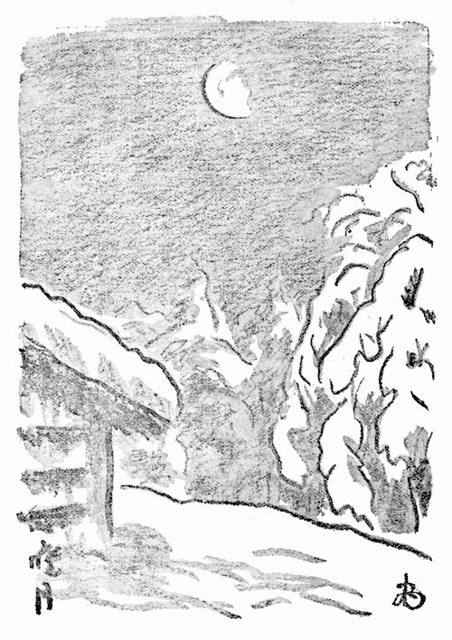
こうして春は、立ち迷う雲烟の衣に、暖かく大地を包み、凍結した
こうなると、降り出す雪も、中途で大てい雨になる。雨は静かに、しかも隈なく大地に浸みとおり、青いものが、日に増し領分を拡げてゆく。小さな羽虫も、軽やかに飛び立つ。山路で、ふと、物の気配に見れば、語らい遊ぶ
一声の初音こだます深雪 不二
始末のつかぬ画面を抱えて私は、季節に追われ、疲れた心身がせめぎ合い、ただおのが力の不足をかこつばかり。物憂い五体を提げ、思い切って私が、この離れ難ない山居に別れを告げたのは、はや四月の初旬。富士をはじめ、四方の山々、破れ宿坊、堂守の老夫婦、本堂の諸知識にも感謝の心をいたし、そぞろ心に下る山路は、一足ずつに春が深く、黄藤の花の陽炎にゆらぐ早川谷は、（昭和二十二年、春。「山小屋」）
［＃改ページ］早いもので、あの黒部本流の初遡行を、木暮理太郎君と試みてから、数えてみると、もう二十年にもなる。思えば心なつかしくもあり、また心苦しくもあるが、もはや細かい事は忘れている。今日思い出の執筆を求められるまでもなく、当時くわしい紀行を「山岳」に書くはずであったが、いろいろな支障で、といっても、主に自分の気が進まなかったのがもとで、そのままになってしまった。しかし幸いにも、木暮君の丹念な手記が、今度の大著、「山の憶い出」におさめられて、世に出ているから、自分の怠慢も少し気が楽になっている。
当時の覚え書きも、どこかの隅に、塵に埋もれているだろうし、紀行として書きかけの原稿もあったはずだが、そんな物を、今探し出す気もしない。とりとめのない、追懐の夢物語の方が、勝手なばかりでなく、むしろ似合わしいようだ。どうもあの頃の山の有様は、今から思うと、まるで夢のような景色なのだ。どこでもその傾きはあるが、黒部などはことにそうである。今でも、ひらけない山の中へ行くと、初めての処なのに、オヤ何だか見たような景色だ、と首をかしげることが往々にあるが、それが昔の山の生きた姿であったりする。
現今、あの白々しい日の照る、宇奈月という町へ電車で着いて、それから又トロッコのような物で運ばれて、それから……冒頭に、心が苦しいと書いたのも、それがあるためだ。大正初年、私が初めて訪れた頃のこの谷は、ひっそりとして人気が薄く、愛本で谷にはいって、内山を抜けると、もう村里はない。桃原という小平地を最後に、峡流らしい威容がそなわってくる。向うには宇奈月谷が、残雪にからむ雲の底から落ち込んで、ヒヤリと緊張のさむ気を神経に伝える。なるほど黒部へ来たナ――とうなずかれるのだが、このささやかな耕地と、作事小屋のポツリとある、桃原つづきの段丘が、後年いわゆる宇奈月の温泉町となったのである。今日、電車でこの町へ送り込まれた人が、眼をこすって、悪雑なペンキ看板の障壁の背後に、黒部谷をうなずこうというのは、まず容易の業ではあるまい。その後数年、あの初遡行をやった、大正八年頃には、桃原の下も手に、愛本温泉というのができていた。上流の二見温泉を引いて来たもので、あたりになじまない、殺風景な、まず一軒屋の体だったが、只向うの見あげるような山腹に屋根が一つ見えるので、あれは何だ、と助七にたずねたら、「あれは太皷をたたく家よ……」と答える。解しかねた私に、彼が笑いながら説明した所によると、それは、「芸者のいる家」という意味らしい。私は唖然とした。あたりを見廻して、それが狐狸の化けたのででもなければ、
これから鐘釣温泉への途上も、長いがまた、いい心持ちの道だった。峡谷の景色が、一足ごとに整ってくる。今あの浅ましいトロッコ電車の上からのぞいて見ると、それでも処々、昔の岨道の残りが、なつかしく眼にうつる。仏石の茶屋のあたり、その最たるものだ。鐘釣温泉も、もはや量も温度も、温泉としての資格を失ったらしい。谷の景色と運命を共にしたのだ。この水力電気という、山の鉄砲虫は、どこまで喰いこんで行くものか。それでなくても、到る所、山の神域は、「下乗」の石が立っていないのをいい事にして、参道から玉垣を越え、神殿までもおかそうとする。まったく大概にしてもらいたい。ものの貴さが解らないくらい、おそろしいことはない。今第一級の国宝になっている偉大な仏像が、維新の当時、道ばたの草むらに捨ててあった話を思い出す。それより、薪にしてしまったのはどうだ。
鐘釣温泉も、かくて昔語りに生きる運命となったか。大正四年、七月から十月小屋じまいまで厄介になった時の、思い出はいよいよ貴い。その前、明治から大正に移る夏、大井川を初めて歩いて、その山と谷に、燃える心身を浸らせたあとで、この黒部の谷は、また大いに自分の心を
黒部のこの特性は、すでに下流からあらわれているが、猿飛から祖母谷出合で、いよいよ本格的になる。祖母谷といえば、今でこそのんきな山道を、悪い道だなぞとつぶやいて上下しているが、もとの谷歩きと来ては、たいへんなもので、大正四年に助七のあとについて、そこから硫黄沢にかけて歩いた時など、大岩壁の中腹をわずかの足がかりを頼りの横へつりに、はるか真下の白い水、青い水がもりあがって来て引込まれるようで、足がすくみ、今でも夢の中で、それにうなされるようなことさえある。おそろしい経験は他にもあるけれど、こんな後でも、身体へ直接感じがよみがえって来る例はない。
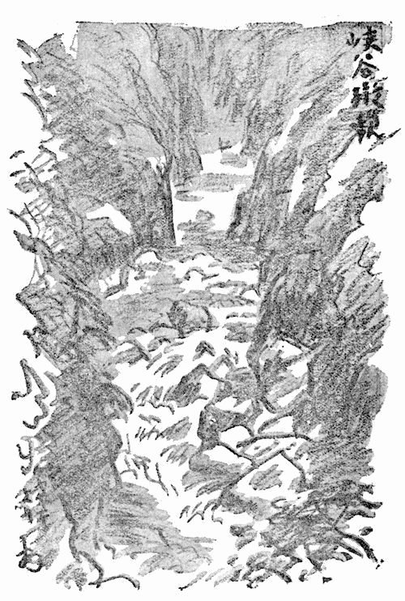
それにくらべると、この本流遡行の時の方が、量はともかく、むしろ楽だった。しかも壮観はやはり本流だった。早くもその第一日、欅平の巖頭に立って、はるか上流まで真一文字に、河原もほとんどない大峡流を縦観した時、まったく黒部であって、黒部以外の谷でない、と感嘆したものだった。当時この辺は、すでに常人の来る所ではなく、路という程のものもなかった。今の水電飯場村の
これから、いよいよ処女地へ分け入るのだったが、まず左岸、「シジミ阪」の険。この名称の由来は、木暮君の紀行（山の憶い出）にくわしいが、その解釈については、少し疑問があると思う。シジミは、どうも「蜆」ではないようだ。彼らの発音はスズミで、これは無論シジミの地方訛りにちがいないが、意味は貝の蜆というより、「シジ見」ではないかと思われるのだ。「シジ」は、児女の陰部をさす古言で、あの地方では、今も常用されているようすだ。たいした差違でもないし、断言も出来ぬが、助七の話の次第から考えて、命名者は彼らしく、又彼でないにしても、蜆では少し持って廻って、しゃれすぎているきらいがあり、彼らの、いつも直接法で、むき出しな流儀に似合わしくないと考えるので、参考までに記しておく。
このシジミ谷の石坂から、急な雷雨にあい、銀の針ねずみのようになった私共は、おかげで、対岸奥鐘山の大花崗岩壁が、いっせいに飛瀑の大水晶簾をかけ列ねる、絶観にめぐまれたのだ。いかにも黒部式のもてなしに、あずかったような気がして、づぶぬれになりながら喜んだものだ。
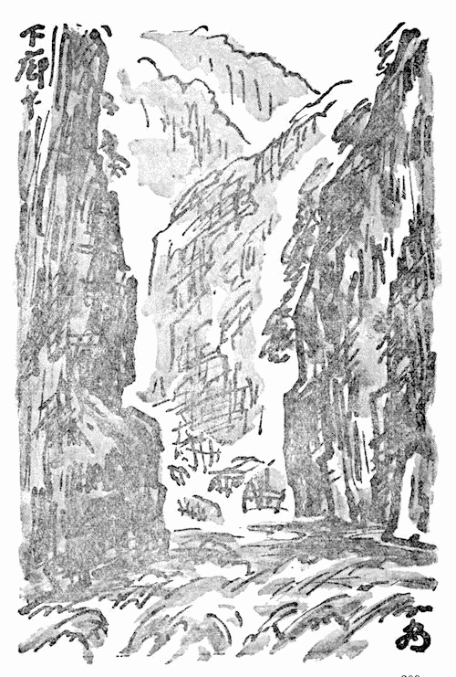
それを入ると、いよいよ谷へ幽閉された、という感が強くなる。これから、岸の淵が深くなって、なかなか水については進めなくなり、幾度も山腹を高廻りする。この辺は長大な北仙人山の山足にあたるので、山も谷もますます深奥の感を加える。いわゆる
折尾の岩小屋はよかった。大巖の背を、また大岩が覆って、ふところはかなり広く深く、前は両岸とも大盤岩の廻廊となって、むこうの折り重なった、山の毛脛の間から間へ、黒部の本流は岩に咆えつき、噛みつき、もんどり打って転び走り、
いつか、「山の覚え書」（前著「山岳渇仰」にあり）の中に書いた、動きそうもないのに動くもの、あれとは少しちがうが、この岩の動きもその縁類とは言えよう。いちばん近いのは、瀑布の場合で、しばしば経験する所だが、渓流においては、まったく珍らしいようだ。私もこんなのは初めてだった。いかに流れの激越であるかがわかると思う。とにかく、谷中が不思議に生きて活動している。疲れたのと、気に入ったのと両方で、ここに一日滞在したが、この行で一ばん感銘の深かった所、と言っていいだろう。
平らな岩の歩廊に腰を据えて、上流の方を、油で、小品に写生した。谷の中に坐った大岩塊と、そのそばで主流が、バアッとこぼすように一段落ちる、滝のあたりを描いて見たが、結局情なくなって筆を投じた。しかし緊張の連続の間に、そのくらいの余裕が、ようやく出て来たわけだ。それに助七たちが、大きな岩魚を釣って来た。あまりみごとなので、これも写生帳に水彩で姿をとどめた。この帳面は、手近にあったので、ひさびさに開けて見たら、傍に「長さおよそ一尺二寸、巾三寸位」と記してある。えらい歯をしている。それに、ここの夕暮、上流の楔形の空を横さまに、谷をまたいで虹の危橋が架った景色は、不思議に強い印象をとどめた。
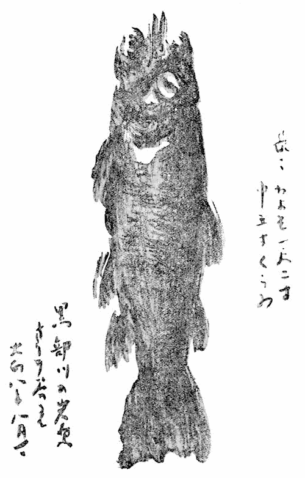
ここからアゾ原へ行く途中だったろう。例の霧を吹くような、
この行では熊には出会わなかったが、前の祖母谷では見かけたし、今でもあの辺には、時おり出るそうだ。黒部の谷筋には蝮がなかなか多い。そして大井川も、その名産地なのは面白い。去年だったか、この先の仙人谷で、登山者がこれにやられ、立山への登山を中止したそうだ。私がこのところ毎年のように同行する、愛本の山男がその時付いていたのだが、つまずいてうっかりつかまった朽木に、それがいて、手をやられたのだそうで、脹れてひどく痛み、せっかくの登山を中止して、その山男が背負って下山、宇奈月で医者の手当をうけたが、幸い大事に至らずにすんだという話であった。毒という武器をたのんでか、彼らは人を見ても逃げないから、それが禍のもとになる。ただし山人に会っては逆手をとられて、自分の方が、生き皮をはがれ、生き胆をぬかれる。
話が蛇行したが、折尾につづいて、アゾ原の泊りが又面白かった。小谷が、劔附近特有の、いわゆる「窓」の形に
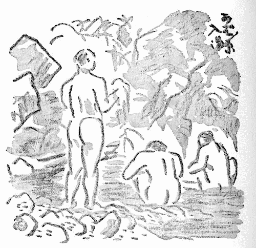
「廊下」とはうまい名をつけたものだ。しかしこの廊下は、人の通る廊下ではない、水がおどり狂い、走りぬける廊下なのだ。生き物なら、まず岩魚か鱒で、例外として助七のような人間がいるだけ、山の壁があって、上に高い「窓」がある。これもうまい。いずれも、巧まずして適切な形容になっており、少しも嫌味がない。山人の命名は万事、直截、端的で、時には興ざめと思われる、曲のない、味のないのもないではないが、またこのような傑作もある。
この行は、本来もっと南まで、出来れば
未知の上流を見返りつつ、仙人谷を上り、立山へ出たのだが、途中、仙人ノ湯は、前年入浴の跡をしのんで、眺めただけですぎた。あの時の、寝棺のような岩沙の湯槽の味は、忘れられない。あおのけに身をのばして、山雲を眺めた心持ちは、昨日のように鮮かである。あの年は、硫黄沢でも、天然の湯壺をいくつか見ながら、時間の都合から、惜しくも見過した。思いは上流に残りながらも、峯へ這いあがって、仙人ノ池から朝の劔、立山を仰いだ時は、また晴れやかさに眼が眩むほどの美しさを感じた。
（昭和十四年七月「山と渓谷」）
［＃改ページ］○
大雪山は実にいい。優美でしかも雄大、そして多分の原始味を保っている。そこが特色だ。北海道のまん中に蟠居する大火山群だけに、日本アルプスとはおよそ対照的な風格を持つ。岩壁の壮美にかわって、茫々たる高山的湿原を展開し、残雪と高山植物の豊富さは、むしろ彼をしのぐ。渓谷も大井、黒部の規模は無いまでも、火山としては出色の石狩、忠別があり、森林の広大深奥はそれを補ってあまりがある。高距は二千二、三百にすぎぬとはいえ、緯度、気候の関係から、内地とは千米にも及ぶ開きがあって、偃松は千米そこそこから見られ、山上の景観は内地の三千米級のそれに匹敵する。さらに原始味に至っては、日本アルプスにおける明治時代といわぬまでも、大正初期を思わすものがあり。羆の棲息がそれに一層の凄味を加えている。
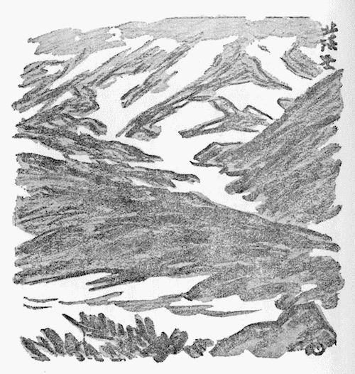
○
私は昨年八月から一と月近くこの山中に籠り、山谷の処々を遍歴して画作に従事し、楽しい日々を送った。一番長くいたのは黒岳小屋だが、新設の白雲、忠別の小屋や、また愛山渓、ユコマンペツの温泉にも足をとどめた。黒岳小屋は高距およそ千五百メートル、黒岳、凌雲、北鎮、北海などの峰々が緩く波打つ間の盆地にあって、あたりは広い雪田と花野で眼ざましくいろどられ、大雪山上の概貌はほぼ得られるのだが、実は大雪火山群の北東の一部にすぎず、最高峰の旭岳（二二九〇メートル）はじめ白雲岳以南、忠別、トムラウシ、
黒岳小屋附近からの眺望の中心たる北鎮岳（二二四九メートル）は、ゆったりした円錐の山腹に数多くの雪田が大模様を描いている。その中の最大なのがいわゆる「白鳥」の雪で、右向きに翼を収めた偉大な姿だが、山麓からは見えないから、農事に関する真の
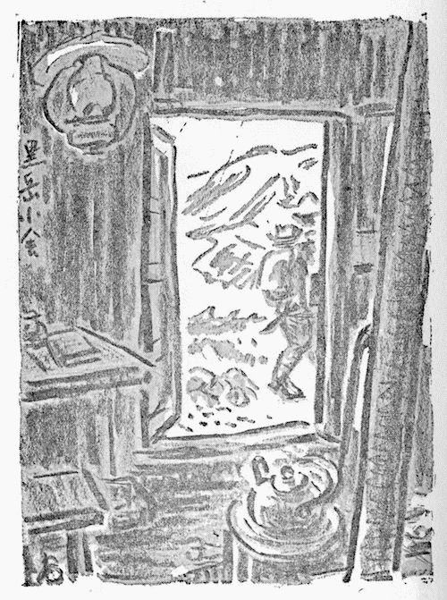
○
黒岳から北鎮に連なる広い尾根は「雲ノ平」のお花畑で、細かい砂礫地がちょうど雪田の表面のような波形を刻み、その高い部分を山草が美しくかざっている。八月の前半は一面の黄花石南花で、実におどろくばかりの見物だった。日本アルプスでもこんな大群落はとても見られない。黄花石南花がすがれるころからは、エゾ水桜の紅花が盛りになる。この辺には高い木は無く、偃松と裏白ナナカマドが処々に団落をつくっているだけだ。この外エゾ栂桜や夕張栂桜、駒草、岩梅……多種多様、みな色が鮮かで量がとても多い。黒岳の東面にはエゾの金梅草が咲く、日本アルプスの信濃金梅に似て、ひとまわり大きく、眼のさめるようなみごとな花だ。
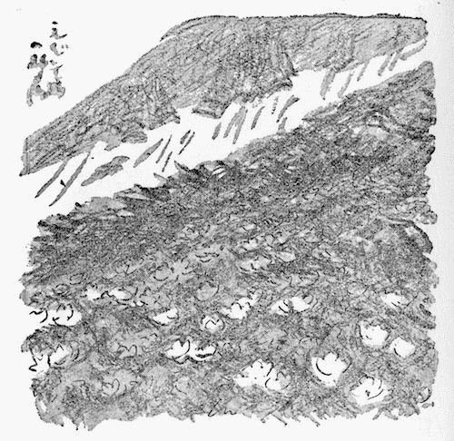
動物も大分特異な種類が多く、鳥の声など聞き馴れぬものばかり、ただ星鴉はここにもたくさんいる。エゾ雷鳥は山鳥のような姿で、これは冬も白くならぬという、私は偃松の間で見たが、森林に多いそうだ。八月の初旬、黒岳小屋で、南の方に数声のカッコーを聞いた。偃松のある所でこの鳥の声は、私には初めてのことで、ちょっと勝手がちがった。
蝶ではこの山特産のウスバ黄蝶はやや時期をすぎていたが、ときどきお花畑でその美しい姿を見かけたし、大雪タカネヒカゲや旭ヒョウモンにもしばしば出会った。
獣には面白いものがいる。黒岳あたりにはシマリスが多く、あまり人を恐れない。啼き兎はピーッと鋭い声を立てて、時々岩間に敏捷な姿を現わす、鼠ぐらいのかわいいものだ。山友のひとりは小屋の塵塚を漁りにきたらしい狐を見たという。羆はこのへんには比較的少ないらしく、ただ一度友達が、凌雲の斜面を親子づれで歩くのを見たくらいだ。しかし夜用たしに出る時なぞ、ちょっと薄気味わるいし、すこし遠出する時は、ひとりでは心細い気がする。
○
南に移って白雲岳（二二二九メートル）へ進むと、景象は大分変ってくる。この山は噴火口が美しい礫原をなし、頂上はその外輪で珍らしく巨岩が累積して荒い風景を作り、最高峰旭岳や南方の諸山が見わたせる。旭岳との間には多量の残雪が氷河のような流れを幾条も横たえている。白雲の北腹には大雪田が谷に向って断面を露わしていたが、目測で十メートルを越えると思われた。同じような残雪は烏帽子岳の東面にもあって、八月半ばでこの雪量は、日本アルプスでも劔、白馬の外は比肩できまい。他にも一見平凡な雪で、意外の厚みを持つらしいのが多い。この点、飯豊山式の万年雪といえよう。新設の白雲小屋は、この東方山腹の小高い隆起にあって、視界が南方に開け、気もちのいい所だ。黒岳は営林署員が宿泊の世話をしているが、ここ以下は皆無人だ、しかし食器まで備わっている。ここの水場がすばらしい。あたり一面エゾの金梅草で、清流はヤチ蕗の花に埋もれ、まず黄金の波間にただよっているような感じだ。
ここから南へ忠別岳に連なる尨大な尾根が高根ヶ原で、お花畑の連続だが、中でも驚くべきは駒草の大群落だ。うっかり歩くと道でも駒草をふみつける。ある所では見渡す限り駒草ばかりといってもいいくらい、私は思わず同行の北大植物教室の鮫島さんをかえりみて「一目千本」と嘆称をもらしたほどだ。そんな所が数箇所ある。又偃松の異常に旺盛な所で、白骨のような根株はこちらに、梢はとんでもない彼方、といった風で、中には人丈けを没する大株もある。私は冗談にエゾハイマツなどと呼んでみた。従って羆の隠れ家らしく、大きな足跡や累々たる糞塊、好物の千島人参を掘った穴などがいたる所に見られる。そんな所では鮫島君らは歌を唱ったり、サイレンを鳴らしたりして行く。彼は数メートルの近くで羆と出会った経験の持主だが、けっして逃げてはイケないという。逃げれば相手弱しと見て必ず追ってくる。あの図体に似ずすこぶる駿足だから、とても逃げおおせるものでない。ジッと睨みすえるに限る。すると向うで退却する……というのだが、そういってくれればよいが、私にはどうも自信が持てない。むしろ立ちすくんで動けないのがいいかもしれぬ。忠別岳を越えた辺で、私は足下の霧の中から牛の鳴声を聞いた。――オヤこんな所に牛が？……と首をかしげたが、後に聞くと羆の鳴声は牛によく似ているそうで、さてはあれは羆だったかとうなずいたわけだ。
忠別小屋は尾根の東下、綿のような花苔の斜面と小雪渓をへだてた山側にある。ここから沼ノ原山までの間が五色ガ原で、見る限り霧に融け入るエゾの金梅草、あるいは白山一華、あるいはその混交で、金と銀の独奏また交響の色彩楽だ。驚くべき感銘だが、なかなか画にはなりそうもない。その間には湿地が多く、細葉のウルップ草が少し盛りを過ぎていた。沼ノ原山にかかると初めて亭々たるエゾ松やトド松、岳樺などの群だちが見られ、その間から大小の池沼がひろがり、折からの深い霧に烟って、宋元の水黒画を［＃「水黒画を」はママ］思わせる。路は田圃の畦に似た草間を往く、水中にはミツガシワ、地上にはヤチギボウシの紫。大沼の岸辺に立った時は、水平線は霧にまぎれて、石狩岳もトムラウシもありやなしや、ただ茫々漠々、水辺に偃松がはえていなかったら、山か海かわからない不思議な景色だった。
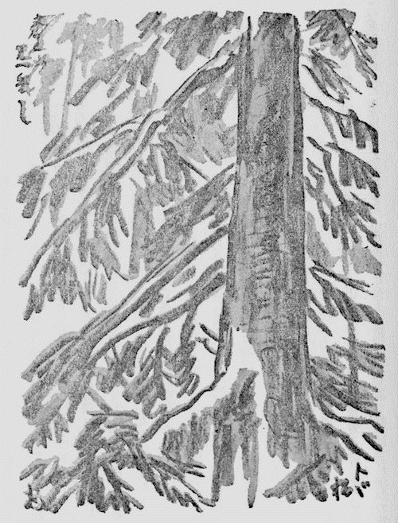
○
黒岳と愛山渓を結ぶ山路は、北鎮を越え、
愛山渓は深林にかこまれ、
ここからユコマンペツ温泉への山路は、沼ノ平の水光連なる広大な高原、旭岳裾合谷の奇岩そばだつ幽邃な山谷をつらぬいて、姿見の池畔に出る趣深いもので、秋を告げる黒マメの木の紫果が、疲れた身に甘く染みた。羆の跡は到る処なまなましく、それでも遠くから姿を見たい、という私の願いはついにむなしかった。旭岳は山腹から轟音を響かせて硫気を噴出している。ユコマンペツに下る途上の天女ヶ原、その疎林を通して十勝岳の眺めも美しい。そして私がユコマンペツから松山温泉に下る頃は、もう八月も終ろうとして、途中の瓢箪池畔では、はやくも峰楓とナナカマドの初もみぢに、そぞろ長旅が顧みられた。
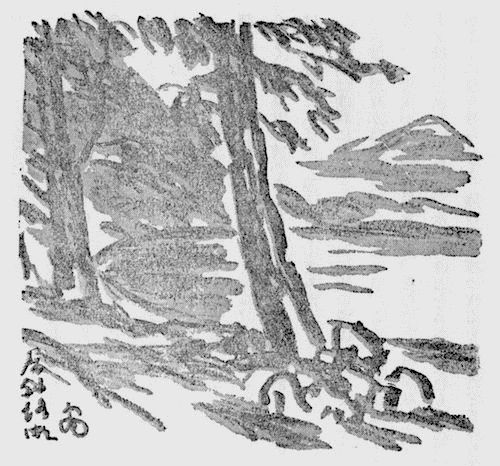
○
この尊ぶべき山に今や開発計画が進められ、詳細を私は知らないけれど、なんでもバス道路が層雲峡から赤岳へと延長され、将来は大雪山の中心部をユコマンペツへ横断する計画さえある……と聞いた時、私は愕然とした。ここばかりではないが、バスの登山こそ、およそ邪道の骨頂である。もう乗鞍だけでたくさんだ。老人や婦人子供のため――などとは企業家の空念仏にすぎまい。婦人は特に弱者扱いすべきでなく、老人は私もその一人としていさぎよく辞退したい。子供に至っては、そんな物で登山することを覚えては、前途が思いやられる。この狭い国土で若い人たちが足を延ばす場所は、山より外に無いではないか、ましてや大雪山は足ざわりのいかにも柔かい、もったいないほど歩きよい山なのである。これをしも歩けない、あるいは歩かないというのなら、それは山を鑑賞する資格を持たない者で、国をあげて病人となり、民族の前途は滅亡の外道がなかろう。
バスの山登りには私はまったく賛成できないが、開発を無用とはしない。それには奥地の三股、石狩岳、あるいは十勝岳などへの歩道や、トムラウシ、化雲、十勝方面における小屋の、新設、改善こそ最も望ましく、それ以上の便利化は肝心の大雪山の価値を傷つけ、やがて民族の自殺行為であることを、強く識者に訴えたいと思う。
○
この山の植物は営林署の監視で相当喰いとめているものの、やはりずいぶん荒らされているようだ。私の実見だけでも目にあまるほどで、某高校の一団など大がかりな根こぎまでやり、監視員の説得で（私も立ち会ったが）先生共々陳謝の上、獲物を山に返した例もあった。道ばたの花摘みなどは数え切れまい。
蝶の濫獲も行われているようだ。他の部門の許可などでカムフラージュして、敵は本能寺にあり、ウスバキチョウなどの稀品を何十何百と捕え去った形跡もあったし、幼虫飼育のため食草ぐるみの濫採も耳にした。こんな立派な環境において、どうしてこうもつつしみを忘れ、無考えな事を平気でやるものか、実に嘆かわしい次第である。
ともあれ大雪山こそは、最後に残された、わが国山岳の原始境であることを思えば、せめてこれだけは自然のまま大切に保存して、後世のために遺したいと念願するのは、おそらくすべての愛山家が一致するところではあるまいか。
（昭和三十年「国立公園」）
［＃改ページ］登山路が縦横にひらけ、何万という人が往来する、北アルプスのまん中に、今までこんな天地が隠れていようとは……。すなわち、槍ガ岳の西裏に当り、蒲田川左俣の奥に横たわる、小高原がそれだ。双六から笠への縦走路、その途上の一峯、
ここの事を、私が初めて聞いたのは、一昨三十一年八月の末、双六小屋の炉ばたで
そして、昨年夏は双六小屋に滞在して、黒部の源流などに遊び、八月下旬に待望のこの処女地を訪ねた。義蔵さん義人君たちの案内で、弓折から下って行ったが、路はまったく無い。あれば獣の路だ。五万の地図にも、この原や池を暗示するような何の記載もないが、高度はだいたい二千三百くらいか。二千五百を越える弓折とは、三百メートル近い差があるだけに、かなりの急傾斜で、やぶも相当ある。北寄り、南よりと、崩壊や草地を選んで、南を巻くようにくだり、偃松や岳樺、ナナカマドなどのやぶに阻まれると、
一度北に向いた、草と偃松の小尾根に出て、さらに雑木のしげりあう深やぶを乱って、苔深い岩地に吐き出されると、そこに一面の池が寂然と横たわる。四辺は、笹をまじえた草地の起伏に、たけ低い白檜のむら立ち、大岩に偃松の老幹、沮洳地……いかにも世離れた静寂があたりを領し、あかるいくせに、一道の幽気をただよわせている。ここが原の北端であった。私は遠望にも増した、魅力を感じた。
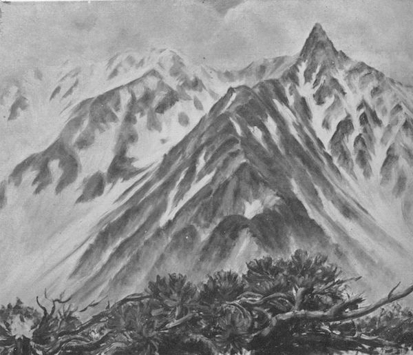
槍※［＃小書き濁点付き片仮名カ、222-1］岳初夏（西岳より）
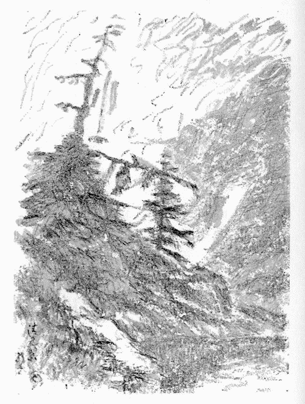
ここから白檜の間を、笹と灌木をふみわけて、下り加減に南へたどると、次々に大小の池があらわれる。左手の左俣へ、こぼれそうにたたえた釜なりのもあれば、なだらかな丘に抱かれ、岳樺の傘をかざした、
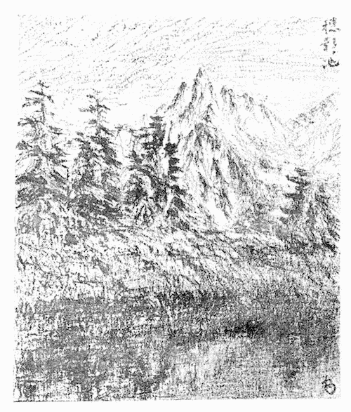
南の池尻に近い高みにある白檜の疎林、その樹齢数百年――と義蔵さんが鑑定した――の古幹の間に、天幕をはって、私は十日余り、単身画作に暮らした、一日おきくらいに、双六から連絡してもらって。南には池つづきの美しい原が小広い。この辺が、まずこの原の中心部であろう。ここまで峯から一時間半ほどかかったが、後に、も少し北よりから小尾根に出て、そこから逆に南よりの林をぬけて、直接ここへ出る近道を見つけた。
原をなお南へ進めば、山の背は細くなって、西側に堀のような池が二、三ある。そのさきで平らは尽き、細い尾根は急に高まって、白檜、岳樺、かえでの類が茂りあい、巨岩が立つ上で一高処に達する。東方の窪地に木隠れて、かなり大きな池を見おろすが、やぶのため近寄ることは出来ぬ。
長さ一キロにあまり、幅は数百メートル内外の山背に、池が目ぼしいもので十数面、小さいのを入れれば二十にもあまろう。水は年中涸れぬという。左俣の中ぞらに浮んだような位置だけに、東に槍、穂高の長壁、西に弓折から
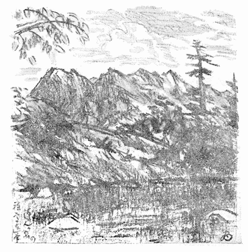
人跡はまったく無かった。空カン一つ紙きれ一枚、目に入らぬ。これは今どき珍らしい。そのかわり獣の跡はひんぱん。姿を見せたのは兎だけだが、足跡は池畔の沙泥の上に、歴々と印せられ、熊、羚羊、狐……と入り乱れてなまなましく、特に南の堀状の池に最も多かった。夜半、ズシリ、ズシリと重いひびきが天幕の中の旅枕に通うのは、彼らの水を求める足音であろう。それに義蔵老が――出ますよ先生と、じろり私の顔を見ながら言った、池の
終日めぼそがさえずり、ガマも住み、蚊が多い。小バイケイ草は、はや水霜に黄ばみ、水辺にい草、唐松草、秋のキリン草などが咲いていた。
ここには定まった名が無いので、地元の人々に望まれるまま、取りあえず「清見ガ原」と「穂影ノ池」の名を選んだ。願わくば、この珍らしい清浄境を、できるだけそのままに保たれるよう、後遊の方々の愛護を切望して止まない。
（昭和三十三年春）
［＃改ページ］五月から六月にかけて、高根の雪がとけるにしたがい、山肌がだんだん現われてくる。その山肌と雪とで作る斑紋が、見ようでは種々な物の形、たとえば動物や人間の姿などにも見えるものだ。その形は、山肌が雪の中に黒く現わす場合と、山肌に囲まれた雪が白く描き出すのとある。そうした形を、山麓の農民が巧みにとらえて、何か身近な物の形に見立て、昔から年々の農事――稲作が主であるが――を始めるための頼りにしてきた。それがここに言う雪の幻像であって、民俗学の言葉では雪形と呼ぶ。そういうものが、雪深い山国にはたくさんあって、今日まで語り継がれているのは、誠に意味深いことだ。
いったい農事というものは、豊凶の運命を、大部分天候に左右されるのだから、殊にその着手は大事である。そのため太陰暦が用いられたが、文字に書かれた暦は、どこにも通用するかわり、山間の局地々々には、必ずしも的確な指標とはなり難いうらみもある。そこへ行くと、この雪形はその土地、その年の季節の推移を端的に示すのだから、これほど頼りになるものはなかろう。いわば生きた暦、あるいは誂えの暦である。その指示に従って、春の農耕を始めたり、また進めて行けば、まず心安らかに収穫を期待できるというもので、そこにこの幻像発生の原因と意義があり、長い年代に伝承されて来た理由もあるわけだ。また一方、美の観点からも、これは見のがすことの出来ない題材なのである。
ところで現今は、農業技術が著しく改良され、気象の通告も精密、敏速を加えているので、この幻像に頼る度あいは以前より大分薄らいだことは事実で、伝承もだんだん弱まって行く傾向が認められる。しかしわれらの祖先が遺した、このりっぱな一種の文化財を、むざむざ消滅にまかすのは誠に惜しむべきことだ。そこには祖先の、自然に対する尊崇と親和の心、物の形に関する鋭い感覚、一種の美意識、生活に根ざした知恵、そして永い世代にわたる自然の恩恵と、それに対する感謝の念、そういったものが皆、この幻像には籠められているからである。そこでこれらの記録が大切なことになってくるわけだ。
この雪の幻像は、東北から中部にかけての山地、殊に山形、新潟、長野、山梨などに数多く存在するが、文献に現われたり、名前が知られていながら、本体がハッキリわかっていないもの、あるいは名前さえ広く知られていないものも少なくないらしい。私は明治時代、故辻本満丸氏の「祖父ガ岳の種蒔爺さん」の記録や、故小島烏水氏の「白峯の農鳥」探究などによって、興味を覚えたもので、以下の数例は直接私が、偶然あるいは意識して発掘、実見した記録なのである。
木曾の御岳に「種蒔き爺さん」が出る、――これは私には、聞くのも見るのも、まったく初めてだったが、帰来それがあながち、私の寡聞のせいばかりでなく、山の識者の間にもまったく知られていないことがわかったので、とりあえず見聞の次第を、次の如く日本山岳会々報（昭和十六年九月）に掲載した。恐らく文献はもとより、土地の人以外には見聞者もありやなしや。
今年（十六年）の五月下旬に、私は宿願のひとつ、御岳の春色を描かんため木曾に入り、しばらく黒沢口三合半、日ノ出滝の宿（当時ここが人の住む最高所）に籠って、裾山を緑に染め、七八合以上残雪に輝く、長城のような御山を仰ぎつつ、画作に従事していた。ところである日、雨に出足を止められた私が、炉ばたで宿の人たちと話していると、下の山村の屋敷野から仕事にきていた中老の石工さん（これは例の、この山に多い霊神碑をきざむので）が、出来かけの私の絵を見て、――ホウ種蒔き爺さんがよう出とる……と言い出した。
私はびっくりした、そんな事は少しも知らず、ただ忠実に描いただけなのに、と意外の感がしたけれど、同時にそれほど土地の人々の関心をひく爺さんに、うれしい感動を覚えた。私は天気がよくなるや、早速彼に教えを乞うた。彼は晴れたお山を指して、くわしく説明してくれたので、私は初めて納得がゆき、思いがけない収穫に驚喜したわけである。
それによると、頂上劔ガ峯の直下、白雪の間に暗色を点ずる山皺の、やや南よりの一つが、爺さんの形をなすものであった。（
 図参照）私はそれまで、そうとも知らずに描いていたのだが、そう言われて見ると、なるほど、小笠を頂いた老翁が、頂上の方に向ってやや前かがみに立ち、腰の辺に大きな袋をさげた姿……そうも見えてくるのが面白い。その人の、「袋」ということに力点を置いている話ぶりが、私の耳に残ったが、袋の中味は外ならぬ種籾であって、その袋をさげているところにこそ、まさしく種蒔きの種蒔きたる所以がこめられているわけであろう。
図参照）私はそれまで、そうとも知らずに描いていたのだが、そう言われて見ると、なるほど、小笠を頂いた老翁が、頂上の方に向ってやや前かがみに立ち、腰の辺に大きな袋をさげた姿……そうも見えてくるのが面白い。その人の、「袋」ということに力点を置いている話ぶりが、私の耳に残ったが、袋の中味は外ならぬ種籾であって、その袋をさげているところにこそ、まさしく種蒔きの種蒔きたる所以がこめられているわけであろう。しかし当時はすでに周囲の雪が大分とけて、爺さんの姿も崩れかけ、そこへ又新雪が来たりしてボヤけてもいる際であって、毎年五月の初旬、そのあらわれ始めの頃は、ハッキリといかにも生き生きして見えるということだ。
これがその年の種蒔きの時機の、確かな目安であって、その頃、即ち八十八夜の前後になると、麓のお百姓たちは、（おそらく御山を拝んだ手を額にかざして――その様子が想いやられる）、「さァ爺っさの姿が見えだしたで、そろそろ種をおろしてもよからずい……」などと、そこにあの春の農耕の一所懸命な営みが、競って始められるのだ、そういうような話も聞かせてくれた。
私はその後、土地の若い人にも年寄りにも、男からも女からも、同じような話を幾度か聞いたが、その際みな言い合わせたように、懐かしげに眼を輝かせたのを忘れない。それでこの爺さんへの信頼が一朝一夕のものでなく、口から口というより、血から血へ伝わった根深いもので、しかも現在もその働きを止めていない、この郷土の活きた指針であり、それ以上山と人との
まことに、待ちわびた春を迎えて立ちあがる山民たちは、希望が胸にあふれる一方、厳しい風土に托する作運の第一歩を思えば、そぞろ何かに祈り、何かに頼らずには居られまい。つまり高い所からの啓示とか、許容とか、あるいは号令とかいうものを
だが私は少し幻想に耽りすぎたかを恐れる。さて、単に「種蒔き爺さん」と言えば、山を知るほどの人はすぐ、あの安曇の野に聳える祖父ガ岳のそれを思い浮べるにちがいないが、この御岳のもやはりそれと、由来なり現われ方なり、まず軌を同じくするものと見てよく、形さえ同工異曲の趣きを持っているようだ。しかるにこれが何故、あの祖父ガ岳の場合のように、人口に上らなかったのであろうか。
それには第一、御岳という山名が、爺さんと表面何ら関わりがないので、せんさくの対象とならなかった、という事情があり、次にもともとこれを望見する山麓土着の住民の、数が少なく範囲も狭く、そのうえ街道の耳目からは隔たっていたためにちがいない。御山参拝は鳥居峠、合戸峠、沢渡峠と、遙拝所まであるが、四季にわたるとは言っても、やはり旧盆前後に集中されるから、爺さん望見の機会は少なく、現代登山も初期はほとんど夏に限られ、その後は幾ぶんこの山を閑却した傾きがあり、外にもいろいろ理由は考えられるが、ますます爺さんの世に出る機会がなかったものだろう。祖父ガ岳が割あい広い、人口の密な平野に臨んでいるのに比べて、ここでは東麓の村々、それも三岳村の黒沢以上、二、三の小部落が主で、外には王滝村の一部恐らく崩越の奥あたり、それにせいぜい開田村の一隅くらいに限られるであろう（開田は私はまだ歩いていないので、この方面に行かれる方は注意していただきたいと思う）。木曾川の東岸になると、見えても距離が遠いので、力の点で如何であろうか。結局この爺さんは、広く名声を博する代りに、人知れず壺中の天地を深く愛しはぐくんだのであろう。
いずれにしても、この口碑の中心が、黒沢口最奥の山村たる屋敷野であることは、方角や距離の点からも、ほぼ間違いはなく、その発祥の地もおそらくここか、でなければ一段下の
その屋敷野（海抜千余メートル）からは、実に御岳東面（この山の表側と見なされる）のほとんど全貌が仰がれ、南は三笠山から北は継子岳にわたり、蜿蜒一連の山脈の勢いをなしている。なかんずく主峰の一※［＃「廓」の「广」に代えて「厂」、235-6］の如き、「山」という象形文字はここで発明されたのではないか、と疑うばかりの骨法を示す。しかも距離は近く、仰角は大に、それが白雪を鎧って、村屋の石屋根、新緑の端山裾谷を圧する景色は、真に眼覚ましくも崇とい感を覚えしめる。
そして「種蒔き爺さん」は、その全幅の中央、象形文字の主軸たる、一段高揚した劔ガ峯の峯頭に現われるのだ。これを顔面にたとえるなら、正に眉間とも言うべき位置だ。くわしくいうと、絶頂からやや南の方、王滝頂上によった、カール状の雪田と雪田の間を分つ小尾根、それが像の主体と思われる。おそらく、比較的急傾斜の岩壁と偃松が、春の陽光にいち早く雪を払って、背をもたげるものであろうか。これと、その周辺を囲む残雪とで、この幻像は描き出される。もとよりこれに睛を点じたのは、麓に生をよせる山民であったが。
像の脚下は、その南方から出る傍尾根と、北方八合目金剛童子の尾根との間に、三つ重ねの白銀の盃にも似た大カールを抱いて、積雪最も豊かな黒沢谷となり、深林に百間滝を懸けて、大のぞき谷を合わせ、木の翠り、水の碧りの大手をひろげて、この小高原の一端に巣喰う屋敷野の村里を抱きかかえる態だ。人々はそこにささやかな水田を耕し、豆や稗、粟の山畑をひらき、桑を植えて蚕を養い、兼ねて御山登拝の白衣の旅人を送り迎えているのである。
さてその事あって後、数日打ち続いた快晴と、半日一夜のすさまじい雷雨のあと、六月も初旬をすぎる頃には、「爺さん」の姿は、どこかにその俤を忍ぶばかり、いつか行方もしら雲と、消え失せてしまったのである。それも道理で、恵み深いお爺さんは、もはや今年の務めを終っていたようなものだ。麓の村々では
恐らく不死の老翁は、半ば形を水に変じて、かの緑秧にそそぎ、昇っては雲霧と化し、やがて名残りの山肌に、霜と置き雪と積み、かくしてめぐりくる年の春の陽に、又そのめでたい姿をあらわすのであろう。ただこれを仰ぐ人は、はたして旧年と同じであろうか、否か。あな賢こ。
総じて山の積雪に現われる種々な形態と口碑は、山民の生活、なかんずくその重心たる農耕に関するものが多く、自然への人間の和親帰依の象徴として、わが祖先の自然を見る眼のするどさ、感ずる心の温かさを伝える遺産として、まことに面白く、貴く、又味わい深いものがある。即ち蓮華の
前記「名の聞えている」と書いた例も、古文献は別として、「山岳」誌上や著作の中で示された、白峯や富士その他についての小島烏水氏、特に農鳥に関する野尻正英氏、祖父ガ岳における辻本満丸氏等のような先覚の労作によって、教えられた所が最も多い。にもかかわらず、なおその或るものは、名が知られている割合に本体に関しては、つまり形状、出現の時期、場所、由来、言い伝えの行われる区域、望見の範囲などになると、思ったほど判然せず、中には現地ですら諸説区々で、取捨に迷うものすらなきに非ず、といった実情にあるようだ。
帰来これらに思いをめぐらせば、いかに画業に心と時を奪われているとはいえ、見残したもの、聞きもらしたこと、考えおよばなかった節のみ多く、なお又見聞の誤りさえなきを保し難く、ただ再探を期するばかり。殊にこの場合、前述の通り私が見た時は、すでに時期が遅れていたので、今後当初出現の際に、それも農民の生活にまじって観察すれば、もっと面白い事実もあるにちがいなく、又そうでないと、真に機微な消息はつかめないであろう。
その上、元来この種の口碑は、世が移るにつれて影が淡くなり、かつは純粋さを失う恐れもあるので、かたがた気は焦っても不敏独力の到底よくする所でない。もし同好諸賢の協力で、博く報告や資料を集め、正確な記録が作られるなら……とねがっている次第である。ただその際、熱意から里人に向って誘導的な質問を浴びせるのは禁物であり、また早合点やあまりに主観的な自説を立てて、かえってそれを先方に鵜のみにされる危険もあることを、自戒すべきだと思っている。既にこういう害毒を被ったかと憂えられる例も無いわけではないのだから。（昭和十六年九月）
〔追記〕 戦後二十二年夏、御岳に遊んだ際、爺さんの本体の辺を少し観察してみた。黒沢口九合目から劔ガ峯の東をからんで、直接王滝頂上へ出る、水平に近い近道がある。それが雪渓を横切る辺から南に、数条の小尾根が並んで薙ぎ落ちていて、いずれもそう大きくはないが、相当起伏のあるしっかりした岩壁に、多少の偃松が生いついたもので、その中の一つ二つが、恐らく爺さんの像を構成する母体であろうと察せられた。しかし何ぶん遠くからの仰望とちがい、近くからの俯瞰では事情がちがいすぎ、かつ雪という協力者が働かないので、果してどの辺が爺さんの頭やら、胴体やら、また袋やら、一こう要領を得ることは出来なかった。幽霊ならぬ幻像の正体は、枯尾花ほどもハッキリとはわからない。
白馬岳という名が、新鮮な響きで聞え始めたのは、明治の三十年代で、日本アルプスの探検時代でも比較的古く、登山も植物学者、地学者をはじめ、一般趣味人を加えて、信仰の山以外では、むしろ早い方に属する。それで山名の由来も、白い馬ではなく、代掻き馬の形が出るところから起ったことも、熱心な山党仲間には、早くから知られていた。
ところが、その「代馬」の本体や所在は、大正、昭和と登山の盛期を迎えても、いや最近に至るまで、まるで知られていなかったというのは、どういうわけか、実に不審千万と言わねばなるまい。ただ最初は登山が夏に限られ、雪形出現とは時期がズレていたせいとも言えよう。しかし後にはいわゆる早期登山も行われ、ついには四季を選ばぬこととなっても、それでも「代馬」はなお人に知られずに現われては消えていたのだ。
もっとも、それが初めから問題にならなかったわけではなく、何かの理由から、それが誤り伝えられたものらしい。すなわち本山ではなくて小蓮華の方に出る、ささやかなもので、写真にも写されていた。それは子供がカンゼヨリをひねって作る、犬だか馬だかのようなか細いもので、到底山名の因となるほどの力はない、そう考えて私はどうにも納得が行かず、山友ともよく話しあったものだが、いつかその本物をつきとめてみたい、と思いつつ年月をすごした。
そこへいい機会がきた。二十八年の春、私は白馬連峯の春景を描くことを思い立ち、四月末から山麓の森上へ出かけた。まず神ノ田圃に泊って、天狗原、乗鞍あたりで筆を染め、森上に帰って、昔よく一緒に山を歩いた矢口森栄君の家に滞在、附近から白馬三山の春雪を描き始めた。仕事は果して長びく。これはいい機会だった。今度こそ「代馬」を解決しよう――そう考えてまず矢口君に調査を頼んだ。彼は四谷の役場に勤めていたし、一家は土着の農家だから、父君もわずらわして古老の問いあわせに便宜を得た。もちろん私も画作の余暇、散歩の折など、森上からは白馬本山は見えぬので、松川の辺まで足をのばし、あれかこれかと馬の姿をさがし求め、行きずりの通行人にまで声をかけてみた。男も女も中年以下では、名を知っていればよい方で、後で思うと、何をききかじったか、とんでもない方を指して教えてくれた者もあった。なじみの雑貨店の主じなど、少年の頃雪の中に出る斑点を通学の途中、いろいろな形に見立てて友達とふざけたものだ――などと私に調子をあわせたが、肝心の「代馬」ではサッパリ要領を得ず、やはり農家でないと本当の雪形の口碑は伝わらぬものかと長大息した。こうした自家製雪形談では、例えば白い馬が出るなど、他にも私を嘆かせた例が少なくない。その農家だとて、目の前に、防水紙を覆せた温床式苗代を見ると、「代馬の御厄介になった時代は過ぎたよ」と語るかのようでもある。
すこし心細くなった私に、ようやく五月も下旬にはいって、矢口君がまず吉報をもたらした。――どうやら「代馬」が現われたらしく、古老からそれを教えてもらった、しかし余り馬らしくも見えないので、まだ何とも言えないが……と言う。その場所が本山だと聞くと、さては！ と私は初めて光明を見出した思いで、胸をおどらせたのだった。早速あくる日仕事を休んで、四谷へ急いだ。役場で馬さがしに手を貸してくれた助役さんにも会い、矢口君ともども裏手から、雲間に見える本山を物色して、その「代馬」というのを指摘してもらった。しかし矢口君の言う通り、どうもそれは馬とは受け取れぬもので、いろいろ想像を働かせてみても、何か動物の形らしくはあるが、馬とは申しかねる……間違いではないかと迷った。後に思えば、それは尾と胴体や脚の一部が現われただけで、頸から頭はまだ出ていなかったのだ。いわばそれは未完成の画馬の断片で、そこから天工の意匠を洞察できなかったのは、不覚ながら、一つは前述の瘠せ馬の先入観が働いて、そんな雄大な立派な馬を想い描き得なかったためだろう。その日は、どうひいき目にも、馬とは見えぬ雪の中の山肌を、思いきりわるく見返りながら、うかぬ心を抱いて森上へ戻った。そして写生帖やメモ、地図などを前に、あれこれと思いわずらったことだ。
数日後雨あがりの快晴に、また四谷に出かけた、もう六月に入っている。松川の畔から見やる碧空の中の雪峯群は、クッキリと浮き出し、先日来問題の馬は……あら不思議、見ちがえるほど面目を新たにして、いつかまぎれもない馬と化していたのだ。実に雄大奔放な天馬である。これほどの構図になろうとは、まったく想像の外だった。私は幾度か眼を拭って見直した。もう疑う余地などない。新たに描き加えられた、頸から頭のあたりは、まだ一だん色調が淡いながら、尾を揮い脚を踏んばって、頂上さして走らんとする勢いだ。私は胸の
田の
里近い裾山にはまだ山桜が紅く、落葉松は銀緑の若葉に重味を加え、流水はゴボゴボ音をたてて畦にあふれ、農夫は女子供もまじって代掻きに懸命、畦道には枯芝の中に東菊が空をうつして碧く、茶を煮るか、そこらに焚火の煙が山風になびいて霞にとけ、鶯や黄びたきの声々……正に万象が冬眠から覚めて、活動期に入った趣きだ。そしてその中心をなすものは、天をかける幻の馬と、地上を行き戻りする
「代馬」は日を経るに従い調子を高め、力を増すようであった。もっといろいろ古老に尋ねたい事もあったし、代馬の運命も見とどけたかったが、本業も終ったので、それは後日にゆずり、一応心ゆくほどの土産を持って、この地を辞することにした。後に矢口君の便りでは、六月下旬まで馬は見えていたらしい。
帰京後、私は友達につぎつぎ「代馬」の話を持ち出して見た。皆な興味をもって迎えてくれたが、同時に意外の感をもなしたようだ。特に山の識者というべき人々からも異論は聞かれなかったし、同調の説も無かったのはむしろ不思議だった。これは広く知らせる必要がある、と私は思った。そこへ故関口泰君や島田巽君が、新聞へ書いたら――と勧めてくれ、朝日新聞の文芸欄に書くことになった。たまたま翌年が午年なので、新年の紙上に次の簡単な一文をのせた。
白馬岳の代馬 （えと文）
午年の縁起を担ぐのではないが、一つ変った馬をひき出して見たい。それは雪と岩が、白馬岳の峯頭に浮彫りする黒鹿毛のこの山をよく人はハクバと呼ぶが、実はシロウマで、それも白ならぬ、代掻き馬の意味であることは、知る人も多かろう。だがその代馬が、どこに、どんな形で現われるかは、山岳人の間にも案外知られていないのは不思議だ。もっとも現地だとて、だれもが知っているわけではない。私は昨春古老に尋ねたり、説の異同正否を考えたり、相当苦心の末、ようやくその正体を見出した時は、年来の疑問も一時にとけ、想像以上のりっぱさに驚喜した。
この代馬は、何も物好きの見立てではなく、毎年五月末から六月初めの頃現われる所から、山ろくの農民が古来、稲作のための生きた暦として仰ぎ来たったものであり、わが祖先ののこした一つの特異な文化財と言えよう。
初夏の空に輝く山脈の主峯に、雪消の岩と偃松で黒々と描き出す奔馬の姿は、実に印象的で、おそらく
――朝日新聞、昭和二十九年一月十四日――
この白馬沢や白馬尻の地名と「代馬」がピッタリ合って、いかにも首尾をまっとうし、この馬が本物であることを裏書きしているのは心地よい。同時に逆に言えば、後の考えだが、裏書きというより予告しているようなもので、これらの地名から帰納して、その位置は動かないものを、どうして初めからそこに思い及ばなかったかと悔まれもするのだ。前記の小文にも相当の反響があって、喜んだり賞めてくれたりした中に、一通の非難もまじっていた。それは馬についてではなく、「種まき爺」が四谷から見えるなどと嘘を書くのはけしからん――というのだった。私もちょっと驚いたが、よく読んでみると、「種まき爺」をいきなり例の祖父ガ岳のと思い込んでの話であった。私は詳細にそうでないことを説明した返事を送ったが、考えてみれば無理もない。蓮華乗鞍の「種まき爺さん」は、「代馬」捜しの副産物の形で、偶然私の耳目に触れたもので、代馬以上に人に知られていない、いわば新顔なのだから。あの文章が短い上に、主題が代馬で、種まき爺さんについては、くわしい説明の余地がなかったための誤解だった。
ともあれこの種の事柄は、通り一ぺんの旅人の耳目には入り難いものであることは、私自身の経験からよくわかるのである。前出の木曾御岳の「種蒔き爺さん」は、偶然手に入った収穫で、発掘というにはやや当らないが、代馬の方は捜し求めた結果だから発掘と言ってもよかろう。どちらも嬉しいが、そこにおのずと差違もある。前のは不意に雷のように宝に打たれて、後からそれをかみ砕くところに味があり、後のは探り求める道程に苦しみも楽しみもあって、最後に獲た宝にそれが昇華する。「代馬」望見の範囲は、北城村四谷を中心に、西は細野、東は大出、南は神城村の一部に及ぶであろう。細野は近いだけに、四谷や大出より視野は狭いが、前山や木立、農家などの間に大写しとなって力強い。松川以北では見ることができない。
前の「代馬」の項でちょっとふれたが、この雪形は「代馬」をさがすより先きに、森上の矢口家の人々から早くも聞かされ、心をおどらせて、その出初めから永い間、毎日のように仰ぎ見つつ暮した。この里からは間近いので、どこへ行ってもよく見える。私にはまったく初見初聞のもので、おそらく「代馬」以上に世に知られぬ隠者であろう。私は思いもかけぬ幸運を喜んだが、それにしても、どうしてこうも「種蒔き爺さん」に縁があるのか、木曾御岳のそれも偶然私に授けられたので、これで二人目だ。祖父ガ岳のを合わせて、日本アルプス三人目の種蒔き爺さんにあたる。
出現の場所は、白馬連峯の小蓮華から北東につづく、大池を抱えた乗鞍岳の、東南角をなすゆるやかな斜面で、栂池の上方、東は天狗原に続く地点だ。姿はやはり他の二者と瓜二つで、笠を頂き、左手にビク（竹籠のこと、東京辺ではビクと言えば魚を入れる籠のことだが、この辺では竹籠はすべてビクという）を持ち、右手をひろげてあたかも種をまく人の形に見える。爺さんというのは、率先して農事の範を示す知恵深い神人――それを意味する敬愛の称号であろう。いかにもこの里の指導者らしい位置をしめている。
御岳のとわずかに違う点は、種の籠（御岳では袋）のありかが逆になっている位のもので、兄弟というより双生児だ、いや三つ児か（祖父ガ岳のは種入れの代りに苗代らしいものがある点、やや異なる）。この年（二十八年）は八十八夜（五月二日）には、すでに胴体の一部が現われていて、代馬より二十日以上も早い。しかし全体の形が整って、人の姿らしくなったのは五月半ばであったろう。胴体から脚、最後に笠という順序で、わりあい起伏のない山の白ら壁に、影絵のように浮び上る。だがこの推移を双眼鏡で見ると、岩と偃松、それに深山榛か岳樺のようなものがまじっているらしい感触がある。
この雪形の出るのが、いうまでもなく、種まきの時期で、それも籾が主であるが、もとは麻を多く作ったから、その種をおろすのにも、これを頼ったという古老の話であった。私が昨年見たところでは、八十八夜にはすでに、苗代に若い緑が芽生えている所もあったから、昔よりは種まきの時期も、だいぶ早くなっているのであろう。それは前記の如く、農法の改良によるものと思われる。
観望の範囲はまず北城村一円であろうが、北によっているだけ、森上附近が最も力強く明瞭である。なお南小谷の一部からも望見できるかと思う。
前記、大出の松沢元太郎氏から教えられた珍らしい雪形で、やはり今まで全然世の中から隠されていたものだ。私なぞ夢にも知らなかった。それも当然で、地元でも知らぬ人が多く、たとえ名を知っているにしろ、異説ふんぷん、確実にその所在を心得ている人は、代馬や種まき爺さんに比べて、段ちがいに少ない。打ちすてて置けば、遠からずわからなくなったかも知れぬ、末期の
これらの幻像の出るのは、鑓ガ岳の南に続く大雪田、土地の人がお
鶏は鶴のすぐ右手、カールの底にあって、形は誠に小さいが、雌雄向い合い、雄鶏は頭を挙げて、さながらトキをつくっているような姿勢であるのも面白い。私見ではこれらの実体は、あるいは
なおこれらの外に、松沢氏の話では、唐松岳に「チュウナ打ち」という雪形が出るそうで、チュウナとは、チョウナ（手斧）という大工道具のことだった。私は大出から、しさいに物色して見たが、それらしいものを見出せず、里人にもただしたが、知る者に出会わず、あるいは時期のズレか、ともかく後の考究に待つことにした。

又もや生面の「種蒔き爺さん」の登場である。日本アルプスで通算四人目の「爺さん」だ。これも私にとって、予期しない授かりもので、今さらながらうれしさは、また新たなものがあった。それにしても、何たる「爺さん」との宿縁ぞや。「爺さん」の記録係りを拝命した覚えもないが、四人のうち三人まで私が紹介の筆をとらせてもらうことになろうとは……。
日本アルプスでは四人目だが、これで出揃ったかと言えば、そうとも言えまいし、全国ではまだ何人居るか。何しろ雪深い山間で、遠い昔から膝下の農人を愛しつづけ、毎春一度――いや本当は収穫のあと、新雪と共にもう一度又うっすり姿を見せて――御苦労々々々、また来年しっかりやれよ……と、雪の衾を引被いで来ん春を待つ。たとえ時代が移って忘れられようと、忘恩を責めもせず、かつて名聞をかえりみぬ隠逸の長者だから、どんな所にひそんでいるかわかるまい。現にこの爺さんは、先年代馬さがしの折にも、とうとうかくれ
しかし今度――三十一年六月下旬――私が三年ぶりで細野へ画架をかつぎこんだ時は、もう時期が遅いので、雪形は恐らく崩れ去ったであろうと、半ばあきらめていたのだ。ところが来て見ると、宿の近くの田圃の中から主じの大谷さんが声をかけて、――今年は雪が多くて未だ代馬が見える、という。私は幸運に感謝した。
宿にも入らず私は庭先きで、感慨深く「代馬」を眺めていた。そこへ宿のおかみさんが来て、いろいろ話の中に、――種蒔き爺さんもまだ見えるほど陽気がおくれて……云々、その一と言を私は聞きとがめた。ここらで種蒔き爺さんといえば、さしずめ乗鞍だが、待てよ、少し
ああ又初対面の爺さん――労せずして又私はこの光栄を授かったか……雲の晴れ間を待つ私の胸は高く鳴って、初めて会う今度の爺さんはどんな姿をしているだろう？ 雲の奥にいろいろ想像を馳せていると、待つ間も決して長くは感ぜず、むしろそれを楽しむ気もちだ……。やがておかみさんが指さしたのは、「代馬」よりズッと北東に離れた、連峯の一突点の大日岳であった。その右寄りの斜面に、頭を稜線に触れそうにして、このはにかみやのお爺さんはひそやかに立っていた。もはや大分形が崩れたと、おかみさんは言うが、なるほどとうなずけるだけには、まだ充分残っているように見えた。よくもこんなに、と思うほど前の三人と似ていながら、又いちじるしい個性をこの爺さんは持っていた。それは坊主頭で、笠をかぶっていないらしいことだ。初めから笠は無いのかどうか、おかみさんに聞いてみたら、ちょっと考えて、――無いようだとの答えだった。
雪の中に黒々と立つ爺さんは、たくましい大男で、笠をのぞけば他の三人と不思議なくらい似通っており、中でも、右向きで右脇に種を抱えたところなど、御岳のそれとそっくりの体勢だ。ただ脚が馬鹿に長いようにも見えるが、ここらが最も形の崩れた所かも知れない。又右下に祖父ガ岳ののように苗代のようなものも見えるが、ここでは別だんそういう事は言わなかった。時期が早ければ、大分ちがった形を示すのかもしれない。この「種蒔き爺さん」の望見範囲は、北城一帯から神城に及ぶであろうし、南小谷の一部からも見えるかもしれぬ。乗鞍のと、近距離に二人の爺さんがいるわけだが、里によってはこの細野のように、一方だけが見える所も多かろう。
七月の十日近くになっても、「代馬」も爺さんも、まだそれと眺められた。これは例年にない珍らしい事で、今年の春雪が異常に多かったためだという。ただし鑓の南の大出ッ原大カールに出る比翼鶏は、六月下旬すでに形を変えたのを私は見た。その筈で、遅れたとはいえ、山田はすべて早苗が行儀よく列んで、山風に涼しくそよいでいたのだから。
農業技術の近代化につれ、雪形は古老と共に衰退期に入った。里人でも若い世代は知らないのが通例で、たまたま老人の話を耳に留めているのは例外という程度だ。細野にも七十以上の老人が二十数人はあると聞いて、その人たちにいろいろ尋ねてみたいと思いながら、まだ果さない。私はさきに「発掘」という言葉を用いたが、わが民族の生命を支え来たった稲作り、その指導にあたった功労者の像が、まさに埋もれようとする時代に、それらを記録に留めておくのは、真に意義のある事であり、また大いに愉快な事だと私は思っている。大方の協力を望みたい。
この宿で求められるまま色紙に「山静似太古」の古詩の一句を記念に留めたが、バスの通う山村で、この句にこれほどの実感を盛り得たことは、かつてなかった。
それにしても、こうまで種蒔き爺さんが、あちらにもこちらにも輩出し、それが申し合わせたようによく似た形をしている、というのはどうしたわけか、この疑問は当然起るはずだ。偶然――とは言ってしまえまい。考えてみると、あの像を造る素材たる地形が、山特に日本アルプスには方々にあることに気がつくだろう。即ち小さい脇尾根が、稜線近くから、見かけ上垂直に垂れている、その背※［＃「染」の「九」に代えて「刃」、U+9FC4、256-14］の最も張った所が胴体になり、付け根の辺が笠や頭に、下方のやや崩れた所が脚になる……といったわけだ。それで尾根は背※［＃「染」の「九」に代えて「刃」、U+9FC4、256-15］で左右に方向の違う面をもつから、周りを雪で塗りつぶすと、大体左右相称の浮彫りとなり、その面の乱れが、種の容れ物、手などを現わすことになるのだろう。だからかんじんな条件は、背※［＃「染」の「九」に代えて「刃」、U+9FC4、257-2］の高さ（周囲の雪の残る面からの）と周囲の面の均等さ、それに両者の高低比のある黄金律、というような点にあって、その上、高距、積雪の量など、ちょうどあの頃、そういう条件に合うような所に、あの種の像が出現するわけだろう。ただし、これを種蒔く人になぞらえ、それを自分達の生活に結びつけ、役立てるというのは、するどい感覚と熱い信仰がなければ出来ることではない。「種蒔き爺さん」はそういう微妙な自然と人間――われわれの祖先――との合作で生れたものに外ならない。
ともあれ、この姫川上流、北安曇野盆地は、白馬岳の「代馬」を中心として、北に乗鞍、大日の二体の「種蒔き爺さん」、南に鑓大
誠に、晩春初夏の代馬盆地に立って、天半に神人と馬と鳥との、天、人合作の大壁画を、ずらりと一望に収め、薫風に頬をなぶらせつつ、思いを遼遠の世に馳せるなら、そこに得難い生命の充足を感ずることができるであろう。
（昭和二十九年春）
［＃改ページ］東洋で山が描かれたのは、よほど古いことらしい。いったい絵は先史時代の土器の文様を源とするが、おもしろいのは支那の文字で、これには象形が用いられて、いわば素朴な絵とも見られる。山とか岳とかいう字の古形を見ると、まったく字というより絵に近い。まことに書画は同根で、文字の始まりが西紀前三千年近くも遡るとすれば、山はその時から描かれたともいえよう。それが文字はだんだん抽象に進み、画は具象的に発展したから、山は万象とともに画としても描かれたにちがいない。西方に向った文化が、ほとんど人間ばかり描いたに対して、東方のそれが人間以外の自然もとりあげ、やがて山水画や花鳥画というジャンルを作り出したのも、その辺に由来するかも知れない。
ともあれ、山が画題に上り、山水画という独立の風景画を生んだのは、世界で支那が最初であることは確かだ。ただそれがいつ頃であったかは、まず文献にたよる外ないが、三代（西紀前千年位）には、
 鼎に山川万物を図す
鼎に山川万物を図す とか廟祠の壁に天地山川を画くなどいう記録がある。それが秦漢（紀元前後）にいたって初めて遺物が現われ、輯安の古墳の壁画に、狩猟図の一部として山が描かれてある。これがおそらく山の画の最古の遺品であろう。だがいたって原始的なもので、文様を去ること遠くない程度だ。一方印度のアジャンターの壁画にも、仏伝図の背景に山があって、ほぼ同時代と見られるが、絵としてはこのほうが幾分進んでいるようだ。
とか廟祠の壁に天地山川を画くなどいう記録がある。それが秦漢（紀元前後）にいたって初めて遺物が現われ、輯安の古墳の壁画に、狩猟図の一部として山が描かれてある。これがおそらく山の画の最古の遺品であろう。だがいたって原始的なもので、文様を去ること遠くない程度だ。一方印度のアジャンターの壁画にも、仏伝図の背景に山があって、ほぼ同時代と見られるが、絵としてはこのほうが幾分進んでいるようだ。晋の
 之
之他方西に向うと、甘粛の
 濫を［＃「濫を」はママ］も招いた。
濫を［＃「濫を」はママ］も招いた。支那でなぜそんなに山水画が発展したか。それは一つは、あの茫漠単調な地平線を破って
古人が山をどういう風に描いていたか――それを知ることは、山を愛好する者にとって誠に心楽しくまた有意義なことだ。それには親しく遺品に接するのが一番だが、幸いわが国には、思いのほかそれが豊富なのはありがたい。その点、支那・朝鮮以上で、正に世界一である。つぎに私が実際に見たものを主にして、古いところから少し述べてみよう。
韓国平壌の西方、江西郡遇賢里にある大古墳、そこの壁画の一部に山の絵がある。これは学者によって、後漢か晋代（西紀二百年頃）とも、また少し下って
このほか、隅壁その他に、天人、異獣、草花、種々の文様など一面に描かれているが、わが飛鳥期の遺品とよく似通い、支那北魏の系統といわれる。これらの画は天地を畏敬し、自然に親和する、東洋人独特の思想感情の現われと見るべく、仏教の匂いはないが、墳墓のことで、霊界との交通について地相の吉凶を卜する、いわゆる風水説の信仰が篤かった時代だけに、実に敬虔で気魄に満ちたものだ。画はすべて、微細にたたいた石面に直接描かれ、鋭いそして強い抑揚を持った線を主とし、色彩も豊富で、それが
ただしこれは昭和十年の所見で、当時は日本の手でよく管理されていたが、その後の戦乱つづきで果してどんな運命をたどったか、考えると心が暗い。ただ無事を祈るばかりだ。わが国でこの絵に似ている法隆寺の壁画が、先年のあの災厄なのだ。この古墳壁画は山の絵の最古の遺品の重要な一つである。
法隆寺金堂の有名な玉虫厨子、あの背面と台座の四方に、山が描かれてある。背面は須弥世界図、台座は
それで前の朝鮮古墳の壁画とは、年代がほぼ似た飛鳥末期であるのに、その趣きは大いに異なる。おなじ幻想的でも、あれには大分写実味と動きがあり、このほうは図案的で静かな美しさに満ちている。しかも北魏風な厳しさはかえって強い。わが国現存の山の絵の遺品では、最も古くかつすぐれたものであろう。これを筆頭として仏教美術には、「山川草木是成仏」と説かれるだけ、山の姿が続々あらわれてくる。
金堂の土壇に並ぶ、中央釈迦、左右に弥陀薬師と三基の仏像、その台座の背面に山水図がある。しかし保存が極めて悪く、正面など皆何かで払拭したように全然痕を留めず、側面も剥落と汚損でわずかに二天らしい像が物色されるにすぎぬ。背面の山水図とても同様で、東脇のものに山や樹木の形が比較的よくわかり、中央のに山と流れの姿が認められるものの、だいたい朱や緑青や白など顔料の残痕が朦朧と見え隠れする程度なのは惜しい限りだ。もっとも堂内はすこぶる暗いので、明るい処に出したら余程ちがうかも知れない。中央と東は共に飛鳥時代、西のは鎌倉と判ぜられている。故佐伯定胤管主のお話では、明治の初年ここに軍隊が泊った時の被害かもしれぬ、とのことであった。玉虫厨子とはまた別の趣きのある作品と思われるのに、残念でたまらない。
金堂内陣の西ノ間に、天井から吊された天蓋、その内部垂板の部分に山の絵がある。なにぶん暗くて高い所の、割あい小さな絵なので、ハッキリとは判らないが、円味のある山の所々に松の類いの針葉樹が立っている図で、墨線に緑青と白の彩色が見える。同様な縦の絵が幾面も並んでいて、装飾的ではあるが、またかなり自由で自然な趣きもある。白鳳期の作といわれている。なお天井などには宝相花模様が描かれ、外部は天人、鳳凰などの絵や彫刻で飾られてある。
金堂須弥壇上に立つ大きな木彫像、実は虚空蔵菩薩だが、その光背は推古仏特有のいわゆる竹光背で、支柱が竹形に作られている。その根元に、小さな山の形が刻まれてあるのだ。彫刻とはいえ、本質的には絵で、それもいたって象徴的な、むしろ文様か文字に近いものである。
幾度もこの像を見ていながら、私はその彫画には気がつかなかったが、石井鶴三兄から像の修理の際見つけた話をされて、大いに興味を感じ、昭和十四年であったが、懐中電燈の助けを借りて、ようやく認めることができた。思うにこれは後に述べる壁画の、菩薩像の足下に描かれた山とおなじ意味のもので、前記天蓋や台座の山は、浄土図の背景と相通ずるものかと推量される。
ああ！ あれは全く素晴らしいものだった――と、嘆声と共に過去の動詞を使わねばならぬとは、なんという辛さだ。まったくとり返しのつかない世界的損失なのだ。当年の印象を大切に反芻しつつ一応記して置こう。もともと剥落亀裂はひどかったから、ちょっと見たのでは山の存在に気づかぬ位だが、仔細に見れば堂内四周の大小壁画は、七、八分通りまでその構図に山が参与して、深い意味を担っていることがわかってくる。眺めていると恍惚とした夢心地に誘いこまれるのだ。山が描かれているのは、四面の大壁では西の阿弥陀浄土だけであるが、八面の小壁は、南面東隅のみが剥落のためか不分明なばかり、他はみな菩薩の裳下に山影を伴っており、ことに東北隅の普賢や十一面観音などでは最も明瞭であった。
それらはいずれもここの壁画特有の、思いきり力強いしかも伸びのびした線をもって、あるいは急にあるいは緩に、直線的にまた曲線的に、山の諸相が描破され、東北角の小壁などには緑、青や群青の色彩がなまなましく残っていた。この山々は、大覚者で
また西大壁の傑作阿弥陀浄土では、仏と観音勢至両脇侍の背後に、山の傾斜――断崖かあるいは岩窟を思わす景象が描かれてある。けだし浄土の純美と壮厳を現わすもので、つまり山岳が地を
こうして見ると玉虫厨子絵以下、わが古代美術のクリームともいうべき法隆寺金堂の中で、山の姿の占める地位は思いのほか重要なものではあるまいか。（後に小壁の多くは辛く難をまぬがれたと聞いて、喜びにたえない。いうまでもなくあの火災で。）
東大寺盧舎那仏の蓮華座、その大花弁に山が筋彫になっている。これは仏教の世界図、つまり宇宙観で、われらの住む土地の属するのが、ひとつの日月の照らす須弥世界、それが千集って小千世界、それが又千集って中千世界こうして――三千大千世界、百億須弥をなす……これは、太陽系から銀河系、超銀河系と膨脹してゆく、今の天文学の宇宙説を予言しているようで、すこぶる妙だ。ここにはその須弥世界と三界を、線彫りで大胆簡明に図示してある。彫ってはあるが画で、素描の美しさを持っている。無雑作な円で須弥世界を囲み、その上に横線を重ねて三界の諸天を現わす。須弥世界のまん中に須弥山が峙ち、樹木が生え、日月を負い、七金山や鉄囲山の連脈を周らし、下には海がたたえて、人間の住む四州が小さく浮ぶ。そこらに象か竜属の類いがいるのは、なんだか地質時代の鞏竜やマンモスなど思い合わされてほおえましい。
これらの絵は梵網経によったものというが、荒唐無稽に似てなかなか合理的であり、須弥世界が地球とすれば、須弥山はさしずめヒマラヤにあたろう。さすがインドらしい構想である。ちなみに
なお正倉院には、什器、楽器、屏風など工芸品の装飾に、密陀などで描いた、みごとな唐風の山水画が見られる。
天平時代の美しい写経で、下段に経文を書き、その意を上段に彩画している。この経は仏伝で、釈尊の所業を述べたものだから、画も人物の動静が主題だが、その舞台として山や木がいろいろ出てくる。単純な線を使い、着色も簡素だが、匠気がなく高雅なもので、経文の書も見事だ。いわば小説と
画の関係に似て、また後代絵巻の先駆とも見られる。唐風の中に、どこかわが国ぶりの風味がある。なお東寺の変相あるいは変とは画像の意で、浄土変相といえば釈迦、弥陀、薬師など諸仏の住する清浄国土を現わす画だから、その環境である山川が描かれる。俗にこれを
浄土変から出て異色を持つのが来迎図だ。弥陀如来が観音勢至以下の聖衆をひきい、雲に乗って念仏行者を来迎引
迅雲の弥陀の名の通り、巨樹のしげる山上から舞い下る雲が巧みに描かれている。宇治鳳凰堂の扉画『九品往生相』は、正面の分厚い木造の大扉に、大和あたりを思わす青緑山水が大きく描き出され、損傷のひどいのはなげかれるが、緑青や丹の顔料が強い墨線とともに断続して、当年の結構を想見させる。前の来迎図の一種に、弥陀や菩薩が全身を示さず、山の彼方から半身をのぞかす、といった構図のものがある。これがいわゆる
山越えの弥陀で、山の絵の観点からは、浄土変相中一ばんおもしろい。浄土変は大体唐で完成されたが、この山越え弥陀はわが国で発想されたものらしい。支那の匂いが薄く、緩やかに波打つ山の姿に、いかにも日本らしい趣きがある。画として必ずしもよいものばかりではないが、その点で大いに親近感を抱かせる。それに、これは浄土の山ではなく、現世のものだ。だから日本人の幻想とすれば、西方からの光明が、こうした山を越えてくるというのは、いかにも自然ではあるまいか。京都禅林寺や金戒光明寺のものなど代表的であろう。
藤原時代の絵巻の傑作で、鳥羽僧正筆ともいわれ、その中に出てくる山や谷の景色が写実的――というのは、日本の山水であることで、注目に値いする。墨線に淡彩だが、その線はすこぶるするどく、しばしば側筆を用いて、山や岩のひだを片隈どりに浮き出させるあたり、たいした筆力である。ここに来て山の絵も、本当に故郷に帰ったくつろぎを覚える。
これを初めとして、藤原から鎌倉に、たくさんの絵巻があるが、なかにも伴大納言絵詞（伝光長）、餓鬼草子、北野天神縁起（伝信実）、春日明神験記（高階隆兼）などの名作がある。作者によってそれぞれ趣きは異なっても、大部分日本の風土が舞台だけに、山水はいずれも見なれたもので、真に日本のものだという感が深い。また大かた詞書をともなっていて、時間の経過をふくむ動的変化も興味深い。
支那では唐から宋、宋から元と、南宗の水墨山水がさかんに描かれ、上代の堅緻な描線が、はばをもった豊かなものとなり、墨が色彩の役を兼ねて、破墨山水の形式も生まれ、山水画は全く独立して絵画の主流をなした。この時代の作品は、足利氏によって続々わが国に将来され、いわゆる東山遺物として今に伝わるものも多い。
宋の馬遠、夏珪の山水は、残山剰水といわれる構図の新機軸を出し、蜀僧
日本の山水画も足利にいたってようやく独立する。雪舟の山水はまことに力強く、厳しい骨格が見る者に迫る。だが宋元に学んだせいか支那風が強く、どこかわが風土になじまぬ所もあり、富士図などはいちじるしく概念的な点が物たりない。
大仙院の襖絵に見る相阿弥は、これとよい対照をなして、やわらか味がありゆったりとして、やや力弱いうらみはあっても、美しい山水画を作っている。
江戸時代に入って、光琳の富士にいいのがある。縦長の図の上辺に、富士の上半身が厚い白に塗られてサッとかかり、下方に雲霧が散乱するだけの絵だが、心にくい仕事ぶりだ。それというのも富士ほど描かれながら、また描かれていない山も珍らしいからだ。
大雅は愛山家だけに、その山水は真実味があり、簡潔のうちに豊かな詩情をふくんでいる。高野山遍照光院で見た、無款の伝大雅山水屏風一双は忘れられない。一方は巖頭に、偃松に似た高野槇（？）が蟠屈し、片方は雲に埋れる遠嶺で、山上の感がまざまざと表現されている。
浮世絵では、北斎と広重が相ならんですぐれた風景画家だが、北斎は支那趣味が強く、それが強味にもなっているが、また邪魔もする。赤富士や夕立富士はけっこうだが、なにか窟屈なところもある。広重は温潤で、日本山水の特質を素直にとらえていて、街道ものに味が深い。英泉の浅間高原の荒凉味などは、また独特の感がある。浮世絵には、だいぶ西洋画法が入っているのを注意すべきだ。
上代に厚くて近代に疎になったが、伝統はかくも長くかつりっぱだ。しかし因襲も深い。
明治以後の文運は、山水画もさかんに描かせた。西洋系の画は、山では日本画におくれたが、近代登山の普及とともに、そうとう山も画題にとりあげるようになった。しかし山を
そこで敬愛の心をもって山を見つめ、山中山上の絵画の処女地に画材を探る、われらのいわゆる
山岳画の生れたのも、必然というべきであろう。（昭和二十九年旧稿に補訂）
槍の肩に宿す
飛騨しなの高根しぶきて天の川
［＃改ページ］飛騨しなの高根しぶきて天の川
高山蝶が引合わせてくれた益友田淵さん。この無類の篤学者が、今回多年の高山蝶生態の研究を纒めて出版される。その意義は大きいが、特に私にとってうれしく、また感慨深い。というのは、日本アルプスの探検時代、たまたま私が発見の機を得た、クモマツマキチョウやタカネヒカゲが、主要な研究対象となっており、また君が四季にわたって高山を往来して、食草、卵、幼虫、蛹……と、探索し、飼育し、観察し、記録するという根気な、しかも報いられるよりも犠牲を要求される性質の、難事業をやり通したことは、好きなればこそで、その点似た経験を持つ私として、共感と喜悦が深いわけである。それでかつて田淵さんの牧の研究室を訪ねた際、私の高山蝶発見の状況や
話を物語ったのが、君の興味をひき、今度の本にあれを、と望まれるまま喜んで筆を執った次第である。なにしろ明治四十三年という茫々半世紀の昔語りで、時の霞におぼろながら、感動の情景は今も皮膚にピチピチ蘇るのが不思議だ。当時の日本アルプスは未知の暗黒世界で、実測の地図も無く、記録は乏しく、世人は無関心。この紫雲に閉ざされた神秘の絶境が、強くわれわれを魅惑した。この年私は、三枝、辻本の両君と、後立山から立山山脈の初縦走を企て、七月中旬、大出の猟師兵三郎を案内に、ほか四人の荷持ちと、籠川入りの扇沢を遡ったが、谷間の幕営に三日も降り込められた。
これから何が出るか、どんな地形に阻まれ、いかなる出来事が起るか、想像や期待に心は昂ぶり逸やる。山人たちはまた大量の荷に気が重い。途中補給がきかぬからで、随分必要品さえ割愛したのだが。しかし十八日に雨が上ると弾むように未知の境に踏入った。登山路などは無く、小屋とは山人言葉で洞穴のことだ。扇沢の長い雪渓で、この時わが国初のピッケルが使用された。
登りつめたところは山人のいう棒小屋乗越で、向うは黒部谷から劔、立山。尾根を北へ、緩やかな山ひらは、偃松や白檜に縁どられたお花畠だ。と、私は息をのんで立ちすくんだ。早くも大変なものが現われたのだ。それは花とまがう一羽の美しい、しかも見馴れぬ蝶である。私は胸の鼓動を感じつつ、シラネニンジンの白い花穂に蜜を求める小蝶に、そっと近づいて観察した。明らかに
だがネットは無い。麻の運動帽の
私は前の動作を、より慎重にくり返した。今度こそ捕えた。だが筋肉や関節が中々に言うことをきかず、義手か何ぞのようで、拇指と人差指で挾んだ、か弱い蝶の胴体を、擦り潰しそうに無制御な動き方をする。軽く胸を圧迫して息を止める操作が、こんなにむずかしいのも初めてだ。どうやら鱗片もあまり落さず、手帖を破って折った三角紙に収めた時は、長い吐息とともに、午近い陽の下、全身冷汗でビッショリなのに気がついた。同行の影は無い。
その後私はとかくこの蝶が気になり、休むたびにそれを取り出して見た。よく蝶が生き返って翅をすり剥すことがあるからだが。しまいに癖になり、夜営などでは、悠々それを楽しんだ。見れば見るほど美しい。裏面の青い雲紋などツマキ蝶によく似ているが、あのように翅の先端が
南進してスバリ岳の夜営の時だ。夕食前の焚火を囲んで、私は例によって「虎ノ子」を取出す。折しも一陣の旋風が巻起って、私の手から紙包みをさらい、アッという間にそれは、あたかも蝶が生き返った如く、ヒラヒラと夕空に舞い上ってゆく。呆気にとられて天を仰ぐ私の耳に、もう駄目だヨ――あきらめたまえ――などいう声が入る。蝶を失うことが辛いだけに、この声は情けなかった。だが私はかすかに視野にひらめく白点から眼を離さない。あら不思議や、殆んど消えかけた白点が、だんだんまたハッキリしてくるではないか。風が死んで、それは落ちてきたらしい。身ぶるいして私は、落ちる谷間に眼を配る。どうか遠くでないように……私は祈った。奇跡的にもそれは、割に近く、足下の急斜面に茂る偃松さして舞い落ちる。私はがけを駈けおりた。落下点を頭に刻みつつ。目当ての偃松を物色すると、あった、あった、尖った葉むらの掌が、軽くそれを支えている。私は感謝に戦く手で、三たび蝶を捉え得たのだ。戻りのガレは這いながら登った。
旅程は立山山脈に移って、さらに疑問が多く距離も長いだけに、緊張はいっそう。事実五色ガ原から薬師へ移る稜線で、山人の一人が谷に落ち、生死を気遣う眼に、人ならぬ熊が映るなど肝を冷した。幸い大した怪我もなかったのはめでたいが、大切な米をこぼして、槍を越す頃は二食にも足らぬ粥腹だった。
その中でまたも新しい高山蝶に恵まれた。二十八日の午すぎ長い薬師の背稜も絶頂に近く、左手は大カール、西側は草の乏しい破片岩の緩斜面だ。そこに小さな蝶が、飛びかうと見れば、日盛りの岩の上に、岩と似た褐色の翅を展げる。これも日本産に思いあたるものがない。私はまた帽子を脱いで向った。だが今度の相手は眼が早く、敏捷で、翅も強い。ツマキ蝶とは、容姿も動作も対照的だ。第一、なかなかそばへ寄せつけぬ。極めて徐々に接近しても、いざという瞬間、パッと飛び立ってしまう。だが落胆するのは早い、やがてまた、ほぼ同じ場所に戻ってくるから。これは
 蝶かとも思ったが。それを利用して、伏せ損じては、また戻るのを待ってねらう。それをくり返したが、私も焦りと根負け気味で、今日は薬師を越えて水のある泊り場を探さねばならず、こんなことをしていたら日が暮れてしまう。高みの見物にも倦きた一行が動くけはい。止むを得ぬ、切札を用いるか。いやな策だが、この際ほかに手がない。すなわち懸賞。額はよく覚えていないが、日当を少し上廻る数円だったろう。それを触れると、モゾモゾしていた山人たちは、電流でも通じたように飛び出し、菅笠をおっとって蝶を包囲した。私は傷めては駄目なことを注意する。しかしこれもなかなか成功しなかったが、素人とはいえそこは猟師のカンか、兵三郎がとうとう一羽伏せた。私がワクワクしながらそれを取上げて見ると、蝶ではなくて蛇目蝶らしい。それにしては鋭い飛び方といい、あの元へ戻る習性など、不審に思った。これでまた「虎ノ子」が一つ増えた。
蝶かとも思ったが。それを利用して、伏せ損じては、また戻るのを待ってねらう。それをくり返したが、私も焦りと根負け気味で、今日は薬師を越えて水のある泊り場を探さねばならず、こんなことをしていたら日が暮れてしまう。高みの見物にも倦きた一行が動くけはい。止むを得ぬ、切札を用いるか。いやな策だが、この際ほかに手がない。すなわち懸賞。額はよく覚えていないが、日当を少し上廻る数円だったろう。それを触れると、モゾモゾしていた山人たちは、電流でも通じたように飛び出し、菅笠をおっとって蝶を包囲した。私は傷めては駄目なことを注意する。しかしこれもなかなか成功しなかったが、素人とはいえそこは猟師のカンか、兵三郎がとうとう一羽伏せた。私がワクワクしながらそれを取上げて見ると、蝶ではなくて蛇目蝶らしい。それにしては鋭い飛び方といい、あの元へ戻る習性など、不審に思った。これでまた「虎ノ子」が一つ増えた。翌日は連日の晴天と打って変り、朝から霧が捲いて重苦しい山気だった。太郎兵衛平へ下る山稜で、ふと足元に昨日の蝶を見つけた。それが横倒しの翅に露が宿って、触るとパタパタやるが飛べはしない。気がつくと、岩や草のあいまに幾羽もそんなのがいる。難なく数羽を拾い取る。昨日の苦闘に比べると、全く嘘のようだ。同僚は黙っていない。馬鹿だナァ、どうだいこのザマは、懸賞は大出来だったョ云々。何とでも言え。一晩でこうも変るなんて誰が知ろう。私はただ「虎ノ子」の殖えたのを喜んだ。この蝶はこの日赤岳でも、高野君によって獲られたことが、のちに分った。
これらの蝶は帰京後、懇意な若い昆虫学者矢野宗幹氏の手で調べられたが、やはり日本産として未知の種であることが確認され、「和名は君がつけるのだよ」と言われた時はゾクゾクした。詳細は翌年二月の動物学雑誌に発表された。
（昭和三十四年）
再び大日峠を越ゆ
焼き畑を打つ山人よ
旅ごろも吾が故里も
山と知らずや
［＃改ページ］焼き畑を打つ山人よ
旅ごろも吾が故里も
山と知らずや
旧稿をいじって見ると、今さら感慨にたえぬ。ふだん余り古い事など、進んで語りたがらぬ私だが、それは画筆を握り文筆を執って、為すべき事がまだ山ほどあるからでもある。「日暮れて道遠」いわけだが、気は若い。年齢を聞かれてよくまごつくけれど、明治二十一年四月生れ。東京の下町育ちの私は、自然を慕い求めて山を知ったのが、日本アルプス探検期のさ中だ。
時どき昔の山を話せと求められて、ほんとうに聞きたいのかと、念を押して話すこともある。先生の話は、あまり古すぎるよ――と言われて、相手が当時まだ生れていなかったと知っては、歴史の講義だナアと呆れたこともある。だが、それが却って、古い事も書いておくべきだと思う契機ともなった。何しろ当時の交遊は、既に故人が多い。私自信［＃「私自信」はママ］、彼等に聞いておきたかった事が、たくさんある。
それに当時の山は、全くすばらしかった。昔の事ばかり賞めたがる、例の老人の癖とのみ思い給うな。ほんとうによかったのだ。何故といって、徳川期の藩政が崩れ、明治新時代はまだ手が及ばなくて、山は近代で最も原始的な状態にあったからだ。よかった、というのは、いうまでもなく、その原始的自然なのである。
われらはしきりに同好者を求めた。それが大正の末から急に、山が社会の前面に押し出され、スポーツの舞台になると共に、利益追求の場ともなり、地方人士の都会
これは世界各国とも同じ悩みを抱いて、厳重な自然保護に努めている。大陸の広い領域の国ですらそうだ。いわんやこの狭い日本……だのに、保護の手は皆無ではないにしろ、甚だ微力だ。肝心なのは、山に対する人の心なのだ。あの生き生きした自然の姿を後代に伝えるのは、特に山を知る人々の願いでなければなるまい。
自然愛好は外国にも響いた、日本人の特質とされる。現代がそれを裏切っては面目が立つまい。ただしうわべだけでなく、ましてはきちがえは困る。観光地などに、しばしばその例がある。
自然をよく見ることだ。ゆがめられていない自然を、そこに無限の意味がある。それが山だ。この小冊は、そんなことを考えている老山人の足跡である。
編集などに力を貸して下さった、盟友小野幸君の労を多とする。
花信ようやくしげき日
清太
――――――――――
述懐
雲となって飛び
峯となって聳え
谷となって走り
花となって咲こう
――花となって……
人知らずとも
雲となって飛び
峯となって聳え
谷となって走り
花となって咲こう
――花となって……
人知らずとも